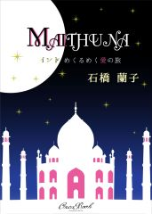
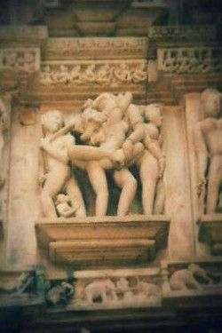

| MAITHUNA: インドめくるめく愛の旅 | |
| 石橋 蘭子 | |
| OrcaBook-Swimming in the Net- (2014) | |

MAITHUNA（ミトゥナ）― 男女抱擁 男女結合 完全なる他者との一致 男女の神秘

あなたは今、偶然にもこの本を手にしてしまった。
これから、僕はあなたを連れて旅に出る。
行き先は、インドだ。
あなたは今、突然の旅の誘いに戸惑っている。勿論、驚いている。
インドなんて遠いと思って、遠慮する。それに、誰かとの約束事が頭をよぎったりする。
だけど、この本を手にしてしまった以上、あなたはもうインドに呼ばれてしまった。
インドへと旅に出た人々の多くは、よくこんな言い方をする。
「僕は、インドに呼ばれたんだ」
どうか目を閉じて。
強すぎる太陽。灼熱と、砂漠。
やけた肌、屈強な男たち。サリーをまとう、目を輝かせた女たち。
駱駝や象がとおりすぎる。褐色の子供たちが、踊っている。
夜は月光。たおやかな満月。
月光に霞むのは、二人きりになった恋人達。
流浪の少年と、ジプシー娘。ひとつになった、愛の形。
そう、行き先は、インドだ。
遥か遠い、愛の国。
あなたはまだ、少しだけ戸惑っている。だけど、僕は、あなたの手を掴んでしまった。
あなたを選んでしまった。
旅、その友として。その仲間として。その恋人として。
僕はジャパニー。そして、僕もインドに呼ばれた人間の一人だ。
他にどんな形容があるだろうか。僕が、自分自身のことをあなたに語るうえで。
もう一度繰り返そう。インドへと旅に出た人は、こんな言い方をする。
「そう、確かにあの日、私はインドに呼ばれたの 」
さあ、これから、あなたは僕と旅に出る。行き先は、インド。
遥か遠い、愛の国。
―北インドへ一緒に旅をしてくれる仲間を求む 人生を変える、めくるめく愛の旅―
「キャッチコピーって、これでよかったんですかね。まだ一人も集まりませんけど」
松川陽太は弱弱しい声でつぶやいた。出国の日は迫っている。
「べつに、集まらなくても俺は結構や。ネットで遊んでばかりおらんで、はよ、仕事してくれんかの」
前田寅吉は、買ったばかりのカメラを触りながら、いたって悠長に答える。寅吉の喋り方は独特。写真を撮るために全国津々浦々を旅するので、方言が混同しているのだ。陽太は負けじと続ける。
「それともなんですかね、この―愛の旅―っていうのが重たいんすかね」
とにかく会話を続けることだ。興味が散漫しやすい寅吉をつなぎとめるために。
「いや、理由はそんな単純なもんやないと思う。つまりな、こっちはイケメン揃いで、だのに、旅行費用はこんな安いし、だのに、現地にいる、こりゃまたイケメンの日本人ガイド付きっていうのが、怪しいと思わせてしまうのかもしれぬ。安いイコール怪しいと思うのが、日本人の考えさね。虫のいい話は疑って疑って、それでアクションせんまま終わり、己の殻に閉じこもってしまう性や」
寅吉はやにさがって続けた。こんなチャンスめったこっちゃ無いのに、勿体ないのう。
一方、冷めた声で陽太は言い返す。
「いやいや、別に顔写真とか出してないですよ。こっちの情報は、年齢とメールアドレスとニックネームだけです。だからイケメンか否かっていうのは、全くもって関係がないと思いますけど」
イケメンて。とにかく、何においても自信たっぷり。そんな寅吉の性格に陽太はもう慣れている。慣れなくては、やっていけなかったのだ。
「あら、そうだったの」
寅吉はすっとぼけた。
じゃあ、なんやろうか？思い当たるのはひとつ。出国は四月である。インドの絶好の観光シーズンは、十月から二月終わりにかけてである。四月は猛暑だ。日中、四十度は軽く超す。でも、と寅吉は考える。でも別に、俺は陽太と二人でインドに行くことになっても全然構わない。へへへ、俺は自分が撮りたい写真さえ撮れればあとはどうでもいいもんね。寅吉は一人でそう完結し、またカメラいじりに精を出し始めた。
それを見て陽太は、寅吉の興味がすでにここになくなったと気がつく。ため息。
陽太は、かりに死んでも寅吉と二人旅なんて厭なのであった。二人旅とは語弊がある。寅吉の長年の友人がインドに滞在しているらしく、その男にガイドを頼んでの三人旅だ。寅吉は、面倒臭いのか、その男について何も教えてくれないので、陽太にとっては正体不明の人物。はたしてどうなることやら、皆目見当がつかない。ずぼらで、写真のことばかり考えている寅吉と、インドに思いっきりつかっているインドかぶれの男と、心配性で生真面目な自分。どう考えても、一人、置いてけぼりをくらいそうだ。誰か、誰でもいいから、他に一緒にインドに行ってくれる人がいれば、最悪の事態は免れることができるかもしれない。陽太はかなり前から旅仲間の募集をしていた。でも、一向に応募の兆しが見えない。
「あの......僕、もしも他に参加者が見つからなかったら、今回はご遠慮させていただいてもよろしいでしょうか？」
急に改まって陽太が言うと、打てば響くように寅吉が口を開いた。
「それはダメ。それだけは赦さん。クビにする」
「そんな！クビにするったって、俺は今まで一度も寅吉さんから給料らしい給料をもらったことないんですよ？」
「給料なんていりません、雑用でも何でもやりますから、写真の撮り方を、ぜひ教えてくださいって泣きついてきたのは、どこのどいつや？」
ほくそ笑む寅吉。ぎくりとした陽太。
そもそも寅吉との関係の始まり方がまずかった。何度そう思ったか知れない。
初めて見た前田寅吉の写真。なんて美しいのだろうと感激した。それで半ば弟子入りを志願するかのように、寅吉の住居兼アトリエのマンションを訪ねた。しかし、美しい写真を撮る人の心が、美しいとは限らなかったのだ。べそをかいている陽太を尻目に、やにわに寅吉は大声をあげた。
「機運は熟した！創造的爆発や！かかってこいインディア！」
天井に新しいカメラをかざして、肩までのびた髪の毛をふりみだし、立ち上がる。
立ち上がりポーズを決めている寅吉を見上げるのにも疲れて、陽太はうつむき、またネットの画面をカチカチとめくり始めた。メールの画面へと再び移動。受信ボックス。それは、奇跡だった。
「あ、あ、あ......。きた！メールがきてるっ！」
画面を見て、喜びに震える陽太。後ろから覗き込む寅吉。不覚にも涙がこぼれそうにしている陽太を押しのけると寅吉はメールのアイコンをクリックした。
「根本紫織 二十六歳 喫煙者 作家志望 赦されるならばガンジスの朝焼けを見て、これまでの不可解な人生を浄化したいと考えています。一身上の都合により、禊をする場所は、ガンジスでなければならないのです。青春が過ぎた今、あのころよりも私は、私のことを熟知していますから。というわけで、よろしくお願い申し上げます」
寅吉は暗唱する。そして続けて一言。
「なんや、この女......」
寅吉が首をかしげていると、陽太はにやにやとしながらいう。とにかく、安堵感で。
「寅吉さん、俺の粘り勝ちですね。さてと、もう少しいろんな手を使って募集をかけてみます。Ｆａｃｅｂｏｏｋであたってみるか......それともｍｉｘｉか......」
急に調子付く陽太。
あと一人女性の応募がきたら言うことないな。紫織さんとやらも、女一人では心細いかもしれない。人との出会いは、時間と場所とタイミング。この三つが揃うことで成立する。
紫織さん、まだ見ぬお方ですが、こんな状況の自分を救ってくれて本当に感謝します。
旅の仲間は多いにこしたことがない、そう感じた。一人でも多いほうが。
それは、いつもかーちゃんが言っていた言葉に相通じていた。
―結局ね、ひとりの力には限界があるんだ。人間に助けられるんだからな、陽太。仲間は多いほうがいいんやで―
うららかな春の陽射し。バケツいっぱいに水を汲んで、根本紫織は、あるお墓に向かった。
二回ほど頭を下げると、墓石の天辺から杓子で水をかける。生けてあった菊を抜き取り、新しい菊の花をそっと供える。紫と黄色と白。線香をたてる。三本ずつを三束。もうもうと白檀の香りが煙る。てらてらと墓石に輝く水。乾いた墓石が水を吸い込んでいくさまを見つめる。
今日は暑かけん、渉も喉の渇いとったよね？
墓石の横にある石碑に、名前が彫られてある。北島渉。その溝を、愛おしく指先で、紫織はなぞった。もう六年経つ。渉がいなくなってから。六年の間、紫織は一ヶ月に一度は必ず、福岡から長崎県佐世保市にあるこのお墓に足を運んでいた。
「渉、今日はうちの誕生日たい？二十七歳になったとよ。あんたの好きなカート・コバーンが死んだ歳と同じ年になったと。ちょっと不吉たいね、そがん歳に手術をせんばごとなるって」
紫織はそういうと、手を合わせた。それからセブンスターを取り出すと、ひとくちだけ吸って、手のひらサイズの香炉につきさす。この香炉は、お墓参りに来るときは必ず持参するものだった。ヘビースモーカーで、セブンスターが好きだった渉のために。
「インドに行ってくるけん......。手術をする前に、行っておこうと思う。先生には内緒だけどね。どうせ反対するやろうけん」
紫織はそういうと、首に巻いていたスカーフをするすると外した。喉仏のすこしだけ下。甲状腺が膨れあがって、コブ牛のコブさながら、ぽっこりとコブが突き出ていた。
根本紫織は、甲状腺機能亢進症、バセドウ病に侵されていた。バセドウ病とはホルモンの異常高値によって心身に様々な影響を及ぼす病気である。
主な症状は甲状腺肥大、眼球突出、発汗過多、手の震え、動悸など。本来十グラムの甲状腺が紫織の場合、百二十グラムにまで肥大化しており、エコーにも写らないと専門医が驚いたほどだった。眼球突出は免れているものの、油断は禁物で、眼科にも毎月通っている。
「ほら、見てん。メルカゾールを二年間も飲み続けとるとに、治らんね、やっぱり」
薬を飲んでも一向に小さくならないコブ。ついに、紫織は手術を決意したのだった。
「九十九パーセント、成功する手術だから大丈夫。だけど、わからんたい？だって、首をちょん切るとやけんね。それに......」
いつも残りの一パーセントに、巻き込まれてきたような人生だったから。ありえないことが、ありえるような。唯一の理解者、渉さえ、神に奪われたのだ。
「でも、別に、そんなことはどうでもいいの。渉が、行きたがっていたインドを見たいとよ」
渉。生きるっていうのは、どうしてこんなに過酷なんだろうか。生老病死。どう転んでも、何かにぶちあたってしまう。渉はいつも言っていたよね―涅槃に入りたい―ってさ。でも―涅槃に入ることができるのは、仏陀みたいな聖人しかダメだから、俺は無理だろうな。どうにかして、凡人の俺でも、絶対に生まれ変わらないようにできないだろうか？―って。
「バカな人やったね、渉」
私は渉に生まれ変わってほしいよ。渉の生まれ変わりに私は逢いたいよ。
「インドについてくる？いいよ。幽霊だったら、無料だし」
紫織はそういって、からかうように笑ったけれど、涙が一筋落ちていった。
紫織はいつも実感する。私を泣かせることができる人は、渉しかいない、と。
バセドウ病になっても、貧乏になっても、どんな状況になっても、涙は一滴も出なかった。なのに、渉のことになると、たちまちに紫織の涙は溢れる。
「罪な男だ、あんたは。どうしてくれるんだ、私の人生......。先に死ぬなんて、最悪なんだから......」
もう何万回も言った台詞をまた口にした。紫織は涙で震えた声でそういうと、またセブンスターを取り出して火をつけた。そして、一本、渉の香炉につきさすと、もう一本自分用に点けた。頬を落ちていく涙。
春の陽射しの中。紫織は、煙草をふかしながら、ただじっと渉が眠る墓石を見つめていた。
東京タワーのそばにある、六本木のクラブで、今日も踊るだけ踊った。
テキーラをあおって、ＤＪと戯れて、相変わらずの世間話。ナンパしてくる黒人の噛んでいたガムと強い香水の、やけにフルーティーな香りが鼻に残っていた。やたらと腰に手をやる彼らの動作にも慣れて、桜もおどけて腰をふる。内心は、バカみたい、と思いながら。
望月桜は、今夜も虚しい気分。オメガの腕時計は、深夜の二時。ひとりで夜道を歩いた。まだマンションには帰りたくない。お気に入りの拓真という男がいるバーに顔をだそうと思った。桜は、二十五歳。モデル事務所に籍を置いているが、それは名ばかりで、やれレッスンだ、やれオーディションだといってお金だけかかる。本当は、舞台女優になりたかったのだが、年齢的にも、この業界ではもう年嵩のほうに入る桜は、オーディションにも落ちてばかりだった。
「ポーズをとってください」「長所を、アピールしてください」
指図ばかりされて、まるで恥をさらしているような気がしてきた。自分の写真を撮る人間に対しても、心を開けなくなった。「素の表情」でいることは、上京してから完全に無くなってしまった。生活費は、イベントコンパニオンをやって稼いでいるけれど、気がつけば、レッスン費用の捻出に追われて、水商売をはじめていた。全部がアホらしく感じ始めたころ、勤め先の高級クラブでパパに出会った。パパっていうらしい、生活費を出してくれて、家賃をはらってくれて、たまに部屋に来る、既婚者のおじさんのことを。パパに出会ってから働くことから遠のいていった。まあ、いいけれど。
桜は、コンクリートで作られたそのバーのドアを開けた。
「いらっしゃい、桜ちゃん。今日はおひとりで？」
拓真は、おしぼりを持ってきた。サーチライトが蒼くて、Ｒ＆Ｂが流れる店内。
「そうよ。一人がいいの。カシスオレンジちょうだい」
「俺も何か飲んでいい？」
「のめば」
桜はそういうと、シガレットケースを取り出した。桜が煙草に火をつけると、拓真はカシスオレンジと、自分用の生ビールを運んできた。乾杯をすると、拓真は言う。
「桜ちゃん、あれ、オーディションどうだった？」
聞かれたくないことを聞かれた。拓真は、こういうことだけは記憶力がいいんだもんね。桜は、やにわに繕う。
「うーん、ボチボチかな」
「なんですか、ボチボチって」
「あのさ、空気を読んでくれない？それでよく水商売がつとまるね。落ちたに決まってるでしょ？」
桜がそういうと、拓真は鼻をすすって、すみませんといった。
「いや、何か、元気そうだから」
「は？これのどこが元気なの？」
「だって前は、桜ちゃん、オーディション落ちた時、身も世も無いような顔してたでしょ？」
拓真はそういって、煙草に火をつけた。ややあって、桜は言う。
「だって、別にもうどうでもよくなってきたから。落ち込むこともないし。夢とか、もういいや」
「ぶっちゃけ、いまどき、夢に向かって一直線！みたいな人のほうが珍しいですよね」
拓真が言う。そうだね、桜は頷く。そしてカウンターにぺたんと頬をつけた。
「ちょっと！大丈夫ですか？」
拓真は慌てるが、ぶすっとした顔で、カウンターに頬をつけたまま桜は言う。
「退屈。めっちゃ、退屈。生きてる感じがしない。どうしよう、まじで。何か、ないかな？」
拓真は考え込む。
「うーん、なんですかね」
私は何がしたかったのだろう。どうしてここにいるんだろう。上京してきて三年。なまじっかお金があると―働かないで―肝要なものが抜け落ちていくんだろうか？
「海外旅行とかいいんじゃないですか？」
拓真がいうと、桜は顔をあげる。
「海外旅行いったくらいで人生が変わるわけないでしょ？オーストラリア、カナダ、ニューヨーク。あと、韓国もか。行ったけど何も変わらなかったし」
「だって一人で行ってないでしょ？知り合いと一緒に行っても、だべって食って、お土産買って、終わりっつーか......」
桜はぎくりとした。そうそう、ぜんぶパパか、仕事仲間のお姉さん達と一緒に行った。
「しかも桜ちゃんが行った国って、全部、安全圏じゃないですか。なんつーか、日本とあんま変わらないでしょ」
「じゃあ、どこならいいの？」
「そうですね、インドとかは？」
沈黙。インドは、桜にとってノーマークの国だった。カレーを食べるのと、象の頭の神様しか知らない。
「さすがにインドに女一人で行けとはいえませんよ、俺は。旅友っていうのがあって、仲間を作っていくと、割と安全だし、初対面同士で楽しいんじゃないですかね」
拓真はそういって、生ビールを飲み込む。
「あっ、そうそう、桜ちゃん。俺ね、結婚することになったんですよ。結婚式、来てもらえますか？」
桜は眉をひそめる。
「は？ちょっと待ってよ」
「げ......。何ですか？」
「あんた、彼女いたの！？」
桜は、眠気も疲れも酔いも覚めた。
「はい、すいません」
「何であやまるの？」
「さあ......」
ひきつる拓真。危うく、拓真の胸倉をつかみそうになった。拓真と桜は何度か寝たことがあった。しかし、そういった関係になっても彼女のことは聞いてなかった。といっても、桜もパパのことを言っていないから、お互い様なのだが。
「ついに、六本木の淡い夢も消えた。あーあ」
桜はまたばたりと倒れて、カウンターのテーブルに頬をくっつけた。拓真は狼狽する。
「ちょっと！そんなあからさまに倒れこまないでくださいよ？俺だってそりゃ、桜ちゃんのことも好きだったんですよ？でも、桜ちゃんには、夢があって、それに、男性遍歴もすごそうだし」
人を傷つけてるのか、フォローしてるのか。ばつが悪そうな表情をして拓真は続けた。
「実は、あの......子供ができちゃったんですよ、彼女に」
そこで、桜はもう一度顔を上げ、拓真に顔を近づけ、目を丸くする。
「子供！？あんたがパパ？」
「子供......俺がパパ」
拓真は泣きそうな顔をした。
「いやいや、もう無理だよ。生活感が丸出し......。あーあ、六本木の淡い夢は、瞬く間に、なだれ落ちてった」
桜はそういうと、またカウンターに頬をぺたりとくっつけた。
「あーあ」「あーあ」
拓真は呆然として、桜はカウンターに顔を突っ伏して、二人は口を揃えてそう言った。
インドか。インドね、わかったよ。ありがとう、心と体の友よ。右も左もわからない東京で、よりどころになってくれた、友達。―今まで本当に、ありがとね―桜は、愕然とそう思った。
インド、ラジャスターン州、ジャイプル。はじめは感動した風の宮殿、ピンクシティも、住んでしまえばどうってことない。日常にすりかわっている。
和山流也は、ジャイプルにある工場で、インド人に混ざって働いていた。朝の九時半から夜の八時まで。南インドから取り寄せた綿を、レディースのワンピースやＴシャツに加工していく。素材を色染めし、ミシンで縫製。次から次に、ビビッドな洋服をダンボールに詰め梱包する。それらの作業は、インド人と分担してやっていくのだが、流也がこの工場で果たすべく肝心な役割は、検品だった。
出来上がった洋服が、日本市場に流通できるレベルか否かをチェックする。やたらに細かい、微に入り細をうがつまでのチェック。その役割は、ここで働くインド人にはできないことだった。ちょっと目を離したすきに、彼らは不良品であっても、オッケーを出して、あっという間に箱につめてしまうのだった。
今日もうだるような暑さ。たくさんのインド人が各自、せっせと働いている。男性も女性も、ヒンドゥー教徒もイスラム教徒も、若者から年寄りまで。みんな仲が良い。
サウナにでも入っているような、暑い工場内。流也は、砂埃で汚れたスカーフを、ターバンのようにぐるぐる頭に巻きつけ、同じく砂埃で汚れたタオルを肩にかけて働いている。それらで時折、頬や首をじとじと流れる汗をぬぐいながら。
かねてより流也が疑問に思うことがあり、それは―インド人が汗をかいているところはあまり見たことがない、何故だ―ということである。だけど、この疑問はいつも日中の暑さの中、汗を拭うときにふと頭をよぎっていく疑問なものだから、いつも尋ねることを忘れ、謎は謎のままでいる。
汗に濡れた流也の体躯。その肌の色は、すっかり日に焼けていた。長いこと、インドの灼熱にさらされてきたからだ。仄暗い、太陽の色。
背丈があり、引き締まって、恰幅が良い流也の身体には、とてもよく似合う色だ。まるで、色のほうが、流也の肉体を気に入って忍び込んできたみたいに堂に入っている。
流也は、ひょいひょいと箱を積み上げる。台車で運んでは、積み上げる。あとどれくらいあるのか、横目で箱を数えた。大きくて鋭い目で。
とにかく、すごい量の段ボールだ。ここでは、洋服が大量生産されている。
こういった肉体労働がさほど苦にならないのは―ただしこの暑さは苦だった―流也が生まれてから培ってきた体力のおかげだ。逞しくて、勢いが漲っている四肢。その秘密は、幼少のころから太鼓や、ドラムを思いっきり叩いてきたからだった。
内股、ふくらはぎ、胸、腕、肩、総出で、とにかく身体の全部で、リズムをとっては、打楽器をぶっ叩くのだ。壊すみたいに、暴くみたいに、叩き割るみたいに。
だから流也の四肢は、動けば動くほど精彩を放った。
大量の段ボールを運び終えると、流也はその場で胡坐をかいてひとりごちる。
「完全にギブ......」
座ったと思ったら、ちょうど、向こうから同僚のスニールがやって来た。にやにや微笑んで、チッチッチッと舌打ちをしながら。流也はヒンディー語で、スニールに大きな声でうったえる。
「スニール、あついよ～。腹減った」
スニールは首を一瞬、ほんのちょっと横にかしげて、すぐ戻す。その仕草はとても可愛い。男性のスニールがやっても、とても可愛い。首を横にふるのは、インドでは否定じゃなく肯定の意味。スニールは口を開いた。
「お昼だよ、ご飯食べよう」
「いこいこ、でも、ちょっと待って。俺、その前に事務所に寄ってくるから」
流也は、胡坐もつかの間、立ち上がって事務所に向かう。その途中、頭に巻きつけていたスカーフを外し、乱れた黒い髪を、頭をふって整える。
「あっちー、あついよ～、くそ暑い！お、おっと！」
ねずみが一匹、勢いよく流也の足元を走り去っていった。よかった、危うく踏んでしまうところだったぜ。工場の中には、動物も混ざって、共に生活をしている。
事務所の天井にある扇風機は、いつも壊れそうな音をカタカタカタカタとたてながら、とてもぬるい風、というか熱風を送ってくれる。ペンをとりだすと、左手で、何やら熱心に書き始めた。左利きの流也は、インドではけっこう困りものだった。左手は不浄の手とされていて、食べ物は、右手でしか口に運べないのだ。それでも、今じゃ右手の使い方も、随分ものになってきた。一気に集中して文字を書き終えると、ペンを戻して事務所を出る。これから休憩だと思うと、嬉しくて、流也は腿のあたりをスカーフで叩いては、リズムをとって、スニールのもとへダッシュで向かう。
―頭は悪くてもいいんだよ、集中力があれば何とか生きていけるもんだ―
流也の父親はそういって、ほぼ無理やり小さい流也に楽器を習わせた。
父親は、いつも書斎にこもって研究ばかりしていた。流也の父親は、専門はインド哲学で、なおかつインダス文明の研究に生涯をささげている稀有な大学教授だった。インダス文明の謎を解き明かそうとしている学者は、日本には非常に少ない。虚を掴むような空説で満ちているからだ。忽然と消えたインダス文明。それは、アーリア人が滅ぼしたのだとか、地殻変動があったのだとか、あまたの仮説がある。インダス文字さえいまだ解明されておらず、その興亡は深い謎に包まれたままだ。しかし、父親にとってはその謎こそがロマンだった。
休日も必ず、考古学の勉強会を主催し『リグ・ヴェーダ』『マヌ法典』を片手に、インダス文明の講義をした。
流也の実家にはインドの物珍しい置物がたくさんあった。父親が頻繁にインドへ行っては、お土産を買ってくるからだった。
カラチ国立博物館においてある、『インダスの瞑想者像』のまがい物から始まり、シタールやサーランギーなどの楽器まで。玄関の壁にはクリシュナ神の絵画がでーんと飾られていた。クリシュナは色男でモテモテの神様のこと。笛を吹くだけで女を酔わせてしまうという、ヒンドゥー教の愛の神様だ。白亜のタージマハルの置物もあって、流也は、それが悲しい愛の物語で縁取られた霊廟だとは露とも知らず、きれいなお城だと小さなころから思っていた。
インド人の留学生の出入りも激しかった。母親はチャイやラッシーを当然のように作ってふるまった。母親は大学の助教授で、専門はインド声楽だが、何故だか英語学の授業を持っていたりする。
両親ともに、かなりマイナーなのである。両親を見ていると、とにかくインドの神秘に魅せられてしまった人間のはまりようは凄まじいと感じる。
兄弟は三人。流也の一番上の兄は、とても優秀で、大使館に勤めている。二番目の兄は、東京の大手証券会社に勤めている。そして両方、結婚している。しかし、流也は、音楽に明け暮れて、就職活動なんて一度もすることなく、独身の二十六歳だ。周りからは、風来坊とか根無し草と呼ばれている。三人もいるんだから、一人くらいこういうのがいても仕方ないだろう、と流也の父は思っているらしい。二勝一敗だと、揶揄したりする。
流也は、二十歳を過ぎた頃から、インドに足を運ぶようになった。聞きしに勝る凄惨さを目の当たりにした。はじめは一週間の滞在が限度だった。インドが阿修羅のごとく恐い顔に見えたから。
それで、日本に一度は帰国するが、どうしてもまた行きたくなってしまう。
初めて観光ビザが切れるギリギリまでインドにいたのは、二十三歳の頃。
日本に帰るのが嫌になった、ただそれだけだった。その頃よく呟いていたセリフ。
―認めたくないものを認めざるをえないとき、人は、死にたい気持ちになるもんだ―
でも、それからだった。
阿修羅のごとく恐い顔をしていたインドが、初めて相好を崩してくれたように見えたのは。
そこのジャパニー、ここにいてもいいぜ、って。
たがが外れたような顔をしたバックパッカー達にたくさん出逢った。
流也もその一人だったのかも。何かを信じすぎたりすると、いつか必ずたがが外れる時がくる、反動がくるんだと知った。
信心と懐疑心は、互いに影を投げかけ合いながら、立ち現れてくるもの。相対的に。
あれは、カルカッタで。流也はインドのモンスーンを経験した。雨水で街が溢れかえっていた。豪雨と洪水。信じられないくらいの大雨。それなのに、流也は水びたしのまま、雨に打たれて手をひろげていた。やまない雨に、しとど濡れて目をつむる。
勢いよく、足元をすくう泥水。川のように猛々しく流れこんでくる。死ぬかもしれない、そう思ったけれど、抗えなかった、本能に。
「He is crazy!」
すれ違い間際、どこかの誰かがそう言った。
恵みの雨、これは恵みの雨なんだって、誰もわかっちゃいない。
すっかり泥だらけになった身体。土砂降りのなか、精霊の囁きがきこえるようだった。
流也は涙があふれた。この快感は、誰にもわからないさ。
インドの大雨に手を広げながら、口元をほころばせた。
工場には、食堂がある。食堂といっても、メニューがあるわけじゃない。それぞれ持参している弁当をもちよって、談笑しながらむしゃむしゃ食べる。三段重ねの丸いステンレスの弁当箱をあけて、チャパティを食べているスニール。お向かいで、チャパティとヒヨコマメのカレーを食べる流也。
スニールはヒンディー語と英語のミックスで、いつも流也に話しかける。英語をまじえてくれるのを、優しさだって感じている。
「この仕事、流也はもうすぐ終わりでしょ？来週までだろう？」
スニールがいうと、流也は首をかしげる。そうだよ、って意味。
「流也は本当に良い人。神様に守られているよ。あなたがいない時間を考えると、とても、アイミスユー」
真顔で、アイミスユーと言うのだ。流也は、男性からそんな風に言われたことはなかったから少しひきつったが、ふっと笑って言った。
「仕事がなくても、またすぐにジャイプルにくるさ。スニールに逢いにくるよ」
流也はそういって続ける。
「再来週から、ちょっと旅に出るんだ。日本から友達が来るのさ。しょうがないんだ、その友達がね、インドを案内してくれってうるさいんだよ」
うるさいってもんじゃないんだ。脅してくるの、しつこいってもんじゃない。ああいうのを恐喝というんだろう。前田寅吉っていう、一徹者のカメラマンで、大学時代の先輩だよ。鼻持ちならぬ態度で、敵は作りやすいし、おまけに口が悪いんだ。でも、時として、信じられないくらい面倒見が良くなったりする、仏性がある、変な人だよ。かりがあってね、だから、今度は俺、返さなきゃって思ってんの。
さて、これを訳せるか訳せないか、舌を反って、ヒンディー語で喋れるか否か、流也は考え込む。
うん、絶対無理だな、とばそう。スニールはたずねる。
「どこを周るんですか？」
「デリー、バナラシ、アグラ、あと、カジュラホー」
流也は言った。カジュラホーは、まだ行ったことがなかった。しかし、カジュラホーの観光スポットである寺院のミトゥナ像のことは知っている。ミトゥナ像のトランプが、実家にあったからだ。男女が、性愛の歓びに満ち、幸福感に包まれ抱き合う姿。すごい量の、男女抱擁像のレリーフ。
「カジュラホーは本当に、いいところです。アグラもいいね。でも、バナラシは少し気をつけてね」
スニールはそういうと、褐色の右手で、軽やかに紫色の生たまねぎをつかみ、口に運ぶ。
「ありがと、スニール。っていっても、旅行までまだ時間があるんだから」
流也はそう言って笑う。スニールは、顔をあげて首を傾げる。その時、スニールの額に大きな蝿がはりついていて、思わず流也は笑ってしまった。インドの女性が額につけている、ビンディーよろしく。
夕方。ただでさえ赤茶色のこの街は、ほとんど神秘的に、蜂蜜色のニスをたらしたように光り輝く。砂塵が舞い、象や駱駝にまたがる人もいれば、地べたに寝ている人もいる。
夕方休憩で、あたりをちょっと散歩するのが日課になっている。外で吸うビディは格別にうまい。ビディというのは葉巻煙草。乾いた柿の葉で、タバコの葉を細かく砕いたのを巻いたものだ。ビディは、とても強い味がする。でも存外に、ビディは流也の口に合っていた。安いしうまいし、言うことないと思うと、さらにおいしく感じる。
夜の八時。仕事が終わった後、流也の行動パターンは二つあった。十一時くらいまで、そのまましばらく工場の事務所に残って酒をのむか、屋台に寄って自分の家(工場から徒歩十分)に帰るかする。
夜の十時。流也は事務所にいた。今日は事務所にいる日だった。
二杯目のマックドゥウェルにラム酒を注いでいたら、事務所のドアがバンとあいた。開けたのは、ここの工場を管理している坂尾という日本人男性だ。三十六歳で、流也と十歳離れている。カバンを肩に掛け、書類の束を脇にかかえ、カンカン帽を被っている。一週間前から、坂尾は工場に不在だった。日本人デザイナーがデリーに来ているらしく、会いに行っていたのだ。
「おー、流也、ごめん、遅くなったね。インドの交通事情は知ってのとおりだけど、今日はとことんバスが遅れたよ。ありゃ、ひどかったな。今度こそは、バスがぶっ壊れて死ぬかと思ったよ。ん、酒くさい......」
事務所の椅子に座っていた流也は、にやりとして、その声で立ち上がる。
「お先に、晩酌してました」
「ほんとに好きだね、そのウィスキー」
坂尾はそういうと微笑む。流也は事務所の冷蔵庫から、マックドゥウェル・ナンバーワンというウィスキーを取り出して、飲んでいたのだった。ちなみにこれは、ラジャスターン州限定のウィスキーである。
「よし、今日はとことん飲むか！流也」
坂尾の声にほろ酔いの流也の眼が反応する、ゆるりと。
坂尾は荷物を置いて、自分のグラスをとりだすと、ウィスキーを注いでいる。
去年の十二月。流也は偶然、ジャイプルの屋台で坂尾と出逢った。流也に気がつくと、坂尾は近くによってきた。
「ジャパニー？」
「イェ」
流也が答えると、坂尾は嬉しそうに言った。
「めずらしーね、こんなところに日本人がいる」
そして、流也の隣に座った。屋台で出されているサモサとミルチパコラ、交互に食らいついていたところで、坂尾は笑った。
「きみ、よくお腹こわさないね、そんなにがっついて」
「俺、大丈夫なんですよ、不思議と。生水は、避けてますけど、この間、間違ってのみました。でも平気で......」
流也は、またパコラを口にする、がつがつと。流也の特にお気に入りは、このミルチパコラという、青唐辛子の中にベジタブルをいれて揚げたものだ。
「日本人は、みんなホテルのレストランとか、高級レストランじゃないと、お腹壊しちゃうからさ、めったに屋台でお目にかかることはないんだけどね」
坂尾はそう言うと、ヒンディー語で食べ物を注文する。かなり慣れた発音で。そのとき軒先からスズメが絡まりあって落ちてきた。流也は目を丸くし、スズメを見つめる。何があったのか、スズメ同士、大喧嘩をしているらしい。坂尾が流也にたずねる。
「お腹を壊さないコツを教えてよ。俺ね、長いことインドにいても、やっぱり定期的にお腹壊しちゃうんだ。原因は解らないんだ。でも屋台の飯が好きでやめられないんだよね」
この人はやたらに背筋がぴんとしている。流也はそう思うと答えた。
「こつがあるとしたら、なんでしょうね。怯えないことかな。来るなら来い、みたいな」
坂尾は笑う。まるで毒蛇に立ち向かうような言い方をするんだね、と言って。
「おもしろいね、きみ。で、ジャイプルにはどのくらい滞在する予定なの？」
「何も決めてないですよ。着のみ着のままに」
どこからか花火の音がした。バンバン、バン。日本では夏のイメージが強い花火だが、インドでは年中、花火があがっている。お祭りや結婚式のたびに花火。
とくに十二月は、インドの結婚式シーズンで、インドの結婚式は、花火なしでは成り立たないのだった。耳を澄まして、花火の音を聞いていると、それに気がついた坂尾が口をひらく。
「花火好きなの？」
「ガキの頃の思い出があるんですよ、花火は」
そのまま二人は意気投合して、時間を忘れて話し続けた。坂尾は、アパレル業をしていて、工場がここにあるから、ジャイプルに住んでいるそうだ。
「流也は、バックパッカー？」
「うーん、そんなとこです」
多国籍のバックパッカー達に紛れて泊まるドミトリーやＹＭＣＡ、安宿をわたり歩いていた。
「俺ね、いつも思ってたんだけどさ、インドにいるバックパッカーって、他の国で見るバックパッカーとはちょっと雰囲気が違う気がするのね。完全にバックボーンがないっていうかね、進歩や科学や、なんかそんな文明を忌避してここに流れ着いたっていうかさ」
「あの、俺もそんな風に見えますか？」
流也の言葉に、坂尾は、
「ちょっと、そんなに挑むような目で見ないでよ。狼みたいな目で......それとも、ん？何か気に障るようなこと言っちゃったかな？」
インドに流れ着いた日本人バックパッカーは、どうせシャブ中だろ、みたいな偏見がある。一部が全部と思われる、まあ仕方ない。偏見を持っていない人間なんていないんだから、俺も含め。
流也はそう思いながら、いいえ、べつに、と答えた。すると坂尾は、
「俺さ、ちょっと感動しちゃったのよ。君みたいなバックパッカーってあんまり知らないから。俺が今まで見てきたバックパッカーと違うから。だから聞いたんだよ、バックパッカーなのかって」
「え？何が違うんですか？」
「何か大きな目的があって、ここにいるような、そんな顔をしてるから」
流也はふっと笑う。
「目的か。そんなもんがあるといいのですが」
「人生の流れを調整するためにここにいるというか、一時的に、足止めを食らっているというかね。長い人生で、そんなことあるじゃない？あの信号で止まらなかったら、事故にあっていたかもしれないっていう」
「カルマってやつですね」
流也は言った。今に導いたものは、過去という瞬間の蓄積だ。行為の蓄積。すると坂尾は話を変えた。至極、自然に。
「ヒンディー語は、ある程度、理解できるでしょ？」
「そんな、全然わかりませんよ。日常会話は食うために嫌でも覚えたってくらいで」
「それで十分だよ」
「は？何が十分なんですか？」
「ちょっと、アルバイト感覚で工場の手伝いをしてもらえないだろうか？部屋は準備する。自由に使ってくれてかまわないから」
「仕事するんですか？俺が......」
流也は、想像してみることにした。インドの工場で働くということを。想像できるかできないか、それでほとんどが決まる。そして、なんと、できたのだ。
「あ、でも、面白そうですね......」
ジャイプルの部屋を借りられる。それは流也にとっても、かなり好都合だし、何より工場の仕事っておもしろそうだ。
「来年の四月くらいまで、短期のバイトだと思って、気軽にやってもらえないか？」
実際、坂尾はとても困っていた。色々と揉め事があり、頼みの綱の日本人が辞めていったらしい。ということで、流也は、工場の仕事を手伝うことになった。
生温い夜風が、窓から入ってくる。坂尾もほろ酔いになっている。流也に話しかけた。
「ずっと聞きたかったことがあるんだけど、たまに流也の部屋に来るあの女性は彼女？」
ビディをくわえ、マッチをすると、先端に火をつけた。そして、流也は顔をあげた。
「いや......彼女ではありません」
流也は軽く微笑むと煙と一緒に言葉をはいた。坂尾はくくくっと笑う。
「正直だね、流也は」
流也の部屋にたまに来る女というのは、デリーに住んでいる邦人の女性で、通訳の仕事をしている岡崎加奈子のことだった。ジャイプルの宝石屋で出逢った。加奈子の方から声をかけた。いわゆる逆ナンというやつだった。加奈子は、いかにも海外勤務するキャリアウーマンにありがちなタイプの女性。三十歳、きれいで、独身、結婚をしたがらない。それで、どこかすごく孤独。だからまるで抱かれるためだけに流也に逢いにくる。ヨーガや、アーユルヴェーダのマッサージにいそしむ加奈子の身体は、はりがあって、艶々している。いつもベッドの中で、加奈子は流也との関係が気に入っていると言う。加奈子が流也の身体に夢中なのは、だから、一目瞭然だった。
しかし、流也には複雑な面があった。女性と長時間一緒にいるのが苦手なのだった。
日本にいた頃からそれは変らない。たとえ、女と抱き合うことがあっても、添い寝することがあっても、長時間はムリ。次の朝までなんて絶対にムリ。それはいつの間にか、流也のポリシーみたいになっていた。だから岡崎加奈子も、部屋には泊まらせたことがない。
「彼女はつくらないの？あっ、もしかして、日本にいるとか？」
やにわに坂尾はたずねる。
「なんですか、今日は。俺は、彼女とか作らないし、日本にもいませんから」
いやね、といって坂尾はカバンの中から赤い糸玉を取り出した。
「これさ、もらったのよ。デザイナーさんに。インド人がよく手首に巻いている赤い糸」
流也も知っていた。宗教儀式の時には、この赤い糸を司祭様が巡礼者一人一人の手首に巻いてやり、マントラを唱える。幸運を祈るために。宗教儀式に足を運ぶ回数が多い人ほど、手首にはたくさんの赤い糸を巻いている。
「流也に巻いてやろうと思ってね。赤い糸を。素敵な伴侶に出会うためにさ」
「いや......俺はべつにいいですよ、そんな」
「ごまかさないで聞いてよ。俺は、流也は大失恋でもしたのかなって勝手に思ってんのよ。健康な二十六歳のわりには、ステディな恋人とか、恋愛には無関心っていうかさ」
流也はにっと笑う。坂尾の、配慮というか、思慮深いところが好きなのだった。
「まあ、結婚失敗してる俺が、何を言えるわけじゃないけど。俺さ、赤い糸ってあると思ってるの。黒い糸もあるけどね。間違ったら、ジ・エンドだから気をつけないと」
そこで流也はふきだした。黒い糸って、腐れ縁のことだろうな。
「なんで、赤い糸があるのかっていうのはね、人間って愛してる人じゃなくて、愛すべき人と結ばれるのよ」
「愛してると愛すべきと、どう違うんですか？」
「たとえばね、ピアニストはピアニストにしかなれないし、猿は猿にしかなれないし、なりたい自分になるんじゃなくて、なるべき自分になるものなんだよ、みんな。生きとし生けるものみんな、なるべき姿になるんだ。それと同じで、いくら愛してるからといって、相手の赤い糸が、自分の赤い糸の端と結び合っているわけじゃなくて。たとえば、一時的に結ばれても、それが本当じゃなければ、どうにかしてでも神様は、本当に結ばれている人のほうへ向かわせようとするものなんだよ」
「え......どうやって？」
流也が聞く。坂尾は冗談交じりに、災いを起こしたりね、色々だよ、と言って続ける。
「あー、そういや、流也を連れて行ってあげればよかったな、ジャンタルマンタル。すぐそこにあるのにね」
ジャンタルマンタルは、天文学や占星術に熱心だったマハラジャが作った天文観測機器。幾何学的模様のオブジェ。流也は言った。
「近いとなかなか、行きませんね」
坂尾は、器用にくるくると流也の手首に赤い糸を巻いた。手首に巻きつけられた赤い糸。
「人間はね、あざ笑っていたものから、いつか必ず泣かされる。これがね、俺の哲学だ。よく覚えとけよ。恋愛をあざ笑っている奴は、恋愛に泣かされるんだ」
何を思い出したのか、坂尾はそういった。
「赤い糸の御利益があればいいですけどね」
流也はそういうと、赤い糸をひっぱってみた。何で定義づけて、それを恋愛だと呼ぶのだろうか？
窓の方に立ってみると、猿が木陰から、さっと動いて消えた。そこで坂尾は、
「流也、一旦、短期のバイトは終わるけど、真剣に働かないか？うちの社員として、今度は」
坂尾の突然のスカウトに流也は思わず黙り込んだ。
「まあ、考えといてくれ。旅行中にでも。えっと、その友達はいつ来るんだったっけ？」
「再来週、二十二日です。あっと、そのことなんですけど」
流也は眉をひそめた。さっき、工場にあるパソコンに寅吉からメールが届いていた。(寅吉は流也のノキアにはお金がかかるから、緊急時以外には電話をしてこない)寅吉とアシスタントの二人でインドに来るかと思いきや、なんと四人で来るというのだ。女性が二人増えたらしい。そこで寅吉は、ガイドの追加を検討するべきじゃないかと提案してきた。
「うん、インド人のガイド一人つけるべきだよ。女の子が二人もいたら、流也一人じゃ大変だよ。無理無理。ここはインドなんだから」
坂尾は案の定、そういった。それで、坂尾の知り合いのガイドを頼むことになった。
「ガイドの件は、早速明日にでも、連絡をとってみるから大丈夫。でも、おもしろいね、何でそんなことになったの？」
坂尾は笑った。それは、誰より流也が一番感じていることだ。寅吉は、何をしようとしているのか？
「俺の友達、引き寄せるんですよ、そういうのを。いつも」
そういって、流也は頬に舌で山をつくる。
「まあ、本当に気をつけてよ。良い旅行をね！それで、返事、楽しみにしてるよ」
坂尾はそこで、とても晴朗な顔をしたのだった。
エアーインディア３０７便は、インドに着陸した。八時間の飛行の果てに、初めてインドに降り立った男二人と、女二人。それにしても、出国時は狭く小さな曇り空だったのに、同じ空かと見紛うほど、晴れ晴れとした大きなインドの空に驚倒する。
一番乗りで、タラップに飛び出してきたのは前田寅吉。飛行中から、彼の狂喜乱舞の態といったら、すごいものがあった。
「ついたぞ、ついたぞ！うっひょー」
寅吉は、サングラスをカチューシャみたいに頭にしたまま、ドタドタと走り出す。
その後ろで、カンカン帽をかぶった松川陽太が小さく震えながらとぼとぼ歩いている。寅吉の分の荷物まで詰め込まれた、十キロあるバックパック。
成田空港のエアーインディア搭乗口で、最後に聞いたかーちゃんの声。心配して震えていた。
まるで、今生の別れのような親子の会話。
もう電話はしないでくれ、料金がすごいことになってしまうからさ、うん、ちゃんと生きて帰るから信じて待っててよ。え？テロに巻き込まれる？え！お前はマラリアの恐ろしさを知らない？なになに？コレラがどうしたって？ちょっと落ち着いてくれよ、うん。え？狂犬病になったら終わり？なーに、言ってんの、大丈夫さ。無事に帰ってくるさ。とーちゃんにもヨロシク伝えといて。
男らしく気丈にそういって、電話を切って八時間。すでに日本に帰りたい気持ちが大きい......。すれ違うインド人達のぎょろっとした目が恐いし、清潔感とは程遠い、古い校舎のようなこの雰囲気。ここは空港なのだろうか......。それになんだ、この、あたりを漂う異臭は......。その時、前で寅吉が振り返る。
「何をぼさーっとしとるんや！ほら、さっさと歩け！温室育ちのもやしっ子が！」
寅吉はそういうと、またドタドタと歩いていく。
「ってか、何い？あの人。まじで自己中だよ！よくあれで、リーダーみたいにしてるよね」
陽太に後ろから声をかけたのが、望月桜で、あー、煙草が吸いたいな、と言いながらコンパクトを手に化粧直しをしながら歩く。それにしても桜の格好には、皆一様にびっくりしたものだった。露出は避けるようにと言われているインドに、短パンをはいて、かかとが高めのミュールをはいてきた。長い髪の毛を、ぐるんぐるんと巻いている。モデルをやっているらしい、望月桜。きれいなんだけど......。
「あの、桜さん。再三注意しましたけど、その格好は、変えるようにしてくださいね、それから公の場所ではあまり化粧直しとかしないでくださいね」
陽太は、念をおす。すると、桜は陽太をにらみつける。
「頑固親父！」
といって、カツンカツンと歩いていく。陽太は、がくりとして、自分の後ろを振り返る。陽太は目を見開く。根本紫織が具合悪そうに胸を押さえているではないか？一体、どうしたのだろうか......！
陽太は、そっちに駆けていく。苦労が絶えない人生。旅仲間の募集が集まったのもつかの間、ミイラ取りがミイラになってしまったかのような気持ちでいた。そもそも、寅吉との出会い方もそうだった。この悲運から、逃れられないらしい。
「紫織さん、どうしましたか？」
紫織は、眼鏡をかけて、首にスカーフを巻いている。このメンバーの中では一番、しっかりしているというか、一番、普通に近い人だと感じる。ただし、ちょっと神経質そう。
「ちょっと、立ちくらみがして......」
紫織は、今日まだバセドウ病の薬を飲んでいなかった。搭乗時間はボリウッド映画を見てすごし―ボリウッド映画ときたら、一体、どのような脈絡からなのか、登場人物が突然踊りだす。映像の展開も、ダイナミックだ―そして、インドに入ったと同時に、飛行機の窓からインドの大地を見下ろしていた。窓からのぞいたインドの風景は、見渡しても、見渡しても、乾いた茶色い土が広がっており、トタン屋根と藁葺き屋根が、あちこちに群れになっている様。首都デリーに向かっているとは思えなかった。景色に目を奪われているうちに、薬を飲むことをすっかり忘れていたのだった。
「うっ......」
紫織は突然、甲状腺腫が疼きはじめて思わず声を出した。一般的に、痛みがないといわれているが、紫織の場合、血液の流れが激しい時や、緊張した時などは、百二十グラムもあるのだからズキズキとするのだった。
「ちょっ、ちょっと！紫織さん？」
陽太がそういうやいなや、紫織はおでこの汗をぺたぺたと叩きながら、何やら薬らしきものをとりだして、水も飲まずに嚥下すると、陽太に告げる。
「これで大丈夫ですから...」
その一部始終を、陽太は唖然と見ていた。
ここは、まだ空港。まだインドに着いたばかり。インドの一部を垣間見ただけで、旅仲間はこの有様なのだ。陽太は、果てしない未来を想像すると、もらい立ちくらみをしそうになった。いかん、いかん。頭をふって、目をぱちくりとしばたかせると、陽太は持ち直して、たずねた。
「気分が優れないということでしょうか？どうしましょうか......旅に支障が出るくらいに、体調が悪いですか？」
「いいえ。あの、どちらかっていうと、いつものことなんです。気にしないでください、すみません」
紫織はそういうと、眼鏡を調え、おでこの汗を手でぱちぱちと叩く。
入国審査を終えた寅吉と桜は、残りの二人の入国審査模様を見ながら並んで立っている。たくさんのインド人がごった返している。全体的に薄暗く、変わった匂いがする。辺りは、ヒンディー語の嵐だった。寅吉は、入国審査をしている根本紫織に目がとまった。やっぱり......。
前田寅吉は、根本紫織を見たときから、うすうす感じていた。彼女が、只者ではないということを。彼女の後ろには、誰かがいるのである。物理的に、いる、わけではない。でも、いるのだ、確かに。寅吉は、紫織から視線を外す。いやいや、ただの疲れかもしれない、でも。
そこで寅吉は、隣に立っている桜に声をかけた。
「おい、桜」
「もう、呼び捨て？何？」
桜は、そう答えると舌打ちをする。初めて前田寅吉と挨拶を交わした時から、寅吉のいかにも亭主関白、みたいな感じが鼻につく。顔の造作は確かにいいけれども、私は無理だな、こういうタイプの男。かといって、陽太みたいに生真面目な男も嫌！顔立ちは、可愛いし、好青年って感じだけど、あそこまでキビキビしてるのは、ちょっとね。何を期待していたのかわからないけど、プチ失恋の後だ。下心がないとはいいきれない。それにしても、インド人、かぁっこいいー！すれ違うインド人が、にこりと桜に微笑みかける。桜もにこりと笑顔を返したとき、
「おい、きいとるんか？」
寅吉の声でさえぎられる。
「なあに？」
「桜は、霊感とかないよな？」
「は？何いってんの？あるわけないじゃん。そんなの」
「だよな、すまん。はっはっは」
寅吉はそういって豪快に笑うと、腕を組んだ。
「どうかしてるんじゃない？」
桜はそういうと、またインド人に笑顔をふりまく。
―そうや、俺は、どうかしているに違いない―
念願のインドに降り立ち、わくわくしているのは、確か。だけど、寅吉は、成田空港にいた時からどうしても気がかりなことが一つだけあった。寅吉には少し霊感なるものがある。
しかし、寅吉に幽霊なるものが見えたのは、子供の頃の話。二十九歳の現在。
あの力が戻ったとでもいうのだろうか？
あれは小学校二年生の時だ。交通事故で、従兄弟が死んだ。一番仲が良かった従兄弟だ。自転車にのっていて、トラックにはねられた。葬式がすんだ後、親戚皆で事故現場に行った。花をそえたり、線香をあげるためだ。しかし、事故現場に到着した途端、寅吉は、自分の目を疑った。そこには、従兄弟が立っていたのだ。待っていた、という方が近い。泣きながら事故現場に花をそえる叔父や叔母を、すぐそばで従兄弟がじっと見つめているのだ。葬式の間、棺に入った従兄弟を見たはずだったのに。火葬場にもいったはずなのに。
「おじちゃん、てるくんが見てるよ！てるくんが、ここに立ってる！」
寅吉は叫んだ。ここに、てるくんがいることを、誰も信じてくれなかった。目に見えないから、だ。当たり前だろう。寅吉は気が変になるかと思った。てるくんがここにいるのに、誰も気がつかないなんて......。
てるくんは、寅吉に微笑みかけると、いなくなった。そして、従兄弟が消えると、寅吉が手に持っていた線香の束が、その先が、炎のように燃えあがった。信じられなかった。風が強い日で、それまでまったくといっていいほど火が灯らなかった、線香が。
最初で最後だった。あんな体験は。その体験は寅吉に大きな衝撃を与えた。以来、寅吉には空間を、注意深く凝視するという癖がついた。写真に夢中になったのも、そこでは、景色であるにも関わらず、何か見落としている一瞬を見ることができるからだった。写真に撮ることで初めて、三次元の世界から、一次元の広がりを浮かびあがらせることができるのだ。
寅吉は、まさかインディラガンディー空港で、こんなに遠い過去を回顧するとは思いもしなかった。なんだかちぐはぐだ。腕を組み、思惟に耽っていた寅吉は、また目をかっと見開く。入国審査を済ませた二人がこっちに来る。陽太と紫織。紫織を不可避的に、再び目にした寅吉。
「やっぱり、いる......！」
寅吉は、組んでいた腕を外すと、硬直して、一目散に走りだした。
「ちょっと！寅吉さん、待ってくださいよ！」
陽太は、叫ぶ。寅さんは、いつも以上に頭がぶっとんでいるらしい。鬼ごっこをしているんじゃあるまいし！いい加減にしてくれ！
「すみませんが、みなさん急いでください。奴を見失っては大変です！」
陽太はそう女性陣に告げると足早に動き出す。
和山流也は、空港を出たすぐのところで「タイガージェットシン」とマジックで書かれた画用紙をもって立っていた。流也の隣には、インド人ガイドのビマルという男が立っている。合言葉の「タイガージェットシン」を見つけた寅吉は、そこまで走っていく。
「ナマステー！」
「おっせーよ、どんだけ待ったと思ってるの？」
流也は、そういった。おでこに巻きつけたスカーフ。すっかり日焼けした小麦色の肌。寅吉は言った。
「久しぶりやね。しかし、よう、インドにかぶれとるのう」
流也は、頭をぐしゃぐしゃとする寅吉の手をのけると、にーっという顔をした。
「うえー、何や、その歯の色は！真っ赤や！気色わるー」
すると横からビマルさんがくすくす笑う。流也は「どうだ、驚いたか！」といって噛み続ける。
「流也、さっきからパーンを噛んでいますね。あなた達が遅いから少し、リラックスしていましたね」
寅吉はその声を発するインド人ガイドに気がつき頭をさげた。
「はじめまして」
寅吉は頭をさげて、連れてきたみんなを紹介しようと後ろを振り返る。陽太と紫織、桜が三人で走ってきている。
「あれが、旅仲間？」
流也は聞いた。
「そうそう」
寅吉がそういったと思いきや、
「ってか、超イケメンじゃない！？はじめまして、望月桜でーす！」
流也を見た途端、桜はそう言った。おおっと、すげー格好だな、流也はそう思ったが、
「ナマステ、桜ちゃん」
とにやりと笑ってそう言う。桜は驚愕した。流也の歯が真っ赤だった。
「驚かんでええよ、これ、インドの噛み煙草なんや」
寅吉が桜に言う。なんだ、びっくりした！イ、イケメンだけど、変わった人......。
陽太は、流也を見るなり目を疑う。あれ、どこかで見たことがある？
「あの、はじめまして、松川陽太と申します。今回は大人数になってしまい......」
「ぜんぜんかまわないよ、楽しくやろー。こちらが、ビマルさんっていうガイドね」
流也は飄々としてそういうと、ビマルを皆に紹介する。ビマルさんは自己紹介を始める。
「私の父は、マハトマ・ガンジーが亡くなった日に生まれましたね」
ビマルさんは、なんと父親の生誕にまで遡り、自己紹介を始めたのだった。
そんな中、桜はちらっと流也を品定めする。ターコイズブルーのＴシャツを着て、やけた肌。長身の寅吉と変わらないくらい身長も高く、スマート。大きくてきれいな目。こんなイケメンが孤独に一人、インドにいるなんて、なんか訳ありだよね、絶対に。厄介な女に追いかけまわされて日本からインドに亡命したとか？謎だわ。桜は首をかしげた。
ビマルさんの自己紹介が終わると、寅吉が手をパンパンと叩いた。
「えーっと、こちらが和山流也。現地の日本人ガイドって書いてた、あの人物や。流也は、三年前くらいからほとんどインドにいる。困ったことがあったら、そのつど、こいつに聞いてくれ。みんな、仲良くしてやってな」
「よろしくねー」
流也は、そう言って両手を広げると、徐々に幅を狭めてゆき、合掌すると目を瞑った。
流也の手首に赤い糸が巻きつけられている。こうすると司祭様に見えなくもない。横で笑いながら、ビマルが言う。
「神に感謝するとき、インドでは必ず手を合わせますね。私もします」
ビマルもそういって合掌した。陽太は―こんなところで、突然合掌をはじめるなんて、さすが、寅吉さんの親友だ。類は友を呼ぶ。流也さんも、頭が少しいかれているのだろう。なんて憐れだろう―そう思い合掌。桜は―何これ、インドの旅の通過儀礼？インドの流行？―と思いながら合掌。何故だか寅吉と紫織は目をばちっと合わせ、行き場もなく合掌。
ややあって、流也はパーンでかなり赤くなった唾を吐き捨てる。
「さぁ、行くかー」
そういって、「タイガージェットシン」の画用紙を寅吉に押しやった。
空港からニューデリーのホテルへと移動するため、皆で車に乗り込んだ。そして、インドの道路。車内からの景観は、ほどなくして、信じがたい光景へと変化していった。
「絶対やばいってこれっ！事故るって！」
桜は驚きのあまり大声をだす。ふつうに正面衝突してもおかしくない状況の中、たくさんの車、バイク、リクシャー、オートリクシャーとすれ違う。クラクションは鳴りっぱなし。まるで子供が乗り物の運転をして、悪戯にクラクションを鳴らし遊んでいるかのようだ。ひっきりなしに、ププーッ、プップーッ！！その上、急ブレーキ急発進のオンパレード！これがインドの交通！？
「ねえ！何なのこれ！インドって免許あんの！？もう、押してこないでよ！」
隣の陽太に押され、桜はガラスに頭をぶつけそうになった。
「ちょっと我慢してください！う、うぉーっ！！」
陽太も声を張り上げる。トラックが横幅すれすれで通り過ぎていった、と思ったら、今度は牛が出没した！ドライバーの荒い運転！大体、車線はあるのか！？あっても意味がないのか！信号は一体、どこにあるのか？このままでは、車から全員もろとも振り落とされるか、事故に遭って全部お陀仏になるかだ！九死に一生を得るために陽太が目をつぶった時、やっと車が停止した。とりあえず、陽太がほっとしたのも束の間、桜が陽太の腕をひっぱり大声をだす。
「見てよっ！子供がこっちに来る！」
子供(四歳か五歳)が、さらに小さな子供(一歳くらいだ)の手をひいて―引きずっている、に近い―桜の側、窓越しにまでやってきた。子供は鋭い目をして桜の目をじっと見つめ、窓をたたき始めた。褐色の肌は砂埃をかぶっている。道路の真ん中で、排気ガスや煤煙をふんだんに吸いこんでいる小さな肺。
ワンルピー？バクシーシ？
子供は窓をたたき、桜に対し必死でそう訴えてくるのだった。桜は驚きのあまり、硬直して、陽太に訊く。
「ねえ！こんな時どうしたらいいの！？」
「お金はあげないでください」
「どうして？」
「それは......」
「ワンルピーって、さ、三円でしょう？」
桜は信じられない。三円のために、いつ事故にあって死ぬかもわからないような、こんな道路の真ん中を歩きまわる、小さな子供達が......。
子供は一瞬のぶれもなく、ずっと桜を見つめている。そこで車が走り出す。ドライバーは、子供がそばにいることにも気がついてないように発進したのだった。
桜は、すでにカルチャーショックをうけている。
さらに行くと、中央分離帯のような場所が見えてきた。先ほど目にしたような子供がたくさんいる。輪になって座り込んでいる子供達もいる。何が嬉しいのか、笑いこけている子供もいる。
よく見ると、本当に小さな赤ん坊もいる。驚いた。生まれたばかりのように小さいのだ。桜は、言葉を失った。昨日までいた母国の道路とは、すべてが違いすぎた。東京で、サバイバルゲームでもしているような気でいたのに、その中で悠々自適にちゃんと守られていたことに気がついた。
寅吉はカメラで写真をとりまくっている、絶え間なく。隣でデジカメを取り出した紫織は、寅吉の真剣な手つきに関心を示す。
「フレームの中を想像したりしないのですか？考える前に、撮るんですか？ずっとシャッターを押しっぱなしだから......」
神妙に紫織が尋ねると、寅吉はその後ろにいる幽霊に一瞬びくっとしたが、シャッターを押し続ける。
「写真に、自意識は不要。作家とは違うんや。俺は、シャッターの音だけで、滅私状態になれるからカメラが好きなんや。自意識がなくなるのが、たまらんのや。あんたは作家志望やろ？何を書いとる？」
「まだ一作も書いてません。今、処女作を執筆中です」
「作家の何がいいんや？俺は絶対に嫌や！作家っちゅうもんは、苦悩するのが好きな連中やろな。あっ、ちなみに俺、本出してるんやで、二冊。写真集や」
寅吉は、カメラのシャッターをきりながら話す。紫織を見ずに、レンズを見てる。レンズからのぞくインドの道路、そこにある現象を。
「二冊も......すごいですね」
「すごいなもんか、共同出版という名の自費出版さね。でもな、好きなようにしあがっとる。全部で六十三冊売れたんや。物好きがおるもんやな」
助手席のビマルさんが説明を始めた。インドの歴史とカースト制度のこと。それから、チップと生水について。
「......いったい、これからどこにいくの？」
桜は、今更ながら、呟くように尋ねた。遠くのほうに、夕陽が見えた。しかし、何故だかもう、夕陽さえ、今まで知っていたものとは違って見えてきた。桜は、はっとした。ふいに、生きて日本に帰ることができるのだろうか......？と、よぎった途端！
「ねえ！陽太！ちゃんと答えてよ！今からどこに行くのよ！今どこに向かっているのよ！大丈夫なんでしょうね？！あんたが太鼓判押したんじゃない！」
「ちょっと、落ち着いて！いまからホテルに行くんだから！ホテルに！俺だって......」
陽太は見てしまった。あきらかな定員オーバーで車にしがみついているインド人達を。車の上にまで乗っている方たちを。彼らが一様に、じーっとこっちを見つめているのを。見つめながら通り過ぎていくのを。
「うぉー！俺だって、こんなところだとは！」
「それにしても、うるさー」
流也は、シャッターの音と、クラクションの音、旅仲間のそれぞれの怒号や悲鳴にまみれて、ちょっと笑って、呟いた。まるで、生演奏がおっぱじまったようだ。ここは。
ハヌマーン(猿の神様)が祀られているお寺を通り過ぎると、目的地のホテルに近づいた。
ホテル。といえば響きはいいけれど、流也が予約したのは、バックパッカー達ご用達の安宿であった。
野良犬がたくさんいる狭い路地に入ったかと思うと、急に車が止まり、流也の声。
「はい！みんな、降りて降りて。ホテルにつきましたよー」
「えっ......どこが、ホテルですか？」
陽太は思わずそうたずねた。
「ここここ」
流也はそういって、すぐ近くを指さした。陽太は、その外観を見て、唖然とした。看板が傾いているように見えるのは気のせいだろうか......。ねずみ色したその壁に、いくつもの長い亀裂が入っているように見えるのも、その窓が割れているように見えるのもまた、気のせいだろうか......。
皆で、薄暗いロビーに足を踏み入れるとお香がむんとした。フロントのど真ん中に、シヴァ神の絵が飾ってある。ゴールドやオレンジ、ピンクやブルー、やたら鮮やかな装飾品。フロントのインド人の目がぎらりと光る。そこで、ドルをルピーに変えた。くしゃくしゃにしなった、手垢まみれのルピーを手にする。お札からも異様な匂いがする。
「それではみなさん、気をつけてくださいね。私はここまでですね。あとでの日に、逢いましょうですね」
ビマルさんのガイドは一旦ここで終了である。のちにカジュラホーで再会する。ビマルさんは、ノキアを取り出して、別の日本人観光客と連絡をとり始める。人気ガイドはいつでも忙しいのだった。
「あれれ、みんな顔色悪いけど......」
流也は、首をかしげる。ここは値段の割には結構いいホテルなんだよ、ねえ、支配人？流也はそう思うと、フロントのインド人(ホテルの支配人)と話し始めた。
陽太はぶっ倒れそうになった。こんな、こんなおぞましいホテルに、泊まることができるのだろうか。廊下も真っ暗だ。ホテルの人も恐い......。桜は放心状態。寅吉と紫織はいたって平然としていたが。
荷物を置かなくてはいけない。とりあえず、解散。
「どえらい国や......。ずっと目が痛い。これが、インドか......」
寅吉はそういうと目をこすった。そして、咳をした。黒い煤が漂う、夜のデリー。野良犬がたくさんいる、狭い路地を通る。どこを見ても人がたくさんいる。そして、牛も。
「あれ、そういや他の三人は？」
流也がたずねると、寅吉が言う。
「陽太は、今日、ウィダーインゼリーですませるってよ。切り札を初日に使ってどうするんやろうな。桜はカロリーメイト、みんな本当に刹那的や。あとのことを考えるっちゅうのを知らん。あ、紫織さんは一人で過ごしたいそうだ」
寅吉はそういうとマールボロの煙草を取り出す。なぜか、紫織にだけ「さん」をつける寅吉。
雑踏。ごみがたくさん転がっている、砂塵が舞う。バザールのお店、いたるところでヒンドゥー教のど派手な色をした神様を目にする。寅吉は、くわえ煙草でシャッターをきる。
二人は、夕食のため、レストランに足を踏み入れたのだが。
「おい、大丈夫なんか、この店......」
寅吉は流也にそうたずねる。明かりが無いに等しい、殺伐とした印象。流也は「大丈夫、美味いよ」と質問の答えになっていない答えを言うと、奥のほうにあるテーブルへと向かっていく。
そのテーブルは、きっと何年も使われていないのだろう、たくさんの埃をかぶっていた。流也は埃をはたいて椅子にすわった。寅吉も見よう見真似で、埃をはたいて椅子に座った。その瞬間、天井からテーブルの上に何かが落ちてきた。よく見ると、仮面ライダーのような眼をした虫の死骸。ひきつる寅吉。流也はそれを手に掴むと、あっけらかんと隅に寄せた。突然、インド人の店員がこちらにやってきて、あたりに殺虫スプレーをふんだんに振りまいた。気をつかってくれているらしいが、もろにスプレーをかぶる二人。
「う、ありがたいが......」
寅吉が目をしかめてそういうと、流也は笑った。そして、その店員にむかって流也はヒンディー語で料理を頼んだ。流也のヒンディー語はとても流暢なのだろう、店員はすぐに首をかしげると去って行った。そこで、寅吉は口をひらいた。
「どうや、インドにずっと一人でおって、何か変わったか？」
「別に、何も変わらないさ。でも、インドはいいよ。俺は、赦されるならば、ずっとここにいたい。肌に合うんだ」
「それにしても、本当に久しぶりやな、お前の顔を見たの。でも、なんか、昨日の事みたいやな。一緒にＣＤジャケット作った日々が。あの頃は、楽しかったなぁ......」
二人の出会いは大学時代まで遡る。写真部で活動をしていた寅吉のもとに、同じ大学の後輩である流也がやってきた。流也は当時、インディーズバンド「ライフライン」のドラマーとして活動していた。流也は、寅吉の撮る写真を、ライフラインのＣＤジャケットにどうしても起用したいと言った。そうして、いつしか、互いの作品の世界観に共鳴し合った二人は、その後も何枚かのＣＤジャケットを共作した。しかし、ずっとこうして、一緒にクリエイティブな活動を続けていくのだと思っていた寅吉の期待をよそに、メジャーデビューの直前になって、流也はライフラインを脱退し、音楽活動をやめてしまった。
「流也バンドは、今も日本で順風満帆や。この間、セカンドアルバムを出しとったで」
寅吉は、「ライフライン」を流也バンドと呼ぶことがあった。何故なら、インディーズの頃、ドラム担当であるのに、他の楽器も使いこなし、詞も曲も、流也が作っていたからだった。
「そっか、よかった」
流也はそういって笑うと、フォークの後ろで、テーブルをたたきはじめた。バンドを辞めたものの、リズムを刻む癖は抜けないのである。
「でもな、やっぱりライフラインは流也の曲だから、映えとった。今のライフラインの曲は、何がいいんか、いまいち、俺にはわからへん。お前の才能は、神秘的な曲をつくれるところにあった。神に捧げているような音楽や......。そんなものを作れる人間は、稀有や......」
寅吉はそこで、小さなため息をついた。そりゃそうや。流也は小さな頃から、ドーラクやタブラー、シタール、バイオリンやらピアノ、さまざまな楽器に思うさま触れてきた。その上、流也の家庭環境を思うと得心がいく。流也の母親は、なんと声楽の勉強をしている。いつだったか、流也の実家へ遊びに行った時、鳥のさえずるような声で、チャイを運んできてくれた。流也の父親は、神話や文明の飽くなき研究者。しかも家中、神様の置物だらけだった。あんな環境で育ったなら、いやでも、神秘的な曲を作れるようになっただろう。
「もういいだろ、バンドとか音楽の話は。せっかくインドに来たんだろ？寅吉は、やりたいことをやればいいさ。俺はちゃんとガイドするし、協力するって言ってるだろ？昔の話なんて、ナンセンスだよ」
「バカか、俺はべつにまたバンドをやれとは言ってない！」
寅吉は歯がゆそうに言う。流也は、舌で頬に山をつくる。そして首をかしげる。
「そんなことじゃなくて、お前、これからどうするん？ずっとインドにおるつもりか？何もせんで、ふらふらしていくんか？お前は今、どこからどうみても、気の抜けたバックパッカーや。これから先が長いんやぞ。俺には何故だかお前が、早死にの一途を辿ってるように見えるんや。いつかつけがまわってくるんぞ」
寅吉はそういった。流也は、口を尖らす。
「説教か？寅ちゃんも年食ったな」
「誤魔化すな。お前は日本人や。待ってる人間がいるんだぞ。帰る場所がある。それ、忘れんな」
寅吉はそういうと、今にもはちきれそうな薄いプラスチックのペットボトルで、水をぐびぐび飲んだ。ミネラルウォーターの水がきらりと光って、流也はそこに月を見る。
「寅吉。今、思い出したよ。あのね、俺さ、インドに来てからなんだ。月が好きになったの。太陽より、月が好きなんだ。インドにずっと一人でいて、変わったことがあるとしたら、それかもな」
流也はそう言うと、ターバン状に頭に巻いていたスカーフを外した。
そこで流也は目を瞑る。すると、たくさんの音が見える。そこに月が似合う音を探す。だけど、まだ見つからない。いつからか半月のまま、満月になれない。薄蒼くて潔白な半月。もう片方の半月に出逢えたら、満月になれるのかもしれない、そんな淡い希求。だけどそれも、かすみがかっているくらいの、たいしたことない欲望。
瞑想しているかのような流也にむかって、寅吉は起こすように言う。
「流也、今度の誕生日でなんぼになるやったっけ？」
流也の誕生日は夏。八月十八日だった。流也は指を折りながら数える。
「二十七」
飄々と答えた。大体、自分の年齢まで忘れかけているとは、どういうことか？寅吉は嘆息する。
「もう、れっきとした大人や。先のことを少しは考えて行動せなあかんって！っとに、お前には一般常識が欠けとるもんな。両親は泣きよるで？」
寅吉はそう思った後、流也の両親を思い出した。二人とも浮世離れしている......。とてもじゃないが、いちいち泣いてそうに見えない。むしろ流也を、実験台にしていそうな気がする。そこで頭を抱え込んだ。寅吉はなぜか、流也を放っておけないのだった。弟みたいな存在だった。そのうえ、流也の神秘的な才能が寅吉を惹きつけてやまない。それでもって、才能がある人の多くがどこかめちゃくちゃに欠損しているように、つまり、流也は寅吉から見ると思いっきりバカであった。でも、バカな子ほど可愛いのもまた然り。そこでステンレスのお皿が運ばれてきた。ターリーである。
和山流也は、生まれも育ちも神奈川県鎌倉市だった。海が傍にあって、富士山が遠くに見える鎌倉の高校。和山流也がここに入学したのは、音楽活動が盛んだったからだ。軽音楽部、和太鼓部、ブラスバンド部、ダンス部が充実していた。その後、多くの時間を共にするバンドのメンバーとも、この高校で出逢った。
流也は幼少の頃から、打楽器に親しんでおり、リズムが身に染みついていた。流也の部屋のど真ん中には、生ドラムが占拠しコンガやカホン、インドのタムタムまで揃っていた。小さな頃から、近所の夏祭りには、地区を代表して太鼓を叩いていたくらいだ。リズムの申し子。
高校に入学して間もなく、流也はそのリズムとグルーヴ、すでに個性を帯びていた力強いキックとスネアで噂の的だった。バンドマンたちからひっきりなしに声をかけられた。オリジナルバンド、コピーバンド、様々なジャンルの、様々なバンドから。
ルックスが良くて、それでいて抜群のグルーヴ、力強く野生的。そんな、三拍子そろっているドラマーを誰も放ってはおかなかった。
そんな中、流也はダンス部からも声をかけられた。なんでも、ダンスとドラムのセッションをお願いしたいという。ダンス部の部長は熱心に流也に告げた。
「和山くんのドラムにインスピレーションを受けたんです。一緒にやりませんか？今度、部員を連れてきます」
それから二日後。
太陽の残り香がする、四月の放課後。流也の教室に現れた踊り子が、麻倉遥香だった。先輩につれられて、伏し目がちに教室に入ってきた。長い髪の毛。やっと視線をあげた。そう思ったら、黒すぎて、涙に深く浸かっているような優しい目が流也を見つめた。
まるで、膝が抜けるような感覚がした。心なしか遥香の唇が、少しだけ紅くなって見えた。
「はじめまして。麻倉遥香です。よろしく」
遥香の声音は、涼たる水を流也に想起させた。そして、余韻は、暗い洞窟に白い瑤が落ちたような心象で。おそらく、この声音だったのだろう。流也の心を決定的にかっさらってしまったものは。やってきたのだ、初恋が。
「何の音楽が好きなの？」
流也はたずねた。自己紹介するほど、改まるのも恥ずかしい気がしたから。
「わからない。だけど、ドラムがたくさん入ってるのが好き。強いドラムの音が好き」
「そしたら話は早いね。セッション、楽しみだな」
流也はいたってクールにそういった。それから二人はポケットベルの番号を交換した。
ベル番を交換してからというもの、授業中も、気が気じゃない。小さなポケットベルの小さな窓に写るカタカナ。
「キョウハゴジニ ハルカ」
「スコシオクレルカモ ゴメン リュウヤ」
校内にある公衆電話。十円の制限時間で速攻打ちまくる。流也は左手首、父親がインドで買ってきた白い巻貝のブレスレットをはめている。お守りだからつけろと煩い。
「イイヨ ユックリデ ハルカ」
文字の制限があるから、肝心なことだけで済ませる。
二人きりで逢うことももちろんなくて、放課後の練習以外の件でベルを鳴らすことはなかった。
遥香のクラス。そこを通るたびに、遥香の姿を探していた。一瞬の動体視力がものをいう。いた、笑ってる。いた、教科書を見てる。友達と話している。
遥香は、教室の中でひとりだけ切り離されたみたいに浮いていた。儚げなのに、存在感がある。不思議だった。何より、あの優しくてきれいな目。潤んでいて、黒くって。遥香が見ている風景と自分が見ている風景は異質のような気にさえさせた。
毎週、土曜の夜がくるたびに、まんじりともせず、日曜の朝まで、遥香からのベルが鳴るのを待ったりした。だけど、そんな夢みたいなことは起こらなかった。
流也がぶったたくドラムにのって、遥香が踊る。
流也にとって、こんなに甲斐性があって、それでいて、甘美な瞬間は生まれて初めてのことだった。音楽に対する姿勢も、真剣そのもの。流也は、とりつかれたみたいにドラムをぶっ叩く。遥香にいえない言葉を詩にして、カバンの裏に修正液で書いたりする。枯れることなく、思いが湧き出てくる。
これが恋愛？自問する。問いは、遥香の佇まいや笑顔で、風になって頬をかすめていくだけだ。遥香の声音は、流也を刺激する。インスピレーションがはたらいたのか、流也は作曲をするようにまでなった。近い音を探しているうちに、たくさんの楽器を要することになる。流也の部屋はいつも、いろんな楽器で足の踏み場も無い。
美しいラブソングの多くは、打楽器コレクションに加えて、ひとり孤独な部屋で作られる。流也は勝手にそう思い込んだ。同時に、自分は必ず麻倉遥香と結婚するのだと、信じて疑わなかった。根拠の無い若い自信。
高校一年の六月。ドラムとダンスのセッションライブは大成功に終わった。
遥香の衣装。白いジプシーブラウスを着て、黒くて長いスカート裾が広がっている。髪飾りに、白いバラ。胸元にも、白いバラのコサージュ。
普段は、静かな水が、舞台の上で氾濫する。それが遥香のダンスだった。足の裏を力の限り床にぶつける。痛くないものかと思うくらいに強く。半身を仰け反らせ、そこで、床の上にある白いバラをくわえて起きあがり、スズメバチのような細い腰を揺らす。
まるで、本物のジプシー娘みたいに孤独な顔で、だけど孤独を楽しむように、髪の毛を振り乱す。あんなに、きれいで柔らかに見えた黒い髪の毛が、妖しげに風になびくのだ。艶っぽい表情。同じ歳の女が、ずっと年上に見えた。
「ありがとう、かっこいいドラムの音」
舞台裏。汗をかいた遥香はそういうと、持っていた白いバラを流也のはだけた胸のシャツに突き刺した。
「あげる！」
「いやいや、これだけもらっても......こんな、一本だけ突き刺されても、なんか恥ずかしいんだけど」
汗に濡れてるのは、流也も一緒だった。
「流也くんの音楽に乗ると、自分じゃなくなる気がしてこわい。自分がなくなっていくの、どんどん......何も考えなくていいようになるの。どうして？流也くんは、わかる？どうしてか......」
おもむろに遥香の声は小さくなっていく。真剣に考え込んでいるようだ。表情も、もとにもどっていく。普通の高校生に。同じ歳の女に。ダンスの直後、遥香は何らかの頂点を経験していて、秒が進むほど、それがゆるやかに下降して、落ち着きをとりもどす。
理性をとりもどすっていうのだろうか。
「そんなの簡単だろ？俺の音楽が、最高だから」
すると遥香は、微笑んだ。白いバラ。
高校一年の夏。
バンド活動をしながら、なおかつ、ダンス部とのセッションもこなしながら、日々は忙しく過ぎ去り、夏の勉強合宿が始まった。場所は、目と鼻の先の、逗子だった。宿舎に閉じ込められて、一日中、勉強をさせられる地獄の五日間である。
逗子海岸。相模湾がひろがる、砂浜。
夕方。宿舎を抜け出して、流也は夏服のまま砂浜に転がっていた。流也は横になるのが好きだった。仏陀みたいに。
もうすぐ日が落ちる。波は、よせてはかえす。心地よい。目を瞑っていた。まだ高校一年生なのに、進路、進路ってまわりはうるさすぎる。少し放っておいて欲しい......。
そういえば、麻倉は、何か夢があるのだろうか。遥香を思い出した、薄紅の空。
「流也くん」
声音。清潔で、どこまでもきれいな声。麻倉だ。緊張感が戻る。
「よお。お疲れ」
「さっき、流也くんが、一人でこっそり抜け出すところ見て、あとをつけてきちゃった」
嬉しくなった。砂浜に寝そべったまま目をつむった。何も喋ることはなく、波の音だけ。
「ねえ、流也くんって、おぼっちゃんなの？」
寝転がっていた流也は、起き上がる。
「は？べつに違うけど」
「でも、みんな、そういってるよ？」
「ふーん」
ややあって、遥香は口をひらいた。
「私は、ママと二人暮らしだよ。そんなのは気になる？」
考え込むような目で、海を見る。気になるって、どんな意味で？そう思ったけれど。
「気にならないよ、べつに」
しーんとした。何も答えない遥香。
「お父さんがいないのが、さみしいの？」
流也は胡坐をかくと、黙り込む遥香にむかって、そうたずねる。遥香は首をかしげた。流也は、それがあまりにも可愛くて、妹みたいにも思えて、勢いに任せて、内腿をバンバンッと叩いて、手をひろげた。冗談交じりで。
「じゃあ、抱っこしてあげようか？俺を、お父さんと思いなさい」
波音。砂浜。たたずむ遥香を見上げる流也。遥香は、くすくすと笑った。
「流也くん、おかしい。何言ってるの？もう......」
「おいでよ。ためしにやってみればいい」
遥香は今にも泣き出しそうな顔をしたけれど、何かを吹き消すみたいに、すぐに笑って、そんなことできないよ、と言う。
波の音だけが漂う砂浜に、遥香の声音が色をつける。
「それは、残念ですな」
流也はちょっとふて腐れるように言った。
靴に砂が入ったから、二人ではたいて、歩き出す。夏の夕闇。宿舎に戻る道すがら。流也は遥香のぴしっとした夏服を見つめていた。切なかった。一度でいいから、抱きしめたくて。
「ツキアッテクダサイ リュウヤ」
この文字を想像してはかき消して、打とうとしては、とりやめて、その年の秋冬は軽やかに過ぎ去っていった。ＰＨＳを持つ生徒もちらほらと。だけど、流也には親が持たせてくれなかった。遥香もそのようだった。また春がきた。高校二年の四月。
「だめだこりゃ」
流也が独り言を言う。すると、
「まだやってるの？！堂々巡りを！」
流也バンドのボーカル、駿くんが茶々をいれる。この男は、次から次に彼女を変えて、女性に告白することの緊張など歯牙にもかけていない。
「ああ、見てるほうがいらいらする。もう誰かに奪われちゃうよ？遥香ちゃん、きれいだもんなー。でもさ、流也もモテるから、ほっとくと危ないのにな。あの娘もなんだかな。ってか、二人とも何やってんだ？」
「まあ、なんとかなるっしょ。俺は強運さ！」
「すべてを運に任せる奴があるかっ」
「さあてと、練習すんべよ」
流也は、スティックを振り回してそういうと、舌で頬に山をつくった。
好きだとも言わないし、言われない。それでも、ダンスとドラムの交感は続いていた。
それだけが、二人を繋ぐものみたいに。
すぐに高校二年の夏がきた。
この夏も、バンド活動、勉強で大変忙しくすぎていった。そして、夏休みも終わりに近づいたころ。
初めて放課後活動以外の件で遥香からベルが鳴った。そう、遥香のほうから。
夏の夕方。部屋で練習していたドラムを一旦やめる。
「チカクノライブハウスニイコウ ハルカ」
「エ フタリデ？ リュウヤ」
しばらくの間、返答なし。この時期、湘南近辺では、花火大会がしょっちゅう行われる。誘いたいと思っていた、遥香を。
返事が遅いな......。遥香のことだから、二人きりではなさそうだ。ただでさえ、ガードが固いし。踊っている時以外の遥香は、けして明るいとはいえない。いつも物思いに耽っている。
高校二年にもなれば、周りでは皆、色気づいて恋人をつくったりしている。
そんな中、流也も、頻繁に愛の告白というのを受けていた。ちょっと可愛い子がいると、少しだけいいなって思うけど、でも俺は麻倉と......。そう決めていたから、お断りするのだった。きっと遥香だって、色んな男からアプローチをうけているはずだ。何も言わないけど。まてよ、もしかして、麻倉にはすでに好きな男がいたりして......。ガードが固いのはそのせい？流也が頭を抱え込んだ瞬間、ベルが鳴った。二回、連続で。
「ウン バショハ サイケデリックカフェ ハルカ」
「マチアワセハ ガッコウマエデ ハルカ」
流也はそれを見ると、やったーっと思わず声に出して、飛び上がった。飛び上がって、ドラムにぶつかり、よろけてギターに激突し、ギターヘッドがドラムのクラッシュシンバルを派手にたたきつけた。
それは、初めての二人きりでのデートだった。しかも、サイケデリックカフェってめちゃくちゃ近所だった。海岸、国道沿いに、ぽつんとある、おしゃれで不思議な感じが漂うライブハウス。実際に行ったことはないけれど、サイケデリックの前を通るたびいつか行きたいと思っていた。噂によると、流也が知っている有名なロックバンドも以前、よくそこでライブをしていたらしい。麻倉は、よくサイケデリックに足を運んでいたのだろうか？
淡いピンク色。蓮の花。浴衣姿で内輪を手にしてやってきた遥香に、流也は驚いた。
「ごめんね、突然、誘っちゃって......」
いつもは垂らしている長い髪を、後ろで結っている。こうすると、ものすごく顔が小さい。
「いや、別に。暇だったし」
「バンドは？〝ライフライン〟は、忙しそうだけど呼び出して平気だった？」
「うん」
あまり直視できない。なんせ日頃、紺色の制服姿しか見たことがない。結い上げた髪の毛のうなじが、きれいだった。
「ライフラインの曲は全部、流也くんが作っているんでしょう？どこから生まれてくるんだろう。あんなにいいものが......だって」
遥香はそういうと、流也の目を覗き込む。
「どこからどうみても、流也くんは、ワイルドでタフな感じ。繊細な音楽はどこから生まれるの？」
覗き込んだ遥香の目が、まぶしくて、流也は口をひきむすんだけど、言った。
「タフそうに見える人間ほど、実は、繊細だったりしてね」
「でた、逆説」
遥香の声を無視して、流也は遥香の内輪をとりあげ、熱い身体をあおぐ。ハタハタと。
「ライフラインって、命綱って意味でしょ」
「そうだけど」
ボーカルの駿が、英和辞典を一生懸命めくって名づけたのだ。
「命綱か。人間にとっての命綱って、何だろうね」
二人で連なって歩く海岸沿い。
「食べるとか、寝るとか、そんなことよりも大切なものがあるとしたら、何だろうね」
やにわにそんな会話の展開があって、流也は何ていったらいいのかわからない。家族連れとすれ違う。
「ママがいつも言うの。人生で、一番苦しいときに出逢う人が運命の人なんだって。運命の人って命綱みたいだね。だって、運命って、命を運ぶんでしょ？」
考えに埋没しているのが、普段の遥香で、踊るときとは少し違う。踊るときは、何も考えてないから。遥香は、チケットを取り出した。二枚。
「これ」
何のチケットだろうと思って見てみると、「真夏の夜の夢」というタイトルのついたライブチケット。
「俺にくれるの？」
「そう、あまっちゃったの」
ちょっとはにかんで、遥香は言った。誰かと行くつもりだったのだろうか？
「あのね、今日、ママが踊るの」
「え？麻倉のお母さんってダンサーだったの？」
「うん」
何かがひっかかっているような表情をしながらも、遥香は頷いた。この声音。清潔でどこまでも広がっていく音が、今、一番近くにある。
サイケデリックカフェに着いた。洞窟のような階段をおりていくと、ドアを開ける。
チャンダンのお香がむんとした。普段見に行くバンドライブと違い、観客は大人ばかり。酒が入った社交の場に二人は少し戸惑った。ずっと落ち着いた感じの大人のライブは、迫力が違った。洗練されていた。垢抜けていた。
シタールの前奏が始まった。歓声が響いた。ライトも一気に暗くなる。ノスタルジア。
遥香が小さな声で囁いた。
「もうすぐ出てくるよ。私がいつも着ているジプシーダンスの衣装はママからのおさがりなの。去年も、ママはこのライブに出たのよ」
「どうりで、本場モノなんだね。麻倉のお母さんって、何歳？」
「うんとね、三十六......」
そのときの、遥香の驚いたような横顔。流也は、何事かと思い、舞台に目をやる。
「ママ......」
遥香の視線の先に立っていたのは、随分と派手な衣装のベリーダンサーだった。ブラとベルトがセパレートされていた。ターキッシュスタイルというのか、キャバレースタイルというのか。ブラには、ゴールドのビーズがたくさん。ただでさえ妖艶なベリーダンサーの衣装の中でも、一番、露出度が高いスタイル。
肩と胸元とお腹と脚をだして、レースをまとっている。流也は、言葉を失った。華やかで大胆で、遥香の母親だとは到底思えるはずがなかった。
「ママ、やめて......」
遥香は、隣でそう呟くと、必死に大人の隙間を縫って、舞台のほうへ割り込んでいった。浴衣がどんどん乱れていく。煙草の煙、アルコールの匂い、全部をふりおとすみたいな勢いで舞台の方へむかっていく遥香に流也は、
「麻倉！どうしたんだよ！？」
と言いながら追いかける。音楽が鳴り響く中。眩暈がしそうな、大人たちの暗闇で。
「ママ、やめて！」
いつもの遥香のきれいな声は、涙声に変わっていた。「ママ、聞いて！」
観客が、遥香の母親の腰にチップをわたす。遥香の母親は、遥香の声に気がついたのか、観客のほうへ目をやったが、何食わぬ顔をして踊りを続けた。長い手足を伸ばし、フロアーショーに入った。膝をついて寝転がったりして。遥香の声が次第に小さくなる。
「ママ......服を着て......お願い」
「おい、邪魔だよ！どけよ！」
観客が、遥香の浴衣を引っ張って追いやろうとした時、流也はそこへと駆け出し、観客を押しのけた。激しくテーブルにぶつかって、灰皿が落ちた。グラスも。
「流也くん......？」
無言で流也は遥香を抱き寄せると、遥香の腕をぐいぐいとひっぱって、出口の方へ連れて行く。誰にも触らせたくなかった、遥香を。流也の身体は熱かった。怒りなのか、何なのか。観客の間を抜けて、大人たちの喧騒を抜けて、出口の方、ライブハウスの真っ暗な死角。そこまできて歩をとめた二人。
「ごめんね......」
吐息をおさえこむようにして、泣いている遥香。はだけたような浴衣、細い肩がふるえている。
あんなにきれいだったのに、すっかり乱れてしまった。遥香の帯も、浴衣も、結い上げていた髪の毛も。そして、顔をあげた遥香。その瞳は傷ついていたのに、生まれたての涙できらめいていた。
「ねえ、不潔だと思った？ママがあんなかっこうして......！流也くんにだけは、見られたくなかったの！ママがあんなダンスを踊るなんて、ベリーダンスを踊るなんて......」
その時、流也は遥香の唇をふさいだ。
真っ暗なライブハウスの死角で。遥香は壁を背もたれにして、唇が触れ合うほどに、張り詰めていたものが解かれていった。眩暈がしそうなくらい、濃密な刹那が二人に流れる。
途方もない、熱のさざなみが、流也の唇から遥香の唇へとおしこまれる。唇の交感。
あたりには、シタールの音色がゆらゆらと揺れていた。
ライブハウスを出て、階段を上がると、ドーンッという音が聴こえた。
「花火......」
遥香の落ち着きを取り戻したような声が、二人の沈黙をゆっくり切り裂いた。空を打ち破るような、巨大な音。打ち上げ花火があがっていた。夜の海岸沿い。たくさんの人。人いきれ。ざわめき。熱帯夜。
「もう、泣いてない？」
前にいる遥香にむかって、流也は言った。少しだけ、前を歩く遥香。えりあしの長い髪が、さみしげに夜風に揺れた。
さっき体中を巡った熱いものは、まだずっと身体に居残っている。まだまだ、足りない。
もっともっと、欲しい。遥香が欲しい。欲望の出口まで、あまりにも遠すぎて。
「私ね、ママが、ベリーダンスを踊るなんて知らなかったの。あんな格好......。ママ、この一年で、変わったのよ......」
「麻倉と、似てないね、お母さん......」
流也がつぶやくと、ややあって、
「そうだね。ママはいつも、運命の恋をするから......。私は違う。そんな大人になりたくない」
遥香はいった。
「ママはいつも、運命の恋だっていって、男の人を好きになる。そのたび、大変なの。私が小さな頃から、そうなの。ベリーダンスもきっと、今の恋人の影響なんだわ」
また花火の音がする。
「まるで、私が裸にされたような気がして、恐かった。流也くんの前で、裸にされた気がしたの......私。家に帰ったら、きっと大喧嘩よ。ママと」
流也は、遥香の細い腕をつかんで、手を握った。
「俺が守ってやるから。絶対に、守るから......約束する」
不意に、言葉が飛び出した。
「何かあったら、いつでも、駆けつけるからな。これも約束」
このまま遠くへ行きたかった。遥香の母親も、しがらみも、ぜんぶが届かない場所まで連れて行きたかった。学校も、音楽も、帰る家も、どうでもよくて。朝も夜も来ないような世界で、二人きりでいたかった。独り占めしたかった。
「約束......」遥香はそう呟いた。
流也は、そこで、左手につけていたブレスレットをはずして、遥香にわたした。咄嗟に。
「これ、お守り。あげる」
戸惑いながら、こっちを見つめる、遥香。
「これをつけておけば、きっと喧嘩しないですむよ、お母さんと。強力なお守りなんだ」
流也は優しくそういった。
「でも、これはいつも、流也くんがつけてるでしょ？」
「そうだよ、俺の宝物。親父がインドで買ってきたの」
「インド？」
「そう、ジプシーダンスが生まれた国」
流也がそう言うと、遥香はうつむいた。ブレスレットを手に持ったまま。
「そんな大切なもの。もらえないよ、私......」
遥香はそういうと、流也にお守りを返そうとした。
「じゃあ、こうしよう。あずけとくよ。俺の宝物を麻倉にあずける。とにかく今夜は、これを持っておいてほしいんだ。喧嘩とかしないですむように」
少しでも不安な時間を乗り越えられるように。あげるんじゃなくて、あずけるんだったら、受けとってくれるだろうと思ったのだ。それでも遥香は、まだどこか腑に落ちていないように戸惑っている。
流也はまた考える。
「わかった、わかった。じゃあさ、明日の夜、これを返してくれないか？明日も花火大会があるから、その時に持ってきてよ。俺に返して」
すると、遥香は微笑んだ。遥香は嬉しそうに、自分の右手首にそれをつけた。
「ありがとう。明日の花火大会のとき、必ず返すね。なんだか、とても嬉しい。心強い......」
ブレスレットをいとおしげに見つめる遥香の横顔。花火の音がまた戻ってきた。
明日こそは、きちんと告げよう、流也はそう思った。「ツキアッテクダサイ リュウヤ」。
「じゃあ、また明日ね、流也くん。ありがとう」
「家まで送ろうか？」
遥香の家なんて知らないが、そういった。少しでも長く、一緒にいたくて。でも。
「いいの。ここで、いい」
困ったように言ったから、わかった、流也は小さく答えた。遥香は、歩き出した。一歩、二歩、三歩......たくさんの人とすれ違いながら、遥香は歩いていく。......十歩。だんだん、切なくなってくる。そして、遥香が十一歩を踏み出そうとしたところでその後ろ姿に向かって、流也は声を張り上げて告げた。
「あっ！もしも、今日、お母さんとゴタゴタしたら、ベル鳴らして！」
立ち止まった後ろ姿。ややあって、遥香は振り返る。優しい瞳があらわれる。
流也と遥香の視線が交差した。
そこで、また花火があがり、遥香の後ろの中天で華々しく輝いたと同時に、遥香は、流也に向かって符号をしめすように、自分の唇をさした。キスという符号。
キス―唇から人差し指を離すと、遥香は、はにかんだ。信じられないくらいに、可愛い笑顔で。そして、両手で拡声器を作って、大きな声で、
「初めてだったんだよ」
一拍子おいて、また大きな声。
「流也くんは、はじめて？」
たずねた。―初めてだったの―初めて。その言葉に、流也は飛び跳ねそうになる。
流也は、思わず照れて、下を向き笑った。そして、同じように両手で拡声器をつくると、
「初めてに決まってんだろ！」
流也も大きな声で答える。遥香は、少し気持ちが緩んだような表情をして、ゆっくりと首を横にした。ふいに、遥香の口が動いた。その声は聞こえなかったけど。
―ヨカッタ―小さく微笑むと、流也に背を向けて歩いていった。
その夜は、またまんじりともせず。
ベルが鳴らないところを見ると、母親と喧嘩をせずにすんだようだ。
正直、ブレスレットの効き目なんてわからなかったから、不安だった。
遥香への心配とキスの感触と、明日の告白。全部がぐちゃぐちゃに頭の中にあった。
強烈な熱帯夜だった。
だけど、次の日の夜。麻倉遥香は、花火大会にやってこなかった。
「コレナクナッタノ？ダイジョウブカ？リュウヤ」
ベルの返事もこなかった。夜空に大きく輝く打ち上げ花火。ひとりでじっと見あげていた。
告げられなかった言葉と一緒に、その場で丸くなる。
一人で取り残されたような、夏の夜。
どうしてなんだろう。遥香は、あんなに喜んでいたのに。―初めてだったんだよ―
母親と何かあったのなら、ベルを鳴らしてくれるはずなのに。
次の日、流也はベルをうとうとしたが、やめた。もしかして嫌がられているのかもしれないと思い、とにかく遥香からのベルを待っていた。だけど、ベルの「ハルカ」はいつまでもやってこない。
突然の音信不通に戸惑った。部活動にしろ何にしろ、どんな顔をして新学期、逢えばいいのか。
付き合ってないのに、キスをしたのがいけなかったのか。
まんじりともしない、熱くて苦しい夜は繰り返された。
そして、新学期。麻倉遥香は、学校にもいなかった。高校を辞めていたのだ。誰とも連絡を絶って。
突然、行方知れずになった、あの声音。
微笑んだ、白いバラ。
高校三年生の夏がきた。流也のバンドは、様々なライブハウスに呼ばれるようになっていた。
身体はどんどん成長する、さらに勢いを増していく流也のドラムス。とにかくバンドを大きくすることに全力を注いだ。どこかにいる遥香に音楽を届けることだけを目標にして。バンドが大きくなっていけば、いつか遥香の耳に届けられるはずだ。でも、聴いてくれないかもしれない。やけくそになっていたこともある。遥香のポケットベルが解約されていたことを知ったと同時期に両親からの許可がおりて、ベルからＰＨＳに変えた。
花占いをするように、０か１００かをさ迷って、時間が過ぎる。一体、どうして、いなくなったのだろう。のっぴきならない理由があったのか。
流也はその理由を明らかにする、いい方法を思いついた。
もしかすると、遥香の母親が、今年もサイケデリックカフェで踊るかもしれない、と。
―去年もママはこのライブに出たのよ―
「駿。お前、ちょっと付き合え。いろんなライブを観て、勉強するぞ」
「サイケデリックカフェ？」
チケットを手にする駿。
「こういうのは、趣味じゃねーな。おじさんくさいだろ？他のメンバー誘えよ」
一蹴する。
「おまえ、ボーカルだろ？感情を表現しなきゃいけないんだから、何でもこだわらずに見ろよ！」
「わーった、わーった。でもさ、流也が見たい女、つまり、麻倉も、麻倉の母親も、いないと思うぜ。縁がなかったんだろうな。お前の女々しさには呆れるぜ。見掛け倒しのワイルド系！」
駿は吐き捨てるように言い放つ。
駿が言っていたことは本当だった。麻倉の母親、あのダンサーは、舞台に現れなかった。もちろん、もしかしたら浴衣姿でそこにいるかもしれないと期待していた白いバラもいなかった。
だけど、この夜だった。流也が伊藤美恵と出会ったのは。
美恵は、流也よりも三歳年上で、ベリーダンサーとして、サイケデリックカフェの舞台で踊っていた。
遥香のダンスには敵わない。それでも、どこか少しだけ、遥香の今はもうなくなりそうな面影と似ていた。ダンスが終わって、一息ついた頃、美恵は、流也のテーブルで立ち止まった。
「こんばんは」
赤いバラを頭と腰につけて。お腹を見せて、腕も、胸元も露にした衣装。おそらく、遥香が絶対に着たがらないような衣装。足首に、ゴールドのジャラジャラしたアンクレットを巻きつけて。
つかの間、彼女を自分の音楽にのせてみたいと思った。遥香とやっていたみたいに。あの瞬間を復元したい欲望に駆られた。
「未成年だよね？絶対」
美恵はそういう。横で、駿が口を開いた。
「酒は飲んでないからいいんです。もう帰るし」
駿はピザを食べていた。
「ねえ、あなたたち、バンドやってるでしょ？」
美恵はそういう。流也のほうを向いて。
「わかりますか？」
「わかるよ。パートまで当てられる。君が、ドラムでしょ？」
流也を見つめて、美恵は言った。駿がびっくりする。
「お姉さん、すげーっ」
「だって、バンドの善し悪しは、ドラマーで決まるのよ。そのくらい、重要なんだから。えもいわれぬ迫力があるのが、ドラマーなんだよ」
美恵は笑って言う。
「よかったら、連絡先、教えてもらえない？」
胸元から小さく折りたたまれていたチケットをとりだし、広げると、駿には見向きもせず、まっすぐ流也にわたした。裏に連絡先を書けという。
逡巡する流也。眉をひそめて、ちょっとふてくされる駿。すると、やにわに、美恵は言った。
「もし、書いてくれたら、これあげるから」
髪の毛にさしていた赤いバラをぬきとって、流也に差し向けたのだった。
―あげる―白いバラを差し出した、あの声音が響いた。
目の前にあるのは、むき出しの、一本の赤いバラ。
すると、流也は、思わずふきだして、腹を抱えて笑い出した。
「おい流也、何がそんなにおかしいの？」
駿は不思議そうに言う。美恵は、目を丸くしたけれど、脚をバンッと開いて、お腹を押さえてまで笑い続ける流也を見るうちに、つられて笑い始めた。
おかしくて、おかしくて。目の前に突如現れた女性の、その動作に、泣きそうになった自分が、おもしろい。
甘くて鋭い痛みが走って。だけど、痛みが気持ちよくて。
胸がつぶれそうで、おかしくて。
バカか、俺は。
白いバラは、どこにもいない。もう、どこにもいないんだよ。
ハルカも遥香も、どこにもいやしない。
「いいよ、教えてやっても」
流也は久々に生き生きとしてそういって、足裏でリズムをとるみたいに、床をならしながら、テーブルの上にあったペンをとりだした。番号を書く。
「そのかわり、突然の音信不通はナシで。よろしく」
それからだ。伊藤美恵との恋が始まった。
そして、三年がたった。流也が大学三年になったとき、伊藤美恵との交際は、終わった。
「子供ができたの。でも......流也の子供じゃないの。ごめんなさい......」
美恵は、そう言った。東京の流也のアパートで。いつから、その男と関係していたのか、問いただす力もなかった。
「さみしかったの。流也は、私を見ていない......」
涙に濡れてそういった。淋しいから、他の男に身をまかせていたのだと。
冗談だろう？そう思った。でも、これが女の正体なのだと思った。女性というものが一様にだらしなく流也の目に映った瞬間だった。よく傾く天秤にみえた。それに、周りをみわたしても、こんなのは、よくある話だった。うんざりするくらいそんな話で溢れている。
美恵は、それから、一切、流也の人生に関与していない。何も無かったように幻みたいにまた、通り過ぎた。相手には相手の人生があって、それに沿っていくしかない限りは、裏切ったり、裏切られたりするんだと。それに沿っていく限りは、絶対に、見えない裏切りからは逃れられないのだ。ふりだしに戻った。何が恋愛なのかもよくわからないまま、日々は過ぎた。
それから、どんな恋をしてきただろう？どんな思いも恋とは呼べずに。
献身的な女でも、どんなに尽くしてくれても、どこかさみしさ任せに、違う男に抱かれているのじゃないかと穿ちはじめる。それでまた、斜に構えるのだ。
気がつくと、心底、愛せる女なんてどこにもいないことに気がついた。虚しさをあおるだけの女はたくさんいるのに。次第に、ひとりでいる時間が楽になった。
たとえ一緒に寝ても、それから、距離を縮めようとする女とは関わらないようになる。
昔のように、孤独なんて感じられない。孤独の部屋でラブソングをつくっていた、子供のころとは、わけが違う。もう、あんな孤独は二度とあらわれない。
一人で完全、みたいな顔をしていたら、本当にそうなっていった。
遠くにいった情熱。それから、欲望。
欲望というのは、身も心もかっさらうような激しい思いだということを流也の身体は記憶していた。
おそらく、遠い昔、花火の夜。浴衣を着た、あの声音。唇をふさいだときの思い。
あのどこまでも続くような欲望に眩暈がして、壊されそうになったこと。その瞬間。
それだけが、情熱に値する思いとして、記憶に居残っているらしかった。
知らなかったのだ、他の夜に、他の男に抱かれながら、それでも、今夜の今は、あなただけだと言える女の一面なんて。
女の印象は、少年の頃からずっと、あの白いバラだったから。
インド一日目。早朝五時。松川陽太は、くっきりときれいに出来上がった自分の隈に仰天する。ろくすっぽ眠れなかった。だって、鍵穴から廊下が見えるんだもん！しかも、廊下では、真夜中まで、インド人達のけたたましいヒンディー語が響き渡っていた。それで動揺していたら、突然、桜がこの部屋に押しかけてきて、恐くて眠れないから、一緒のベッドで寝るんだと叫ぶ。しぶしぶ一緒に寝ることになったが、今度は桜のいびきで眠れやしない。でも、それにしても、旅というのは不思議なものだ。一度しか逢っていない人間同士を、こうやって家族みたいにくっつけてしまう。同じ恐怖を目前にしたときの人間の連帯感は、歴史を凌駕するものなのかもしれない。普通、日本だったら、男女がホテルの一室にいるのは、おかしな状況になりそうなものだが、もう、男だ女だといっているどころじゃないのだ。脚を広げて、いびきをかいている桜。
まあ、桜も、一番頼みやすいメンバーの俺を頼りたい気持ちもわかるけど、少しは恥じらいを持って欲しいものだ。これはないだろ。陽太が、そう思い首を傾げると、「キャーッ」桜はそう叫んで、起き上がった。陽太も、つられるように「うおーーっ」と叫んで、倒れそうになる。桜は、起き上がったと思ったら、鼻血！と叫びながらベッドから飛び降りる。
桜が鼻を押さえてる指の隙間から、鮮血がポタポタとこぼれだす。陽太は、大丈夫かっと言いながら、自分のバックパックの中身を投げ散らかして、トイレットペーパーを探し出す。あったぞ！芯を抜き潰したトイレットペーパーが！陽太は急いで桜にわたす。ありがと、と桜は言って急いで鼻にティッシュをあてる。陽太は、二本目のトイレットペーパーを手にすると、ベッドや床に落ちた血をふきはじめる。やにわに、パチンという音がして、真っ暗になった。停電だ。これで何度目の停電だろう？
桜は、ティッシュを鼻にあてながら、泣き出しそうな声で言う。
「なめてた。私、なめてたよ。インドも、人生も......」
そしてゴホンゴホンとすごい咳をした。痰が絡まるだけ絡まってるみたいな。
「泣いたら鼻血がとまらなくなるよ！」
陽太はそういうと、今度は手探りでバックパックからタオルを引っ張り出した。そして、ライトも皆無の中、おそるおそるトイレ兼浴室のほうへと向かった。ここは、二人にとってトイレをする場合を除いては、「開かずの間」だった。つまり、陽太も桜も、昨夜、シャワーを浴びることさえできなかったのだった。トイレを利用するのも、本当にギリギリまで我慢し、もうダメだという場合のみだった。
そんな開かずの間で、陽太は初めて蛇口をひねらせる。やにわに、陽太の手の甲に、小さなゴキブリらしき虫が、瞬間乗っかって降りた。その感触があまりにも不気味で、鳥肌が立った。しかし、叫び出したいのは我慢する。蛇口から出てきた水は薬品のきつい匂いがした。水の勢いはちょろちょろとして、しかも生温い。この水で、熱をもっている桜の頭を冷やせるとは思えない！くそお、アイスボックスを持ってくるべきだった！ホテルの部屋の冷蔵庫なんて、ほんの飾りのようにあるだけで、機能はしていない。
「陽太、私、本当になめてたよ。旅をつづけられるかわかんねーよ！」
桜は泣きながらなぜか男みたいに叫んで、動転している。ホテルにいてもまったく休まらない。外へ出ると物乞い。今すぐ、帰りたい！だけど、どうやって？帰るためには、外に出なきゃいけない。
つい昨日までいた母国。クーラーががんがんにきいたマンション。鼻血、血を見ることにも縁遠かった日常。あんなふうに、バクシーシ！と車の窓を叩いてきた子供たちの、強い目。私を、軽蔑しているみたいな目。あんた何様？みたいな、天罰がくだるよ、みたいな目。ダイエットだ何だって、思う存分、残してきた食べ物。日に二回は浴びていたシャワー、トリートメントの香り。
脆すぎ。私は脆い人間だった。生きてる気になってた、くそ人間だった！
「泣くな、泣くな！気の持ちようだから、な、な！」
浴室のほうから、松川陽太という、日本にいた時には、全然知らなかった男の人の声がしている。
朝の十時半。ビビビビーという、おぞましいチャイムの音で流也は目を覚ます。
流也は、ゆっくりと眠り込んでいた―本日は、午後三時まで自由行動。初日から、炎天下のインドで、予定をつめ込みすぎるのはナンセンスだと思った。旅仲間の体力を気遣ってのことだった―
ボーイかな？そう思ってドアを開けたが、現れたのは、根本紫織だった。眼鏡の奥から、きりりとした紫織の目が流也を見据えた。流也は何故だかすこし硬直する。
「どうしたんですか？」
「寅吉さんも、桜さんも、陽太さんも、不在です。おそらく、みんなでどこかへ出かけたみたいです。べつにいいんですけど」
紫織は、スカーフをきゅっとする。暑いのに、今日も首元にスカーフを巻いている。
「何かお困りで？」
「はい。ちょっとお願いがあって。あの、ニームの歯磨き粉と、ライターを買いにいきたいんですけど......ついでに、リクシャー(人力車)の乗り方を教えてください」
早速、ホテルを出た二人。野良牛、野良犬、たくさんのインド人。
流也はそこで、リクシャワーラーを見つけると、交渉をはじめる。その後、紫織にリクシャーの乗り方を教えた。
まず、行き先をはっきり告げること。どこか遠くの違う場所に連れて行かれることがあるから、くれぐれも注意すること。運賃は自分の交渉力次第で決まってしまう、と思っていたほうがいい。安く値切ってみるのもアリ。時々、目的地に到着したあとになって値段を格上げされることもあるから、でもそうなっても怯まずに、はじめに成立した値段を主張し続けること。それから、おつりがないって言われることがあるから、細かいルピーを常備しておくことを忘れないように。
「いやっほー！」
流也は、リクシャーが大好きだった。ジェットコースターみたいで。流れさっていく、混沌と灼熱の光。ノリノリの流也とはうってかわって、陶然としているかのような紫織の横顔。まるで、なんというか、幽霊のような女性。二人を乗せてこぎまくるリクシャワーラーの生にみなぎる脚。
「どこを見てもヒンドゥー教の神様が祀られている。神があふれている。私の彼は、仏陀が大好きな人だった。菩提樹の数珠も持っていたくらいに。もし、彼がここにいれば、喜んだだろうな。仏陀はヴィシュヌの化身だから......」
「連れてくればよかったのに！」
流也がいうと、
「そうですね」
紫織は、遠い目になってそういう。ふつう、初めてこのとんでもなくデンジャラスなリクシャーに乗ると、とくに女性なら恐がって、騒いだりするものだが、紫織はただじっと座っている。
流也は少しだけ、奇異に思う。タンクトップが汗で滲んできた。インドは今日も暑い。
「あの、暑くないんですか？それ」
紫織のスカーフをさして、流也はたずねる。紫織はふっと笑う。
「神聖なコブだから、あまり人目にさらしたくなくて、こうやってスカーフで隠しているんです。ヒンドゥー教徒にとってもそうでしょう？聖別され、一番に崇拝されているのは、コブ牛。水牛だったら、遠慮なく牛乳やバターにされるし、非ベジタリアンのヒンドゥー教徒は食べもするし。コブの有無で、同じ牛でも、宿命が変わる。正確に言うと甲状腺腫だけど、私はコブだってずっと思っている。証だって、思ってる。私の宿命の......」
流也は、コブ？なんのことだ、と思ったら、紫織は、スカーフを外した。
「バセドウ病って知ってますか？いまの日本、多いんですよ。この病気の女性」
流也は返す言葉をなくした。紫織の喉仏の下辺り、突き出ているのだ、肉の塊が。
「ホルモンの病気です。私の場合、甲状腺機能亢進症で、ホルモンの分泌が過剰でとまらない。こうも大きいと、薬じゃ治りません」
「原因は？」
「遺伝って言われていますが、遺伝じゃない場合は、過剰なストレスです。急激な環境変化など。私の場合、遺伝ではありません。三代昔を遡って、父方母方を調査したけれど、白でしたから」
流也は何といえばいいのかわからず、舌で頬に山をつくった。インドの女性は皆、太陽の下、身体の赴くままにサリーを着て、息をしていた。ストレスって言葉も知らん顔で。
「ストレスも精神障害もぜんぶ、愛が足りないから。大本を辿れば、愛ってことになる。みんな愛が足りなくて、病気になる」
赤い糸、プロミスリングをいじる流也。聞き役に徹している。
「でも、歯痒いのは、愛は出逢おうと思って、出逢えるものじゃないってこと。そんな出会いは一生で一度、あるかないかくらいの奇跡......」
「奇跡ねぇ......」
雑音に混ざって聞こえてくる紫織の声に、流也は腕をかきむしりながら、そうこたえた。虫に食われたらしい。紫織は、ふたたびスカーフを首に巻く。
「私は、愛する人を亡くしたから、この病気になりました。私といういち女、いち個人、それが証明なんです。モルモットでいいんです。ただ、これを人に聞いて欲しい。だから、小説を書かなくちゃって思っている。ライトモチーフは、恋愛が人生におよぼす影響力」
「え......作家なんですか？」
どうりで、言葉の病みたいな匂いがする。
「まだ、書いている途中。一作も書き上げていないけど......」
すると流也は、ジェネラルストアを見つけたから、運転手に声をかけた。そこで、リクシャーは一旦とまった。
「ここでライターを買うんだよ。インドの何でも屋。ジェネラルストア」
紫織は、口角をあげると、流也に続いてリクシャーから降りる。むっとする、うすぐらいコンビニ。ライターは埃を被っていた。ニームの歯磨き粉を買う。インド人はニームの木で歯を磨く。ついでにミネラルウォーターを買うと、二人はまたリクシャーに乗ってホテルまで。
リクシャーを降りると、横になって寝ている野良犬をまたがって、路地の真ん中にどっしりと腰をおろしている牛をよけて、ホテルへと向かう。
ホテルの前の石段までくると、紫織は流也が吸っている煙草ビディを欲しがった。
「交換しよう。はい、これ、私のセブンスター」
紫織は、箱から一本とりだして、流也にわたす。
「うわ、日本製、なつかしー。久しく吸ってない......ありがと」
流也は喜ぶと、自分のビディをわたした。
「でも、この煙草は、けっこう強いよ。病気なのに、煙草吸っても大丈夫なの？」
紫織は、何も言わずに頷いて、ビディをくわえると、ライターで火をつけた。へえ、おもしろい味、紫織はそういうと、空に向かって煙をはいた。男みたいな吸い方。一見、真面目そうに見える紫織の玄人のような煙草の吸い方には、恐れ入った。
「あ、もしかして、元ヤン？」
流也がたずねると、紫織は笑った。ひみつ、それは。と言って、眼鏡を調えた。
「流也くん、私ね、あなたとは、自分と同じ匂いがするんだけど。よろしく」
同じ匂い？流也はちょっと目を泳がせて、つくろうように、笑顔をつくる。
「そんな......恐れ多いよ。し、紫織さんと同じ匂いだなんてね......」
その頃、寅吉と陽太と桜は、メインバザールにいた。桜の洋服を買うためだった。
寅吉は、流也をガイドにと思ったのだが、いくら流也のノキアを鳴らしても出やしないし、ドアを思いっきりたたいても反応がなかった―流也は夢の中。そう、紫織にチャイムを鳴らされるまでは―そこで仕方なく三人で出かけることにしたのだった。
しかし、というか、やはり、インドでは、バンジャビドレスとズボンを買うのにも、慣れない交渉で一苦労。
寅吉は、猛暑の中で物売りにとりかこまれ、英語がペラペラなガイドにおいかけまわされ、始終叫びまくっていた。「ジー、ナヒーン！ノー！ノー、ナヒーン！(いらんいらん、そんなもんは、いらんのや！)」それでも、怯むことなく、なんだか怒ったようによってくるインド人に対しては、「サムジャナヒーン！(俺にはわからん！)」と覚えたてのヒンディー語を喉が枯れるまで。「流也の役立たずが！初日から、お前は何の仕事もしとらんやんかぁー！」たくさんのインド人に囲まれながら、三人は四苦八苦した。それにしてもインド人は数字に強く、如才ない巧みな商人根性で、ひれ伏しそうになるくらいだった。
夕刻。一行は、デリーからバナラシへと向かうため、デリーの駅へと移動した。
駅の構内、その混沌から離れるべくたどり着いた寝台列車の中。エアコン付のこの車両は、昨夜のホテルより空調がきいており、快適だった。さきほどまでの、騒がしい構内が嘘のように静かだ。
この車両では、今のところ、インド人を見かけていない。フランス人男性の旅行者を見かけたくらいだった。(彼は一行を見るなり笑顔で気さくに話しかけてきて、日本のお寿司が大好物だと言った)
車掌さんがやってきたので、皆はチケットを見せた。車掌さんは、とても厳格な目つき。
寝台列車は、ゆるやかな振動を伴ってバナラシへと走り出した。バナラシ、そこは、あのガンジス河が流れる、ヒンドゥー教の聖地だ。
二段寝台。左側の下が寅吉、上が陽太。右側の下が紫織、上が桜。そして、カーテンをあけてすぐ、通路を挟んだすぐの二段寝台、下が流也。上には誰もいない。
寝台列車でも、問題はトイレだが、各自、トイレットペーパーやポケットティッシュを大量に持ってきているので、その心配からは免れることができている。インド式のトイレに、一昼夜で慣れるのには、ちょっと......ムリがありそうだ。
盗難防止のため、ワイヤーロックで、それぞれのバックパックを厳重にベッドの下にくくりつける。ちなみに、高級ホテルとは縁遠い旅なので、皆、念のため、南京錠を持ってきている。
いち早く眠ったのが、陽太だ。彼は、ほぼ完徹状態だった。次は桜。彼女は、インドにいるだけで疲労困憊。旅仲間にかこまれて、その上、空調が効いた寝台列車にあっては、思いのほか安心して眠れたのだろう、想像に難しくない。紫織は、ブックライトで、執筆中の小説のプリントアウトしたものを読みながら、少しうとうとしている。もう眠りそう。
寅吉は、上の陽太のベッドから、寅吉愛用のバスタオルと、寝台列車で配られた毛布とを、カーテンのようにたらして、薄明かりの中、パソコンで文章をうっている。
十分に眠いのだが、寅吉は今夜も眠れそうにない予感がした。目は充血している。ここまで手の込んだカーテンを作るに至ったのも、理由がある。ヤツの存在、だ。
成田空港にいた時から見え隠れする、紫織にくっついている誰かが、この空間に、ずっと立っているのだ。意地でも、お手製カーテンは開けるまい！そう誓っている。その時、シャーッと、寝台室と通路を区切っているカーテンが開く音がした。ここに、誰かがやってきた！
シュタ......シュタ......。この、ボロッちいサンダルが、だらだらと引きずられて、擦れていくような足音。怠慢な感じがする、この歩き方......。
「寅吉ぃ」
やっぱり、流也だった。
「な、なんや！」
流也は、一瞬、ふきだして小さく笑ったかと思うと、ひそひそ声で話しだす。
「だっせー。なんで寅ちゃん、こんなカーテンを作ってんの？しかも、よく見たら、『ドラえもん』のタオルだー。でもこれすごい色あせてるねー。そういや俺、ドラミちゃん好きだったな」
そこで、お手製カーテンをめくって、寅吉のベッドを覗き込んだ流也。
「ところで、眠れる？あ、また仕事してる」
流也はそういいながらも、ドラえもんのタオルを触っている。気に入ったらしい。
「もうすぐ寝るさ！あー！もう、そんな、無駄にいらわんといてくれや！形が崩れてしまうやんか！はよ、閉めてくれんかの！」
「うわ、つめたー」
流也はそういうと、しゃがみこみ、何かを取り上げる。
「おい、寅ちゃん、これ。なくすぞ、ちゃんとしとかないと」
折りたたまれたプリント。資料を落としていたのだ。
「おお、おお、ありがとな！おおきに！」
一瞬、流也のそばから例のすごい霊気を感じ、狼狽しながらそそくさ受け取る。
「なんか変だな、寅ちゃん......。まあ、いっか。じゃあ、おやすみぃ」
「おやす！」
寅吉はそういって、お手製カーテンを丁寧に閉めた。そして、ふうっと息をはく。
カーテンが開いただけで、総毛立ってしまいそうや。寅吉は再び横になって、流也にわたされたプリントをパサッと枕の横に置きパソコンを叩こうとした、でも。
「ん？なんじゃ、これ。俺のじゃないやん......」
寅吉は折りたたまれていたプリントを、なんとはなしに広げる。
「根本紫織の半生...... 」
うん、これは読んじゃいかん。だけど、速読の寅吉は、すでに次の一文を目で拾っていた。
「私の唯一の理解者 渉に捧ぐ 」
渉。わたる。
「誰もが見過ごしていることがある。我々の運命は「初期値」と「順序」で決定されていることを 」
ん？何だか論文みたいやな。女の文章とは思えへん......。
「一度起こってしまった偶然の出来事は、さざなみのように、また違う偶然を生み出していく。畢竟、一度はじまってしまったことは、永遠に終わることがない。「アマゾンの蝶の羽ばたきが、テキサスで竜巻を起こす」これは私が信じてやまないカオス理論の有名な断片だ。カオス理論とは「予測できない複雑な様子を示す現象を扱う理論※百科事典引用」のことである。システム化して予測するにしても必ず数字が必要だ。初期値が必要だ。カオス理論ではこの初期値がものをいう。仮に小さな誤差がそこにあったとしよう。すると、この小さな誤差が、小さな歪みが、無限大に広がりだす。初期値の０・０００１の違いが、未来の状態に大きな違いをもたらしてしまうのである。これを「初期値鋭敏性」という。蝶の羽ばたきくらいの小さな行為、動きが、いつか巨大なものに化けて我々に襲いかかるということだ。(これは、インドの「業」カルマ、行為をなすこと、とも近しいものがあるのではないか？)
恋愛におきかえると、個人の「初恋」こそが「初期値」なのである。初めて恋を心に入力した時の数値―初期値―が、個人の恋愛観を決定的にしてしまうのだ。見誤ってはならないが、しかし、見定めようがない。これが運命だ。仏陀は我々が出会う物事や条件を「縁」と言った。日本では「縁起をかつぐ」という表現があるが、これは間違っている。仏陀はそもそも「縁起はかつぎようがないもの」としている。それでは、次に「順序」の話をしよう。
「思春期に地獄を見た彼は、生涯その地獄に苦しむ」
この一文が同時に証明しているのは、これだ。
「思春期に天国を見た彼は、生涯その天国に苦しむ」
何故なら、地獄を知っているというのは、天国を知っていると同じこと。天国と地獄は、お空の上にあるものじゃないよ。目下この世界に、層をなして存在しているのさ。
思春期。感受性と創造性が生理的なホルモン作用により頂点をむかえる十代に、強烈で鮮明な恋愛体験、あるいは精神世界を丸ごと揺るがすような強烈な体験をしすぎた者は、恐ろしく効果的な呪術にかかったも同様、もう二度と元の世界には戻れない。
滑り落ちるようにトリップしてしまった、トランスの世界、神話的瞬間であるからして、彼等にとって元の世界なんて、何一つリアルじゃない。
その体験を追体験しようとするものは、決して同じ快楽を得られない憤りを抱えながら、さまよい汚れていくだけだし、それではない別のもので埋めようとするものは、焦りと不毛さにやられて、つや消しの目になる。呼吸だけがはやくなって、落ち着く場所をどんどん失くす。バカみたいに失う。できれば、そんな強烈な光は、最後に見たほうがいい。
私は、たった十五歳という幼さで、その光を見てしまった。見過ぎてしまったのだ。光の残像に頭をやられてからは、太陽の下でも、まるで闇の中にいるようだった。
青春は、爆発的な快楽との戦争だった。ずたぼろになっても、泣きながら笑ってた。
不健康な熱を湛えた、おかしな日常が、連綿と繰り返された。北島渉が亡くなるまで、それは続いた。そして、渉が亡くなると、私の身体の半分は、寸分たがわず、きれいに半分、もぎとられていった。
渉の死。その出来事は、私を立派な無神論者にした 」
そこで、余白が続いた。
「なるほど。俺の霊感は、時とともに、摩滅したわけじゃなかったんやな」
先ほどまでとは打って変わって、得意げな気持ちになる寅吉。
今、この列車に、このカーテンの向こうにおる何者かの正体。これが、渉。幽霊の正体。
悪いな、紫織さん。俺は見たがり知りたがりの、ハイエナ根性を矜持にしている、前田寅吉や。
いつか絶対に、写真家として世界に名をあげる男や。大スクープを前にして、良心と戦うような似非カメラマンとは違う。そんな輩と同じにされちゃ、けたくそ悪いわ！
俺は、写真のための良心なんてとっくに捨てとる。へばりついて写真を撮って、何度物を投げられたことか。何度、人を泣かせ、怒らせたことか。どれだけの人間の、恨みをかったことか。
それでもやってきた、理由なんて知るか。俺の本能みたいなもんが促すからしょうがないんや、こればっかりは。
だから、最後まで、読ませてもらうで。あんたの処女作を。これも、何かの縁じゃろ。
「根本紫織は、長崎県佐世保市、港町で生まれた。この街は、大作家の村上龍、佐藤正午、それから今をときめくスーパースターEXILEのTAKAHIROを輩出した街である 」
ふん、お国自慢か。これは蛇足じゃろ。新人賞は無理やな。自伝的私小説の要素が冒頭からぷんぷんする。
そこからつらつらと、根本紫織という女の誕生した日、乳幼児期と続く。紫織の母親は読書家―愛書狂―で教育熱心、キャラ的に『ガープの世界』のガープの母親に重なるところがある。まだ文字も読めない頃から、しつこいくらいに毎日、この母親が紫織に本を読み聞かせてきたことが、幸か不幸か、彼女を夢想家にしてしまったようだ。
幼稚園の頃から放浪癖にさいなまれ、小学校では国語の時間、先生から「トカゲとお話をしたなんていう、嘘の日記を書いてはいけません」と叱られるシーンがある。友達も気味悪く思ってか、紫織に近づかない。小学校、中学校ともに著しい協調性の欠如のため、不登校気味。母親は泣いている。だけど、何とか高校に入学する。十五歳。このあたりで、出てくるのか、渉が。寅吉が探しているのは、おそらく、この高校で紫織が出逢うはずのクラスメイトか先輩である渉。だけど、渉という人物は、まだ現れない。紫織の行った高校にはいない。
寅吉は、見誤っていたことに気がつく。登場した北島渉という男は、紫織より随分と年上。
そして、二人が出会ったのは、大きな橋の下。まるで、原始的な出逢い方。
根本紫織の半生 続き
佐世保公園は、佐世保四ヶ町アーケードから徒歩六分、アメリカ海軍基地に隣接している。
この地域は以前、夏になると「アメリカンフェスティバル」というのが催されていた。平日の真っ昼間は、ホームレスや宗教勧誘のおばさんが多々出没する。
高校に入学して間もない頃だったが、紫織は、早速高校をさぼるようになった。
その日、制服姿で四ヶ町アーケードをうろうろしていると、補導員に見つかり、追いかけられた。「とまりなさい！」眼鏡をかけた小太りのおじさんだった。紫織は、全速力で走る。息切れしているおじさんが、派手に転んだのを見届けた後、デパートの玉屋へと逃げ込んだ。そこの女子トイレで、制服のブレザーを脱いでネクタイを外し、一見どこの高校の制服か判らない着こなしをする。きょろきょろとしながら、トイレから出ると、さっきの補導員はいなかった。うまく煙に巻いたようだ。だけど、もうアーケードを歩くわけにはいかないと思い、人気のない出口から玉屋を脱出。それからまた全速力で走った。気がつくと橋を渡っていた。佐世保公園に続く橋を。
この時、何かに導かれるようにして、橋をわたってしまったのは、何故だったのだろうね、紫織。
紫織は橋をわたって、佐世保公園に足を踏み入れた。ここまできたら安心だとは思ったものの、いくら鈍そうな補導員とて見くびってはならない。
夕方、大勢の高校生たちがアーケードに現れる時間帯まで、どこかに隠れているべきだ。そのどこかが、橋の下だった。まるで、ガンジス河のガートを小さくしたような階段をおりる。そして、誰もいない、橋の下でぼーっとしていた。小説を読もうとしたけれど、やめた。ただ、河の流れを見つめてた。こんなにいい隠れ家があったんだ、紫織は嬉しかった。
しばらくたって、誰かがやってきた。バサバサという音を立てて。それは、松葉杖の音だった。紫織はゆっくりと、その男を見た。顔を見る限り、若そうだった。大きくて、鋭い眼光が悲しげに怪しく輝いたけれど、すぐにその輝きは消え去り、死んだ魚の目のようになって、それ以上変化することはなかった。紫織は、不意を衝かれた。突き抜けるような感覚がしたのだ。
その日を境に、紫織はほぼ毎日のように橋の下へと向かった。男は必ずやって来た。約束なんて一度もしなかったけれど、お互いに、お互いの居場所が、この橋の下にしかないと気がついていた。
初めて男は紫織に話しかけた。
「左足がダメになったのは、十八の時だった。平戸辺りをバイクでぶっ飛ばしてた。事故に遭って、人生が一瞬で変わった。俺の兄貴は、俺が十五の時、車で暴走して、事故にあって死んだ。兄貴が死んだのに、何も省みなかった罰があたったんだ。呪われた血なんだ、うちの家系は。誰一人、長生きしてない」
紫織は黙っていた。ただ、河を眺めていた。
それから数日後。男はまた話しかけてきた。顔を覗き込むみたいに、近くに寄ってきた。
「名前、聞いとらんやったね。なんてゆーと？」
「根本紫織。あの、煙草ば吸いよるときは、近くによらんで。制服に匂いのつくけん」
紫織がそういうと、男は小さく微笑み「おっと、ごめんたい」そう言って、そのまま草むらにぶっ倒れた。仰向けになって煙草を吸う。天井の橋にむかって、ぷかぷかと煙を吐き、輪っかをつくった。
時に大きく、時に小さく。草の緑に囲まれて、まるで自然を手なづけているような寛ぎ方。野生児だ。片方の足をなくした、野生児。紫織は、見とれまいとした。奇妙で蠱惑的な横顔に。不可思議な美が漲っている、この男の姿形に。
「そっちも、名前ば教えてよ」
紫織が言うと、
「渉。思うように歩けないのにね、北島渉。八月生まれの、二十六歳」
「もう、おっさんじゃないか」紫織。
「そんな悠長なこと言って、はやかとばい。特に若いうちはね、あっという間だったって、いつかわかるよ。ちゃんと学校行きなさいよ。後悔するよ。あのね、人と違う道を歩くっていうのはね、人と違う苦労をたくさん味わうことになるとばい。それでもいいの？一体、何が不満なんだか。五体満足で、育ちも良さそうなのになぁ。俺には、わからん」
渉は、ふっと笑ってそういった。
「私もわからん」
ほとんど、毎日のように橋の下で逢う。河の水面、光の音だけをＢＧＭにして。
橋の下で、般若心経を読む渉。隣で小説を読む紫織。真剣に、般若心経を読む渉の、アーモンドの形をした目。初めてだった、紫織は、渉から般若心経をとりあげたくなった。バサッ。
書物に嫉妬する気持ち。
初めてだったね、紫織。物に嫉妬したのは、後にも先にも、あの時だけだったよね。
「おい、なんすっとや？」
渉は、相変わらず飄々とそういった。
「真剣に読みよるけんさ！何のよかと？こがんとの！それよりもっと、うちと話してよ！何か！何でもいいけん！」
紫織は、強く言い放つ。
「紫織も、小説ば読みよるたいね」変な子だ、渉は笑う。その言葉がくやしくて、紫織は、自分の小説と、般若心経を、河にぶん投げた。ポチャン。
「あーあ、あれは俺の恋人やったとばい」
渉はため息をついた。その隣で烈火のごとく腹をたてて、歯を食いしばっている紫織。
何だって？あれが、渉の恋人だって？憎しみに支配される。この時、紫織は決意した。
絶対にいつか、般若心経を越えるような書物をつくってみせるのだと。
今日も、渉は食べるようにセブンスターを吸っている。煙草の横には、桃の天然水が置いてあった。
「あっ、これ、話題の桃天だ。あんた、桃の天然水が好きなのか？」紫織。「そういや、紫織は笑った顔が朋ちゃん（華原朋美）に似とるね。赤ちゃんみたいな、かわいい笑顔」渉。
「あんなに可愛くないっつーの」紫織は、この時、生まれて初めて照れた。
照れるというのは、好きな人間に対してのみ巻き起こる、心の動きなのだろう。
頬が赤くなった。悟られまいとして次のように続けた。
「あんた、あんな感じの女が好きなのか？どんな女が好きなのか？」紫織。
「え、俺？うーん、そんなことはずっと考えたことないな。どうせ、誰からも相手にされないんだし、理想像なんて考えるだけ無駄ばい」ひっ、と笑って渉。ぶすっとする紫織。紫織は、腹立たしく渉の桃の天然水を奪うと、勝手に飲みはじめた。あっ、おいしい......。こんなに、おいしかったんだ！しかも、これは、間接キスってやつだ。紫織はまた少し、頬を赤くさせる。やにわに、渉が言う。
「俺ね、空を見てると、紫織の未来が見えるよ。紫織は、普通の人生からはお断りされる。紫織がどんなに普通にしようとしても、人生のほうから拒否される。そんな血の匂いがするよ。気をつけなさい」ややあって、「でも、どんなことがあっても、終わりがくるまでは、生きなきゃな。生きていること自体が、使命 なん だから」
肩まで延びたぼさぼさに絡まった渉の髪の毛。湾曲している、いつもの背中。目を閉じて、煙草を吸い込む横顔は、とても年老いて見えた。傍らには、松葉杖を常備して、まっすぐに足を伸ばしている、というか、世界に対して放り投げているように。
神様へ。この気持ちは、何なんだい？この感情の巡り方。歓び、悲しみ、照れたり、寂しくなったり、腹を立てたり、傷つくような気持ち。今まで、誰に対しても感じたこと無かった名状しがたい心情。
「前から思っとった。紫織は、どうして、こがん男ば相手にしよると？紫織に友達がいないのもわかる。紫織が少しばかり、頭の弱い子だっていうのもわかる。ばってんが、それ、西高の制服やろ？頭の良か男だって、たくさんおるわけやろ？俺が中卒って知っとるやろ？なんで、毎日こんな橋のしたに来る？俺も、紫織が来るから、毎日来てしまうんだけど。今日だってね、本当はそこの病院に行かんばやったとけど、すっぽかしたとばい。ほら、もし一回のすれ違いで、もう二度と逢えなくなったりするのがいやだからさ」渉。
それは、身体の奥からふいに展開した発情。紫織の中の女性が暴かれた、瞬く間の出来事だった。紫織は、渉に抱きついた。すがりつくみたいに抱きつくと、押し倒した。
「どがんあると？」
渉は、笑い出した。そして、そのまま優しく紫織の背中をとんとんと叩きはじめる。
「制服に煙草のにおいがうつるけん、近寄るなって、あれほど言いよったくせにね」
渉はそう言ったあと、紫織にキスをした。渉の口の中は、煙草じゃなくて、桃の天然水の味がした。
神様へ。まだまだ教えて欲しいことが山ほどある。あんたは、どうして、渉の片足を奪ったのか？
どうして、この人をここまで苦しめるのか？渉が何をしたっていうんだ。よりによってどうして渉を？私の初めての友達。そして、理解者を。生まれて初めて好きになった人を。
その日も、いつものように橋の下に訪れた紫織。ガートを降りると、線香の香りがした。
渉が、お線香を焚いていた。手に持って。
あたり一面にむせ返る、白檀の香り。十代の嗅覚が持つ素晴らしき鋭敏さ。いまでも回顧する。
この時の香りと、川面のさんざめく輝きを。太陽を。そこに確かに座っていた、渉の生命の躍動を。
「俺ね、大好きなの。白檀の香りが。どうしてお線香を三本立てるか知ってる？」
漸次、燃える線香を左手に持っていながら、右手で煙草を口に運び、くわえて、転がっていたライターで火をつけた。渉は、きっと、煙が好きなのだ。空に昇っていくから。
「何事も知らなきゃ損するとばい。世の中の仕組みを知らないと、搾取されて終わるんだよ。俺は紫織の将来が心配でたまらん。ほら、言ってみんさい。どうして、線香を三本立てるとか？」
「知るかそんなこと。あんた、思いっきりキ印じゃね？セブンスターの煙も、線香の煙もミックスしてら」
「思い、言葉、行動が、いつも燃焼されるようにって意味ばい。日々、精一杯に、燃え尽きよ！って意味。そうやって日々を生きていくと、人は涅槃に入れるそうだ。涅槃に入れたら、魂は、もう繰り返されない。生まれ変わることがなくなると。生きる苦しみから、やっと、解放されるとばい」
渉は、遠い遠いところを見てた。だけど、その憂い顔は、神々しいくらいに華やかだった。
「地獄ってね、死後にあるものじゃないよ。人は、毎日、いくつもの地獄を経験してるんだよ。過去の報いをいつも受けてる。良いこと悪いこと、自分がやったことは、いろんな形で戻ってくるとよ。ブーメランみたいにね。必ず、返ってくるとさ。不思議やね」渉。
ややあって、渉は、
「紫織、きちんと学校に行かなきゃ、もうここに来させんばい。早退せんで、学校が終わってから来なさい。わかったね？」
「本当に夕方からでもここに来てくれると？あんた昼間しかここにおらんたい」紫織。
「大丈夫、約束するばい。俺の命は、紫織のもんたい」
色んな種類の煙に巻かれながら、渉はそういった。
紫織はこのころ、恋の力と性的ホルモンの分泌で、美しくなった。櫛をとおすことを知らなかったかつての絡まっていた髪は、今じゃ艶やかにきらきら光る。愛する男の接吻を知った唇は、息を 吹き返した かのように苺色。瞳も潤いだした。紫織のようなものぐさな女がここまで美しくなりえたのは、後にも先にも、この頃だけだった。
紫織の処女膜が破れたのは、雨が降っていた秋の終わり。夜。いつもの橋の下。
「あんたにやるよ、うちのバージンをな」紫織。
「ずいぶんと古典的なことをおっしゃるね。でも、俺、やり方忘れた」渉。
事故に遭ってから、女を抱いていない渉は、恥じ入ってそういった。
「手馴れている男なんかに、この処女膜を破らせるわけにはいかんと。この身体は、うちが、両親からもらった......大切なものっちゃけん」
おかしな話で、こういった時にこそ、両親の顔が浮かぶ。大切に育てられたのだと実感する。普段は影をひそめているものが、何故生まれてきて、何故ここにいるのかということが、ふっと横切っていく。霊的にあたたかく。そしてもっとおかしな話で、渉を思えば思うほど、両親のありがたさに気がついたりする。いとをかし。
渉の手が、紫織の腕をつかんで引き寄せた。渉以外の人には、たとえ引っ張られてもてこでも動かないであろうこの身体。それなのに、渉との間には、ここには、明らかに、磁力が働いている。
川べりの薄暗い雨の夜。とにかく今すぐこの場所で、渉に抱かれてみたかった。一つになるってどんなことなのか。思いと言葉と行動が一致する、それは、私の性的願望！
思いと言葉と行動を完全燃焼させるため、線香を立て、毎日願うことは、渉に抱かれること。
川面に落ちる雨粒は、どれもこれもメロディアスだった。二人だけがいる、ラピスラズリのような宵闇。星は見えないけれど、人間には想像力があるから、いくつも星をつくりだせるんだ。渉の目をふちどる睫毛が、ツバサをはためかせるかのように動く。
でも、まだ飛んでいかないで。まだここにいてほしいんだ。私は、あなたが好きだ。
何を見てきたのだろう、その目で。どこを歩いてきたのだろう、今まで、一人で、片足で。
あなたのその、例えようもなく悲しくて、怒りに満ちた目が好きだ。
ただならぬ過去が溢れている、その目が好きだ。
雨の日の夜に、佐世保公園にいる人間なんて他には誰もいなかった。
ましてや、橋の下なんかには。
渉の胸に頭を乗せて、紫織は、目を閉じていた。吐く息は、さっきよりもはるかに熱い。
同じように速い、渉の鼓動が聞こえてくる。草露がベッド。毛布は渉の手。
さまようものたちの終着駅がここにあった。あたかもジプシー達のそれのような、二人の結束。誰が引き裂けるというのだろう？きっと誰もいやしない。
天井の橋から、雫が落ちた。紫織のおとがいにそれが落ちたとき、気がついた渉は、絶望的に優しい口づけをして、拭ってくれた。
紫織は、その時、自分の瞳が濡れてゆくことに気がついた。
―俺の命は、紫織のもんたい―
初めての男。渉が残した旋律が、紫織の身体から消え去ることはなかった。
根本紫織の半生 一旦終了
そこから、二人の蜜月が描かれている。
しかし、渉は、それから五年後に亡くなった。紫織が二十歳の時だ。事故に遭うのだ。
北島渉が亡くなり、精神を壊した根本紫織は、挙句、重度のバセドウ病になり、首が膨らんでいく。病にのた打ち回る日々が綴られている。闘病日記のようになっている。
甲状腺機能亢進症、ホルモンをおさえる薬、メルカゾールを飲むのだが、このメルカゾールの分量が合わずに、今度は、甲状腺機能低下症になる。そこで急激なホルモンの変動を経験したため、病はさらに悪化する。白血球や赤血球が増え、筋肉がちぎれるように痛み出し、体中がしびれだし、筋肉痛を何百倍にしたような痛みが毎日、何度も訪れる。眼科へ行けば、バセドウ病患者ということで、眼球突出の疑いを一身に受け、いろんな検査をされて、眼圧をさげる目薬を処方される。脈が速いため、心臓の薬まで処方される。たくさんの薬を服用し、たくさんの病院をたらいまわしにされる。採血、採血で、注射の痕も絶えない。毎日毎日、亡くなった北島渉に話しかけているような文だ。
「人生の転機は突然おいでになる。別にやってこなくていいのに、おいでになる。
幸福とは続かないのだよ、紫織。白旗あげてもまだまだ、その白旗が血で赤く染まるまで、そこから血が滴り落ちるまで、あなたの人生に安息は決して赦されなかったよね、紫織」
寅吉は、そう声に出したと思ったら、目頭が熱くなった。ここで小説は止まったままだ。
くっ......。どうして俺は、泣いてるんやろう。悲恋や。あまりにも、かわいそうや......。くっ、くっ。
その時、また、誰かがカーテンを開けて近づいてきた。流也の声。
「寅吉、眠れないよー。俺、トイレにいってくる」
「うわ、あけるな！ボケ！ガキじゃあるまいし、トイレとかいちいち報告すんなや！」
「あれ、寅吉、泣いてる？もしかして」
流也は首をかしげる。
「泣くもんか、俺は泣かんぞ、これくらいで......」
そう叫ぶやいなや、寅吉は、気がついたのだった。霊気がなくなっていることに。寅吉は目をかっと見開き、サンダルをつっかけて立ち上がる。あ、あれ......？そして、動転するように回転した。いない蚊をみつけ、追い払うように、手を振り回し始める。
「おらん、おらん。なんでや......」
寅吉は、汗がふきだしそうになる。
ひとりでに回転して、手をふりまわし、しかも、目が血走っている寅吉の、あまりのおぞましさに、流也は、じゃあね、とひきつって笑うと、ちん逃げた。
「おかしいぞ！一体なんでなんや！」
寅吉がそうこうしていると、どこからか枕がぶっ飛んできた。「いだっ！」濁音をまじえて思わず叫ぶ。
「もう、寅さん！あんたがおかしい！静かにしてよ！」
桜は、そういうと、もう一度、毛布にくるまった。
胸騒ぎがするのか、流也は、何故だか眠れない。バナナとゆで卵をとりだすと、寝台についてあるライトをつけた。深夜三時。窓のカーテンをあける。漆黒の闇が続いている。光を見つけるほうが珍しい。
いつか小説で読んだことがある『アンナ・カレーニナ』の駅。ここはインドなのに、何故だかいつもあのロシアの列車を想起する。人間は、感得してきた景色の範疇でしかシャドーイングができない。だから、頭の中ではじめて見たロシアの鉄道。たとえインドで何度も寝台列車にのっても、はじめの鉄道に引き戻される。順序って思いのほか、大切だった。
もう、ぼやけているアンナ・カレーニナ、現実的でありながら、情熱的な女性だった。
随分と茶色になったバナナを食べながら、流也はバンドの最後の日を思い出す。
二十三歳。九月九日。奇しくも九が並んだ日だったから、鮮明に記憶に残っている。
ライブのリハーサルをしている時だった。駿は、後ろを振り返った。そして、足元にあったペットボトルを掴み、思い切り、流也のドラムに向かって投げつけた。
「おまえ、何考えてんだ？言ってみろ！最近なんだ？真剣にやれよ。いろんな女と遊ぶ時間はあるのに、バンドには力を注げないのか！？」
駿は、怒りで声を震わせた。
「いろんな女......か」
威嚇すると同時に孤独な目をして流也は言った。駿は続ける。
「とぼけんなよ。人が変わったな。お前にはもう、高校時代の面影なんてなんもねーよ。なんだ！？音楽をおざなりにして、遊びまくって......一体、何やってんだ！？」
流也は、ドラムチェアーから立ち上がり、足元に転がるペットボトルを拾い上げ、口をひらいた。
「俺、やめる。ライフラインから抜ける」
ややあって、
「すまない......」
心の底から、そう告げる。
「は？気がふれたのか？やっとデビューまでこぎつけたんだぞ？ちょっと頭ひやせ」
駿はあざ笑うように言う。
「もう、何回も頭冷やして考えた。ずっと考えた結論だよ。すまない」
流也がそういうと、駿は上を向いて、今日はもう終わるぞ、とメンバーに言う。流也は、
「違うんだ」
皆をとどめた。
「プロになるっていうのは、無尽蔵に曲を作り出していかなきゃならない。俺には、そんな芸当できそうにない......もう、何の音も、聴こえないんだ」
普段は温和なベースのホッシーも、流也を睨みつけていう。
「俺らの曲は全部、流也が作ってるんだ。流也なしではバンドは続かないよ、だろ？」
「俺には何の音も聴こえないんだ。こんな気持ちでデビューしても意味が無いってわかるだろ？お前らが一番、わかってんじゃないのか？」
意味がない。そう、感じたんだ。もっとも、意味があることなんて、どこにもないかもしれないけど。流也は、深呼吸するとまた口をひらいた。
「ライフラインの魅力は曲じゃないよ。駿、お前の声だから大丈夫だ。いそいで、違うドラムを探せ」
駿は、目を見開くと、怒りで叫んだ。
「バカいうなよ。お前の曲、お前のドラムありきだろうが？お前のかわりなんて、どこ探しても見つかるわけねーだろ！？責任持てよ！」
駿は流也に詰め寄った。
「かわりなんていくらでもいる。今までの曲も好きにつかっていいからさ」
駿は、その言葉で、怒りに目を瞑ったと思うと、次の瞬間、思いっきり流也を殴りつけた。
「見損なった。見損なったってもんじゃねーぞ。絶縁だよ、お前なんか！二度と目の前に現れんな！」
駿は涙に滲んだ目で、そういうと、すごい音をたててスタジオから去っていった。
曲を作れなくなった。それは本当のことだった。言葉も枯れていた。それも、嘘じゃない。何かを書くことと、何も書かないことは、同じことのように思えた。奏でることと奏でないことも、同じに見えた。そして、流れ着いたインド。
その後、流也の手に残っていたものは、枯渇した音を探るような感覚。生命の音色。大学時代に仲が良くなった前田寅吉だった。寅吉だけは、いつも、しつこいくらいに連絡をよこしてくるから、避けることもできなかった。どうして、自分にそこまで構うのかわからなかったけれど、気がつけば、寅吉だけには、心をひらいていた。寅吉の、ぶっとんでいる性格、海みたいな大きな心が好きだ。居心地がよかった。
バナナは、口の中で柔らかく溶けていく。列車が駅でとまるたび、小さな明かりの中、人影が揺れる。灼熱の昼間、あまりにも激しい動きのあるインドが、ここでは少し、手加減してくれている。ガタン、ガタン。ゆるりとまた走り出す。
漆黒の闇をみつめながら、流也は考える。―欲望―について。
この人生で、欲しくて欲しくてたまらないものは、何だったか？
普段はまったく反省なんてできないのに、こんな夜中には、反省するのもいいかなって思ったりする。厄介だ。内省的になりたくなる時間が、ほんの数分であっても、道徳の時間みたいに必ず授業に、人生に組み込まれていることが。
流也は、そこで『アデン、アラビア』の一文を思い出す。列車の窓は、詩的な一文とか、感傷的なシーンを運んでくるらしい。ポール・ニザンは、流也が好きな作家の一人。
―逃げ口はたくさんあった それにしても なんと多くの どこへも行き着くことのない門だったことか―
夜が明けて、バナラシに到着。
かんかん照りの中、一行はくたくたになりながら、バナラシの名だたる観光スポットを周った。仏教の四大聖地サールナート、ムラガンダクティ寺院。ダメーク・ストゥーパ、アショカ王石柱、など。
バナラシのホテル。流也達が宿泊するこのホテルの裏には、シヴァ神を祀ったお寺がある。空腹の一行は、お客さんが誰もいないホテルのレストランに足を踏み入れた。しーんとしている。昼食にしては、かなりおそめの時間だった。
プーリーで、緑色のカレーをすくって胃袋におさめると、寅吉は言った。寅吉の目は、充血している。
「夕方から、ガンガーでお祭りがある。アールティーやら、プージャーやら、そんな名前のヒンドゥー教の儀式や。それまでは、各自自由に。俺は睡眠不足で死ぬかもしらん。今から仮眠をとる」
そして、何か思い余ったかのように、グラスを手にすると、ラッシーを一気飲みする。
「この、クルチャっていうの美味しい......。へえ、ヨーグルトをそのままつけて食べるんだね！」
桜は、ぱっとみチヂミのような食べ物、クルチャにヨーグルトをのせて食べている。やっと正常な食欲がわいてきたようだった。
「バナラシは結構、危険な街だと聞いた。夜の儀式なんていかにも恐ろしそうですね......まあ、どっちにしろもう戻れないし」
オクラカレーを目前にまだ躊躇する陽太。昔から、お腹を壊しやすいから、インド料理を食べていいものなのかと。お腹を壊せば旅どころではないだろう。
だけど、さっきからシークカバブにがっついている流也さんを見ると、ちょっと口にしても大丈夫な気もしないではないが......。それにしても、流也さんは右手で徹底して食べているのがすごい！
「やっとガンジス......」
紫織はそういうと、ホテルのレストランから中庭を見つめる。その時に、バチンとまた停電だ。レストランの扇風機がいっせいにとまった。暑いのに......。
夕方四時。松川陽太は、抜き足、差し足、忍び足で、自分の部屋を抜け出した。少しでも音を立てたら、何かがぶわっと襲いかかってきそうな雰囲気がするのだ、インドのホテルって。
紫織と桜と流也は、どこかへ出かけているようだ。陽太は寅吉の部屋の前に立つと、ノックする。おそらく寝ているのは承知。だけど、寅さん、寅さん。
「なんじゃい、こら！」
ドアを開ける寅吉。いつも寝起きは不機嫌だ。
「すみません、起こしてしまって......いや、あの、バナラシの次は、カジュラホーですよね？カジュラホーでは他の都市と比べてまず滞在日数が長いし、一日のスケジュールもそこまでぎゅうぎゅう詰めってわけじゃなく、比較的ゆっくりするみたいで......なんでかなって」
「ゆっくり過ごせそうな村やし、ミトゥナ像をちゃんと時間をかけて観光したいという皆の意見が一致したからやろ？お前は一体何を聞いとった？」
寅吉があくびをして、そういって、ドアを閉めようとした時。
「寅さん、あの！」
「なんや！」
「ライフラインの元ドラムですよね、流也さんって......。ライフのリュウヤですよね」
陽太は一転して、明確にそういって続けた。
「やっと思い出したんです。名前も顔も、ど忘れしてました。ただでさえリュウヤは露出が少なかったですし。でも、いつだったか、チラシかポスターか何かで一度だけリュウヤの顔を見たことがあって。それが、流也さんと重なって、全部、はっきり思い出した。実は、寅さんには言ってなかったけど、僕が寅さんの写真を知ったきっかけは、ライフラインのＣＤだったんです。写真学校のロック狂いの友達が、かっこいいから聴け、とにかく聴いてみろって、かしてくれたのが、当時まだインディーズバンドのライフのＣＤで。音楽も素晴らしかったけれど、僕はそのジャケット写真にも心を奪われました。それから僕は、寅さんのホームページを探して、寅さんの写真集を買った。写真集を見て、寅さんのファンになった......。僕の人生が変った。だけど、元をたどれば、ライフのＣＤ。それに導かれるようにして、いま、インドに来てる。ただただ、不思議で......」
陽太がかしこまって言うと、寅吉はニッとする。
「お前もたまには、鋭いとこあるやないか」
「ライフラインはメジャーデビューが決まったとほぼ同時に、何故だか、リュウヤだけが脱退しましたね。デビューした時には、違うドラマーにすり替わっていた。何事もなかったように」
陽太は一拍子おいて、つづける。
「流也さんが、まさかインドにいるなんて思いもしなかった。いくら昔のライフラインの音楽が、ローリングストーンズの『黒く塗れ』とか、ビートルズの『トゥモロウ・ネバー・ノウズ』みたいな、ラーガロックが基調だとしても......」
明らかにインディーズ時代のライフラインの音楽は、一九六〇年代後半、ヒッピー文化の大盛期、若者の間で大流行した音楽に近しいものがあった。
陽太のイメージでは、マリファナやハシシなどをやりながら、どよんとしたお香が煙る中で、長い髪の毛と髭をはやし、頬の肉がそぎ落とされた若者が聴いてそうな音楽。
インドの宗教儀礼には太古からソーマという幻覚作用がある飲料がつかわれてきたという説もあるし、インドは大麻の原産地である。破壊と創造の神であるシヴァ神の別名は、大麻の神だったりもする。インドで生まれる音楽は、文化的背景からして、幻覚作用が強力であるような気がする。つまり、人をたちどころにトリップさせるほど、不可思議な魅力にあふれているのだ。流也が求める音楽とインドとは、切っても切り離せない観がある。
「もう、三年以上も前の話だ。みんな忘れてるさ、流也みたいに自己韜晦するような人間のことなんてな。あいつは、翼が折れたまんまや。意気地なしや。純粋すぎるんか、思いっきりひねくれとるのか、まったくもってわからん。あいつは......」
すると、陽太は何故か、ふいっと笑った。
「寅さん......。写真を撮ることだけが目的じゃなかったんですね。今回の旅は......」
少し間をおいて、
「まあ、がんばりましょう！それが言いたくて。じゃあ、後で」
寅吉も、おう、また後でな！と言って親指をたてる。カチャン。ドアが閉まる。
陽太は、とても爽快な気分になる。にやり、としながら歩き出す。すると、バタン！
けたたましい音をたてて、寅吉の部屋のドアが開いた。
「陽太――っ！今日からはちゃんとインド料理食わないかんぜ！体力つけな、ばてて死ぬぞ、この国は。連日猛暑や！わかったか！」
それじゃっ、といって寅吉はまた、けたたましい音を立てドアを閉めた。
夕方。迷路のような人混み。マリーゴールドがたくさん店先にぶらさげてある、バナラシの街並み。
ぶつかりそうになりながら、流也、寅吉、陽太、紫織、桜が乗ったリクシャーは、いざガンジスのガートへと向かう。
一番目、先頭のリクシャーには流也だけが乗っている。最後にバナラシに来たのは、いつだったか？記憶を辿る。それにしても、相変わらず、ガートへの通り道は、果てしない混沌に見舞われているようだ。プップー。クラクション。乗り物同士、速度を競い合っているみたい。プップーと、たくさんのダンボールを荷台に乗せた自転車が、流也のリクシャーの真横に寄ってきた。しかし、すれすれでいつもぶつからない。これは、彼らの天性の才能だと流也は勝手に思っている。
一生懸命、自転車をこいでいる、インド人の横顔。流也はにっとすると、長い腕を伸ばして、その段ボール箱の後ろを思いっきり押してやった。勢いづいた自転車の運転手は、そのまま競争の闇をひた走っていく。流也はその背中を見つめながら、気をつけて、そう唱える。
そこで、流也は後ろを振り返る。仲間たちはちゃんとついてきているか！？
後ろのリクシャーには、寅吉と紫織。
パシャパシャパシャ、ジー。パシャパシャ、ジー。暗みがかってきたバナラシ。うごめいている人の渦。暗い、暗くて蒼い。煤煙が、目にしみる。
興奮でとまらない寅吉は、シャッターから指を離さない。その隣で、紫織も負けじと、デジタルカメラで、風景をおさめる。―この道の向こうにガンジスがあるのだ。あの、ガンジスが―
この無言でシャッターをきる男女二人を乗せているリクシャーの運転手は、背後でフラッシュが光り続けるから、自分の頭が写真に写っているような気がしたのか、瞬間、頭をかきむしった！
その後ろには、陽太と桜。陽太もやっとシャッターをきる。
「俺と寅さんは儀式どころじゃないかも。撮りたいものが、ガンジスには溢れているから！」
「ねえ、私さ、思うんだけど」
桜は、悪路の揺れにも慣れてそう言う。もしも一人なら無理だった。隣に陽太が乗っていることが、強みになっている。
「こんなに荒い、規則も無いようなめちゃくちゃな道で、いまここで足を滑らせたらすぐに死んじゃうだろうね。あっという間に！」
「桜、不吉なこと言わないでくれ！」
お互いに呼び捨てになっている二人。
「でも、仮に私が死んでも、誰も気がつかないだろうね。だって、バナラシ電波最悪だしうちの両親がインドまで来れるとは思えないし、誰も探せないじゃん。あっ、外国の女が死んでる、くらいだよ。そのくらい身近だね、死ぬことが......」
「死ぬとか言わないでくれぃ」
すぐ隣に死があるのは恐ろしいが、恐ろしくても、日本にいるときに比べたら、ずっと感覚があることの悦にも入れるのだった。左と右が、両方へ同時に向かっているような。
「でも、そう考えるとさ、バカらしいね。変に自分にこだわって、前に進めなくなることが。時間は限られているのに......」
喧騒と混沌の中。ぶっとばして走るリクシャーの上。身体がずっと揺れる。自分のことを、誰も知らない。自分なんて、いてもいなくてもどうでもいい。そんなことさえ、どうでもいい。闇に私というものが、消えていく。なんて気持ちがいいのだろう。
「あーっ、あーっ、あーーーーっ！！」
桜は力のかぎり大声を出す。嬉しくて、気持ちが良くて。
「驚かせないでくれよぅ！」
陽太は泣きそうにそういうと、シャッターをきる。
リクシャーを降りると、夜のガンジス河が見えた。スモッグがかけられているかのよう、霧が見える。アールティーはもうはじまっていた。マイクを通して、こもった歌声、お祈りがこだましている。聴きなれてない人間にとっては、調子が狂ってしまいそうな旋律。
手や足のない物乞いや、小物を売りつけてくる商才にみなぎるインドの大人と子供たちに囲まれながら、みんなは、メインガートまで歩き出すのだが、中々スムーズにはいかない。あれよあれよという間に、たくさんのインド人が群がってくる。
流也は何も言わずにまっすぐ闊歩していく、ビディをくわえながら。
ガートを一段一段と下っていくほど、儀式の盛大さを目の当たりにする。ヒンドゥー教徒、インド人だらけ。ボートが何隻も、岸に停泊している。そこでまた、ボートを案内するよと声をかけられる。
流也が決めたボートに、皆で向かっていく。鐘の音がひびく、歌声もたえず流れる。
夜のガンジス河。陽太も桜も足がすくんだ。紫織がボートに足を踏み入れると、ぬるぬるしていて、滑りそうになった。たくさんの蛾が身体にぶつかってくる。夜の鳥も、とびまわっている。
「すごい匂い」
紫織は、思わず言う。鯉の匂い。小学生の頃、理科室のとても汚れた水槽を洗った日を思い出した。申し訳程度に敷いてあるような湿って汚れたシートに座る。ここがガンジス河......。
紫織は、渉と見ていた河よりも深くて暗いものを、澱んで悲愴なものを、そこに見たような気がした。ふうっと息をはいて、ボートの上から、ガートで行われている儀式を見据える。
オイルランプが並べられている。白い蝋燭は使わず、油やバターをつかって火を灯すのがヒンドゥー教の儀式。熱気に満ちる、たくさんのヒンドゥー教徒。どこまでも紅い夜が広がっていた。ぐらぐらとしながら、ボートは動き出した。
「大丈夫か、これ、沈むんとちゃうか？」
寅吉が訝ってそういう。不思議や、ここでは俺の霊感は皆無だ。何かを感じてもよさそうな、おぞましさがあるっちゅうのに！その時、欧米人の夫婦が乗っているボートの、運転手のオールが寅吉の背中をかすったのでふりかえる、いだっ！と。そして、また前を向くと、まあ、沈んだら助けてくれや！と流也に告げ、またカメラ。すぐに、紅いバラの花と蜜蝋をたくさん籠にいれている少女がやってきた。少女は、ボートからボートに移動しながら、ガンジスに捧げるものを売り歩いている。流也は、旅仲間の分のそれを買った。
「ここでは、何もかもが神聖だと言われてる。ここにとびまわる蛾も、神聖だって」
流也はそういうと、胡坐をかいて蜜蝋に火をともした。
陽太と桜は、座り込んで何度お互いに目を合わせたことだろう。ひとりじゃ、絶対に無理だ、肝試しのお墓を歩く恐ろしさをはるかに凌駕している......おどろおどろし......各自そう思いながら。
流也はひととおりガンジスの説明をすると、月を見た。
みんなが見つめている岸の儀式じゃなくて、流也は反対側を見つめた。
ガンジスの朝焼けは有名だ、しかし誰もが、この月の美しさを知らない気がした。
月が浮いている。寂静として、暗澹たる川面の上に。
誰もがカルマのために祈り続ける。輪廻転生、あるいは、輪廻転生からの解脱。
それだけを敬虔に信じて。
生まれ変わったらどうあるべきか、どうなりたいか。そう考えると流也はわからない。
生まれ変わるんじゃなくて、そうじゃなくて。そうじゃなくて、今。
「よし、われわれも祈ろうではないか」
寅吉の声がする。皆、それぞれに目を瞑って祈っている。流也は少しだけ取り残された。
流也は灯火を見つめながら、考える。前世も現世も来世もわからないけれど、目をとじた。
この人生における、僕の欲望は、一体、何だった？
蒼白い月にたずねる。それは、どんなものよりも魅惑的なのだった。
えもいわれぬ懐郷というのか。すいこまれてしまいそうに。
月よ、僕を僕の欲望まで導いてください。流也は目を瞑って祈りを捧げた。
瞼の裏で、何かが柔らかく光を放って過ぎ去った。「助けて」
―たすけて―
女性の声がした。流也の耳の奥だったのか、それとも、外側からだったのか。
「助けてください！」
折しも、その祈りを劈いたのは声だった。男性の声。太くて掠れた声。
「すみませーん！助けてください！日本人の方ですよね？」
ドコンッ。違うボートが、流也達の乗っているボートに寄って来てぶつかった。途端に、地震みたいに揺れ始める。違うボートから、男は、こっちのボートに転がり込んできた。
「ちょっと、どうされましたか？」紫織の声。ぐらんぐらんと揺れる。
「おーおー、沈没するでー」寅吉。桜も陽太も突然の突撃に仰天する！
「まじで、恐いんですよ！助けてください！」
男が今まで乗っていたらしきボートの運転手がこっちに向かって、ヒンディー語と英語で叫んでいる。「誤解しないでくれ。ものすごく臆病なんだ、彼。まったくどうかしてるよ。俺たちは別に彼に対して何も悪いことをしたわけじゃないぜ」って。その大声と早口から逃れるように、短髪で、大きなバックパックを背負った男、バックパッカーのヒロシは転がり込んできた。
慌てふためく彼に、流也は手をさしのべた。
どう考えても女性の声だった。助けを求めるその声は、女性の声に聞こえたのだった。
どこかで聴いたことがあるような懐かしい声音。
ボートから降りて、みんなで歩いてチャイ屋にはいった。ヒロシは、平静を取り戻したらしく、チャイを飲むと話し出した。
「すみませんでした。俺、昔から、ボートとか船とか、大の苦手で。酔うんですよ。しかも、夜のガンジスって......想像以上に恐ろしかった。見くびっていました」
「苦手なくせに、ガンジスに出現するという〝幻のイルカ〟を見たくて、夜のボートに乗り込んだんか？臆病なんか勇気あるかわからんな！はっはっは！」
寅吉がいうと、ヒロシも笑ってつづけた。
「乗った途端、俺は無理だって思ったんですけど......人生、一回きりだから、多少リスクを背負っても、見ておけるものは見ておきたいというか。意地との戦いで。あほですね」
紫織も桜も、陽太も流也もそれぞれにチャイを飲んでいる。ヒロシは話し出す。
「でも、みなさんいいですね、大人数でインド旅行なんて。まるで西遊記みたいだ」
ヒロシは、寅吉と同じ歳だった。長年、司法書士の事務所で働いていたのだという。資格試験の勉強と平行しながら、身を粉にして働いてきた。だけど、ある日、プツンと糸が切れたそうだ。青天の霹靂みたいに、人生観が変わる出来事がおきた、とヒロシは言った。
「現在の先進国のあり方。いつか、この世界に自分は殺される、そう思ったんですよ。
脂汗が滲み出るような瞬間でした。
十九世紀に入って、イギリスがインド植民地支配を進めました。知ってますか？この時の、イギリス人の総督や、その辺の人間が明言したこと。インドという国は、どうしようもなく無知で、偶像崇拝と神秘主義がはびこっている。インド人は運命論者で、無気力で、悪にも屈する。だからイギリスは、ヨーロッパ文明の本質を紹介するつもりで、つまり、イギリスはインドを助けたいのだと。僕からみるとそれは、イギリスの大義名分にしか聞こえないけど、実際、イギリスはインドの手助けを少しはしたのかもしれない。未亡人を夫の火葬の炎で殉死させるという、宗教上儀式のサティーは廃止された。識字率もあがったらしい。でも、１８５７年、セポイ(インド人傭兵)の反乱が起きた。原因は、イギリス軍がセポイに支給したライフル銃の薬包に牛の脂が塗ってあったことだった。そう、インド人にとって、牛は神の使い。そこで、インド人はもう我慢の限界に達してしまった。
実際、インドに来て、僕は確信しましたね。人間の誰もが利便性や豊かさ、権力や地位を求めていると思うのは、大間違いだと。神。愛。信仰。そういった目に見えないものに生涯を捧げて生きる人間だって世界にはたくさんいるんですから。ひとくくりできるものではないですよ、人間の精神構造って。生きるってことは、自分ひとりで、じっと探していくものだって思ったんです。インドにいると、いろんなことを考えさせられます」
時折、鋭い目を見せながら、切実に言う。寅吉は、えらい、勉強熱心な人や、と関心を示す。流也はうなずきながら、あくびをかみ殺す。
「皆さんは、これからどこへ向かうんですか？」
ヒロシは皆に問う。桜が、カジュラホーです、と大きな声で言った。
「えっ！カジュラホーは、俺、一昨日までいたんですよ。性愛の彫刻郡、見てきました」
ヒロシがいうには、ミトゥナ像にはあまた迷信があり、そこで結ばれた男女は生涯離れることはない。そして、素晴らしい子宝に恵まれるそうだ。紫織が言った。
「へえ、それはロマンチックですね。日本では、あそこに行けば別れるっていうデートスポットが多いのに」
そこでヒロシは何か思い出したように、バックパックをおろして、中身をあせくりだす。
「あの、グリーンウッドホテルっていう所があるんですけど、ミトゥナ像からとても近い場所に......」
「あっ、そこに泊まるんですよ、俺たち」
流也がいうと、ヒロシはまじっすか！奇遇ですね！と大きな声をだす。カジュラホーでリーズナブルないい感じのホテルというのは、数少ない。なんせとても小さな村だ。その時、ヒロシの手中からイヤホンが見えた。それは、小さなiPodだった。
「これ」
「そこに日本人女性が宿泊しているんですが、彼女にこれを返してもらえませんか？」
寅吉は、ヒロシからiPodシャッフルを手わたされた。流也が何あれ？というと陽太が説明してあげた。流也は初期のiPodしか知らなかった。
「俺、めっちゃお腹壊して。大腸がおかしくなったと思うくらい、恥ずかしい話、もう、水しか出なくなって。それで、薬もなくなって。そしたら、親切なその女性が薬をたくさんビニール袋に入れて俺にくれたんですよ。で、その袋の中にこれがまぎれていて。連絡先とか聞いてなかったし、でもまだしばらくカジュラホーにいるっておっしゃってたから」
ヒロシは、胸をなでおろした。よかった、ずっと気がかりでいたんですよ、と。
皆でチャイ屋をあとにして歩き出すと、相変わらず、すごい交通量の夜のバナラシ。
ヒロシは、明日から、カルカッタへと向かうそうだ。
「助けていただき、ありがとうございました。とても楽しかった。また、どこかで」
ヒロシがそういうと、皆、頭をさげる。一期一会の縁は、旅につきものだというのを大人はわかっているから、連絡先は交換することなかった。寅吉は、そこで、ヒロシと皆を写真におさめる。iPodはいつの間にか、流也の手元にあった。写真を撮り終えると、ヒロシは少しずつ遠ざかる。
流也は、ヒロシに向かって声を出す。
「あっと、待って、ヒロシ！この持ち主の、名前を聞くの忘れてた！」
ヒロシはふりかえると、いけねーっと言って、答える。
「ハルカさんです。とてもきれいな女性だから、すぐにわかりますよ。よろしくお願いします。じゃあ、皆さんも気をつけて。またの機会に！」
ヒロシは、たくさんのインド人に遮られながらも、大きく手を振った。
ハルカ、その名前に流也は思わず言葉を失った。ハルカ。麻倉遥香を思い出したからだった。
流也の隣で、寅吉が叫んだ。叫ばなくては、届かないのだ、あまりにも煩くて。
「ヒロシも、身体に気をつけーよ！んじゃ、まったなーっ！」
その声は、月が輝くガンジスの夜空に響いていた。皆は、リクシャーでホテルまで帰る。
次の日。ガンジスの朝焼け。しかし、早朝、ホテルのロビーに集まったのは、寅吉と紫織だけだった。二人はオートリクシャーでガートまで移動。けたたましいエンジン音を発しながら。
「陽太と桜は、よほどこたえたのか、ガンジスの観光はもうたくさんだと昨夜言ってきた。流也は寝太郎」
こんなに朝早く、あの流也が起きるわけがないと思い、あらかじめ寅吉はボートの相場をチェックしていた。交渉にも随分と慣れた気がした。
ボートに乗った二人。昨夜のガートとは印象が違った。静謐で、空気もさらりとしている。
ガンジスの朝焼けの美しさに、紫織は目を細める。この朝焼けを見るために、インドに来たといっても過言ではなかった。ボートに揺られながら、ガートではすでに沐浴しているインド人がたくさんいた。 サリーのままつかっている女性、上半身裸の男性。
祈りを捧げる人々の姿は、奇妙に美しかった。寅吉は相変わらずシャッターをきっている。ヒンドゥー教徒にとっての沐浴みたいだ、寅さんのカメラは。紫織はふと思った。
ボートに揺られながら、ちょっと手を休めた寅吉。
「紫織さん、知っとるか？ゲーテの言葉。〝天才は、一般の人々がただ一度しか持たぬ青春を幾たびも繰り返して経験する〟って」
紫織は眼鏡を調えると答えた。
「知っていますよ。青春期は、人間の性的成熟に伴い、ホルモンが血液中で化学変化を起こして、大脳を燃えあがらせるガソリンをたくさん生産する。その生体内のホルモン作用により、月並みな人間でも思春期は、興奮性と独創性を持ち、詩人や雄弁者になる。でも、このホルモンは、二十五歳を過ぎたあたりから、ゆっくりと、あるいは突然に、消えてしまう。しかし、ゲーテは、〝天才〟という特異体質だったから、このホルモンが年齢に関わりなく生産され続け、一生、創造性や霊性を保つことができたって話でしょう？」
「ほう、くわしいのー。俺はそこまでは知らんぞ！」
寅吉は驚いた。光り輝く、ガンジスの朝陽を見つめながら。
「これを初めて知ったときは、単なるゲーテの自慢話だって思ったけど、違うみたいですね。だって、カート・コバーンもジミヘンも二十七歳で死んだ。太宰治も二十七歳で精神病院に入った。みんな青春ホルモンの才気が消えていくのを感じていたのかもしれない。だから、私は〝魔の二十七歳〟だって思っています。青春の威力が、突然、後ろ盾をやめる年頃......」
「だったら、二度目の青春を探せばいいやんか。たった二十七歳で、あきらめるんか？」
寅吉はふっと笑う。
「俺なんて五月二十八日で三十歳になるんやで。俺は一生、青春を繰り返すつもりでおるよ。ゲーテよりもすごい青春をや！」
夜のガンジスでは見えなかった、川面のきらめき。寅吉は続けた。
「貧富の差より、激しいのは、病気になったことがある人と、ない人の差だって、何かの本で読んだことがあったで。病は、作家の宿命や。だから、負けたらいかんのよ」
「流也くんに聞いたんですか？バセドウ病のこと。いいんですけど、べつに隠してたわけじゃないし」
紫織はそういうと、首もとのスカーフをちょっと触る。
「いいや、勝手に読んだんや。根本紫織の半生を。すまんの」
紫織は目を丸くしたが、すぐにもとに戻った。
「どうりで、バックパックの横のポケットに、突きささっていたわけね。ちょっと恥ずかしいな。まさか、インドで、誰かにあの小説を読まれるとは思いもしなかった......」
紫織はくすっと笑うと、また目を細める。ガンジスの朝焼けがあまりにも美しかったから。
だけど、あまりにも美しいものは、裏に何かが潜んでいるようで恐い。
「俺は、苦労した人間が好きなんや。死にかけたことがある人間とない人間とでは、あきらかに違うんや。自分の命の重さを知らない人間は、どうやっても、人の命の重さなんてわからんのや。死にかけたことがある人間はな、人に優しい。渉さんもそうやったんやろうな。どこを探しても、あんなに魅力的な人間はおらんな。そりゃ、ひきずるのも確かや。それで......」
「そういうのにかぎって、早死にして。神様は、一体、何をしとるんや......」
寅吉は朝の空を見あげる。―おじちゃん、てるくんがここに立ってる―
ゆらゆらとボートが揺れる。沈黙が続いた。ややあって、紫織は、小さく呟いた。
「渉......」
あの目も、あの身体も、あの声も、旋律も。どこかへ行ってしまった。煙と一緒に。
紫織は、涙があふれて、嗚咽をもらす。
―俺の命は、紫織のもんたい―
トワイライトが、二人が乗っているボートを照らす。ボートの運転手が、不思議そうに泣いている紫織を見ては、漕ぎつづける。どこにこんな涙を隠していたのかと思うほど、紫織の瞳からはほろほろと涙が流れていた。
寅吉は、泣き続ける紫織の肩をたたいた。
「よう、今まで一人で我慢しとったんやなぁ。きつかったやろな......病気になるくらいやから。あんたは言葉をためすぎとるみたいやから、ちょっと、喋る相手が必要やな」
紫織は、両手で顔をふさいで、ずっと泣いている。トントントン、あまりにも優しいリズムで、紫織の肩をたたく手。
寅吉は、紫織の肩をたたきながら、トワイライトの眩しさに、目を瞑った。
身も心も、浄化されるような眩しさ。
バナラシから、またもや寝台列車でカジュラホーまで移動する。国内線の飛行機を使えるほど、リッチな旅ではない。しかし、と陽太は寝台列車を待つ時分に考える。「バクシー！」と叫ぶ元気なインドの子供たちと、どこそこからやってくる大きな蝿にかこまれながら、突っ立って考える。気がつくと、寅吉と紫織がとても仲睦まじくしている。ホテルからバナラシの駅までの移動中も、二人は芸術論を真剣に語り合っていた。次から次に、聞いたことさえないような古今東西の芸術家の名前をだして、ごちゃごちゃと話していた。今、右斜め前五メートル先ほどのところで、寅吉は写真をとっているのだが、横から紫織が何かアドバイスをしている。それを寅吉が頷いて聞き入れている。信じられない、寅さんが他人の意見を素直に聞き入れているとは！アシスタントとして、俺を連れてきたことさえ忘れているようだ。眼鏡をかけて、冷たい感じの紫織さん、一体何者だ？つねに興味が散漫しているような寅吉を惹きつける何が彼女にあると言うのか？そういや、おんなっけが無い寅さんに以前、好みの女性像を尋ねたとき「俺のお眼鏡にかなう女はそうそうおらんで。俺は、ぶっちぎりに頭がいい女が好きなんや。頭がいいって、あのな、お勉強のとは違うで。非凡な感性のことや！とにかく、才気煥発な脳味噌の持ち主が好きなんや！」とか何とか叫んでいたような......。確かに知的に見えるかも、根本紫織。陽太は紫織を見ると、卑屈になる。ふん、どうせ俺はバカですよ。ちょっとしたジェラシーを感じてしまう。ため息。
「ひーひっひ！うわーはっはっ」
そこで、流也の笑い声が聞こえた。左斜め後ろ一メートルくらいのところでは、流也が大声で笑いながら、順番に並ぶインドの子供に高い高いをしている。流也は、汗だくになり、いい加減疲れたのか、今度は、パンツをはいていない男の子を一人おぶって、みんなで野犬を撫でまわして遊びはじめた。狂犬病が蔓延しているというのに、彼は恐ろしくないのだろうか？あれだけ野犬にはむやみやたらに触れないでくださいとガイドブックにも書いてあるのに！俺には皆目わからない。ちなみに真後ろでは、インド人の学生たちが、座り込んでトランプをして遊んでいる。そんでもって、浮浪者のような方たちが、たくさん寝転がっている。
「あーもう、ねえ、陽太。まだ列車来ないの！？いい加減、腹減ったんだけど！」
真横で桜が頭をかきむしりながら言う。マスクとサングラスをしている桜。なんでも咳がとまらないらしい。
「腹減ったじゃなくて、お腹が空いたでしょ？女性らしくね」
「うるさいな、むしゃくしゃする！あんた、本当に同じ歳なの？オヤジ化してるし！」
「まだとうぶん、やってきそうにないから、はあ......何かお菓子でも買いにいこうか？」
陽太がそういうと、桜はやったーっと言って喜ぶ。ピピピピピ。おりしも、桜の携帯電話が鳴ったようだ。桜は、通知不可能となっているから誰だかわからないが、マスクを外して電話にでる。ごほん、ごほん。「はい」
「あっ、桜さん！お久です。拓真ですけど。いま、インドでしょう？」
国際電話ならではの、サーッという音が響く。拓真の声だった。
「そうだけど」
「まさか、本当に行くとは、思いませんでした......電話がつながらないから、まさかと思って、インドの国番号を探して、そしたら、マジでつながってびびってます」
「何それ、どういう意味？あの時、遊び半分でインド旅行をすすめたわけ？あのね、そうだったら赦さないから！ってか、何の用？」
桜は言った。拓真は、
「いや、あれから、結婚式の招待状出したんだけど、何の音沙汰もなかったから......」
桜は、怒りがこみあげてきた。ただでさえ、お腹が空いていて、列車もとことんやってこない猛暑の中、拓真のあっけらかんとした無神経さに対して。
「いい加減にしてよ！誰があんたの結婚式になんかいくか！どうせ、あんたたちなんて離婚するんだから！私にはわかんの！簡単に結婚式に人を呼ぶのはいいけどね、あんたたちが離婚して、ご祝儀が無駄になるのは、周りの人間なんだから！もう電話とかしてこないで！さよなら」
桜の怒号に、インド人がいっせいに顔をむけた。桜は鼻息を荒くして、電話を切った。
隣で、陽太は、唖然としていた。怒った時の桜は、破壊と殺戮の女神、カーリー神に似ていなくもない、そう思った。
カジュラホーへと動き出した寝台列車。
ベッドの上。配られた枕に顔を突っ伏した流也。ヒロシから預かったiPodを手にしたまま。
ハルカという名前。
ハルカという名前の日本人はたくさんいる。 まさか、麻倉遥香であるわけがない。でも、記憶の中のハルカは、ヒロシが言っていたのと同じで、とても美しい女性そのものだった。 思い切って作動させてみようかと迷ったが、使い方もわからないし、パンドラの箱みたいな気がして恐い。もしも、麻倉遥香が好みそうな音楽 (でも今は違うかも)が流れてきたら、それこそ期待で眠れなくなりそうだ。期待......？流也は、そこまでくると、枕からぐっと顔をあげた。ふたたびiPodをしげしげと見つめる。俺は一体、何を期待しているというのか？そりゃ、もう一度、逢えるなら逢いたいのは山々だ。でも、十年も前のことだ。遥香のほうは、俺のことなんて忘れているに違いない。バカか俺は......。
それでも、どんな風な人生を歩いてきたのかとか、どんな大人になっているのかとか、知りたい。やっぱり。でも......。
「おい、気色悪！何をしとるん？さっきからiPodをじっと見つめて！」
「と、寅吉！いたのか！？」
はっきりいって、この旅に、特に寝台列車では、プライベートとか洒落たものはない。寅吉はにやりとしながら、流也を力づくで起き上がらせ追いやると、隣に座ってきた。気分がいいのだろうか？なんだか変な寅吉。いつもか。
「どれどれ、かしてみーや！俺は、音楽が恋しくてたまらんのや！」
「おい、やめろよ！知らない人のもんなんだから！」
流也がそういっても、寅吉は何の臆面もなくiPodのスイッチを入れる。あーあ、流也はため息をついた。にやにやと鼻歌をうたいながら、自分の耳にイヤホンをつっこんだ寅吉。
しかし、一体何があったのか、にやにやしていた寅吉の表情が、次第にこわばった表情へと変わっていった。耳にイヤホンをつっこんだまま黙り込む寅吉。
そこで、寅吉は突然、流也の耳に片方のイヤホンをつっこんだ。押し込んだ。流也は、耳を疑った。
この小さなiPodシャッフルの中で流れている曲。
駿の声。ホッシーのベース。ジュンのギター。自分のドラム......。
そこで、充電切れなのかiPodは切れた。唖然とする。
「なんの因縁や、これは！インディーズのライフラインの曲を聴いてるヤツがいるとは！おどろきや！」
寅吉は身震いをして、流也を凝視した。しばらく無言になった。やにわに、流也の携帯が音をたてた。岡崎加奈子だった。流也はしごくだるそうな顔をして電話に出る。
「はいよ」
「ナマステ、流也くん、どこにいるの？部屋にいないから」
「ちょっと、旅に出てる」
「えっ、仕事は？仕事辞めたの？もう帰ってこないの？」
加奈子は流也の仕事事情さえ知らなかった。当たり前だった。そんな話は二人の間でなされたことがないからだ。流也は続ける。
「仕事辞めたのかもわかんないし、いつ帰るのかも、うーん、わかんない」
「旅に出るんだったら教えてくれたっていいじゃん。旅って女と一緒なの？」
「えっと、確かに女は一緒にいる。女は一、二......うん、二人いる」
「冗談でしょう？二人もはべらかしてるの？私だけじゃなかったの？」
「事実だから仕方がない。じゃあ、今忙しいから、またね」
何か言おうとする加奈子を無視して、流也は電話を切った。
すると、寅吉が腹を抱えて笑い出した。
「女やろ？なんや、今の会話は。お前はホンマに最低や！落ちるとこまで落ちたな、ホンマに！」
寅吉がそういうと、何故だか流也はしゅんっと落ち込んで萎んでいった。まるで、泣きそうな顔をしている。おい、どうしたん......？寅吉は言うが、流也はふにゃっとしたままである。
こりゃ、少し言い過ぎたなと思った寅吉は、流也をひっぱって、今度は皆が寝ているベッドのほうへと連れて行く。流也はiPodを手にしたまま。
紫織も陽太も桜も爆睡していた。寅吉は寝台に腰掛け、ライトをつけると小さく呟いた。
「流也、突然で申し訳ない。さっき言おうと思った。俺は根本紫織に惚れた」
流也は落ち込みもぶっ飛んで目を丸くする。危うくiPodを落としそうになる。
「は？」
そう言って、毛布にくるまって眠っている紫織を指差した。うん、寅吉は頷く。
「だからな、俺は、そんな状況でな、だから、お前が不毛な恋愛遊びをしているのが憐れに思えたからな、言い過ぎたんや。すまんの。俺はすぐ調子にのっちまうんや」
「い、いや......もう別にそれはいいんだけど。どうしてまた紫織さん......？」
流也がひきつってそう寅吉に尋ねると、寅吉は真剣な表情で言った。
「俺はインドの暑さに頭をやられたのかもしれぬ。とにかく、今、体中が熱いんや......。そう、俺は根本紫織にムラムラしている。この女の、脳味噌を、感受性やシナプスやら密集してるところを噛みちぎりたいと思うほど、ムラムラするんや！つーんつん、つらら、冷感症みたいな顔しよって。こんな女が一番、恐ろしいんやで。マグマのような熱いものを秘めとるんや！俺の身体は、まるで、猿になってしもうたようじゃ！とにかく、ムラムラするんや！」
声が大きくなる寅吉の口元を流也は慌てて押さえる！そのせいで、iPodを落としてしまう。 すると、寅吉は、口を塞がれたまま iPodを取り上げた。流也は手を離した。
「よくわかんないけど、ジョンとヨーコみたいだ」流也は呟く。
それからしばらく寅吉の恋愛論なるものが続く。意気揚々と恋愛を語る寅吉を見て、熱が伝播したのか、流也も口をひらいた。
「寅吉、俺も話したいことがある......」
流也は一呼吸すると、初恋の話をはじめた。ヒロシからハルカという名前をきいて、ただでさえ、淡い期待をしてしまったのだが、さっき聴いた音楽が自分の曲だったこともあって、それは確信に変わった。麻倉遥香は、自分のドラムが好きだったし、義理堅く優しい子だったから、かつて友達だった流也のＣＤを購入して聴いてくれていた。
だとしたら、カジュラホーにいるのは、間違いなく麻倉遥香なのではないか。遥香がインドにいるというのは、おかしな話ではない。彼女はジプシーダンスが好きだった。踊り子がたくさんいるインドに憧れるのは、つじつまが合う。（早計か？）
話しているうちに、夜中の二時になっていた。
「刻一刻とカジュラホーへ近づいている。そこにいけば、すべてが明らかになるな」
寅吉は、iPodの持ち主が、どうか麻倉遥香であって欲しいと希った。何故なら、もし、そうなら、間違いなく、流也は風来坊を卒業するだろう。（早計なのでは？）ここまで切実に思う女が、流也にいたことさえ俄然信じられないのだが、それが、初恋の為せる技なのかもしれない。出逢って、焼け棒杭に火がつくという状況になったら、それこそ流也は、女を介して、将来を少なからず考える頭を持つようになるのではないか。（とまらない早計）流也の浮浪者然としている様子を杞憂している寅吉にとっては、遥香の存在は、渡りに船だった。
「でも、俺は、気になることがある。どうして、遥香ちゃんは、突然、流也の前から姿を消したのだろうか......もしかすると、本当に流也の片思いだったのか......だってな、音信不通は、ちょっと考えられんな......」
寅吉がそういうと、
「そんなの、やむにやまれぬ事情があったに決まってんでしょ？大人の都合に振り回されたに決まってる！だって、高校二年生だよ？子供じゃん。何もできないよ。大体、キスを受け入れた時点で、その人だって、流也さんを好きだったに決まってるじゃん。何がふられただ、片思いだ、あんたら自分の年齢を考えなよ。こんな夜中に、本当うざい！」
桜の声がした。
「流也さん、ひどいですよ。どうにかして、ちゃんと探しだしてあげればよかったのに。たったの一年であきらめて、違う踊り子に目移りするなんて、なんか、不誠実ですね。まあ、モテるならしょうがないか。据え膳食わぬは男の恥っていいますもんね」
陽太の声がする。
「でも、逢わないほうが幸せっていう場合もあるかもしれないけど......」
紫織の声。
寅吉と流也は、顔面蒼白になって、目を合わせる。
「お前たち、いつから......起きていたのか......」
寅吉はそう呟いた。すると、相変わらず不機嫌な桜が言う。
「あんたたち、聞かれたくないなら、何でわざわざここで、そんな大きな声で話すわけ？」
口では怒っているものの、他人の恋愛物語は当事者じゃないからなんとなく面白い。ハルカさんか、ちょっと楽しみかも。陽太は、桜と同様、想像する。 おモテになる流也さんが好きなタイプって、どんな感じの女性なのか。
寅吉は、何故だか揉み手をして、気をとりなおすとどこからか突如画用紙をとりだした。まっさらな画用紙にマジックで「ハルカ」と書く。どうか麻倉遥香であるように。でも、焼け棒杭に火をつけるとて、とにかく時間は限られている。ふーむ。
皆に、あたかも恋を促されるようにそそのかされ、流也も緊張のあまり動悸がしている。
自分が隠し持っていた情熱に驚く。逢えるかもしれない、遥香に。そう思うだけで......。
しかし、この中で、ひとりだけ冷静だったのは根本紫織だった。
十年間。清廉潔白で、何もかもが昔のまま、そんなことはありえるはずがない。それなのに、このメンバーの誰もがそんなこと歯牙にもかけずにわくわくしているように思える。
ハルカ。過度に期待をされるほうも、きついだろうな。「ま、いっか」紫織は呟いた。
いつかずっと遠い昔の海辺。そこで音の無い打ちあげ花火があがる。いくつもいくつも、大輪を描いて火の粉をふらす。
潮風の匂いと、足をひっぱる砂の感触。中天に輝く花火の音は聴こえないかわりに、心臓の脈打つ音が聴こえる。鼓動。その音は漸次近くなり、一人の少年が現れる。虚空をさまようように、裸足で砂浜を歩いてくる。矛盾の少年。
少年は、私の前で歩みを止める。闇のせいで、少年の顔がはっきりと見えない。ただ、花火が空からこちらに光をなげかける時にだけ、少年の生命力にみちた眼光が、乱反射するかのように輝いた。
「おかしいの、花火の音がきこえないの」
私がそういうと、少年は頷く。何度も頷く。言葉を発しないかわりに。
「だけど、大きな鼓動が聞こえてくるの。恐いくらいに......」
何故だか目に涙がたまる。花火がぱっと夜空で輝く。少年は、花火をみあげて微笑んでいる。
今、少年の心を独り占めしているのは、花火だけ。黒くて豊かな髪が潮風に揺れる。
「真剣に聞いて。これは、あなたの鼓動なの？それとも私の鼓動？」
少年は、おどけるように、首をかしげる。動作そのものが、目的みたいな仕草。
あなたがうらやましい。私は、あなたになりたい。
「僕らは、互いが一番苦しい時に、出逢う運命を背負っている」
潮風に消えいりそうに少年はそう言った。世界で一番に孤独な目をして。
「ママが言ってたこと？人生で一番苦しい時に出逢う人のこと？」
聞き返すと、少年は私に背を向けた。そして、去っていく。花火と一緒にゆっくりときえていく。
私の探している人が、いなくなってしまう。また、いなくなってしまう......。
「待って、行かないで」
行かないで。高鳴る鼓動は、もっと音を大きくして、私に襲いかかってくる。
ドクドクドク......。体中をうねる血の流れ。鼓膜に響く。呼吸ができない。
あまりにも激しい動悸に襲われ、ハルカは目を覚ました。持病の発作なのかと思い、ベッドから起き上がる。吸って、吐いて、吸って、吐いて。胸を押さえて、呼吸を整える。
ここはインドのホテル。天井で、カタカタカタと、扇風機がまわっていた。
びっしょりと汗をかいていたことに気がつく。ベッドの横に置いてある、ミネラルウォーターを手にすると、ぬるい水で薬を飲んだ。
こんな小さな粒を飲み込むだけで、一時的にではあるが、呼吸の安定を取り戻せることが不思議だった。
病気の身であるのにもかかわらず、インドに来てしまった。仕事(保母さん)の休暇をとって、日本から旅立った。 二週間前にデリーに到着したまではよかったけれど、日が経つにつれ、インドのざわめきに圧倒されていき、静かな村、カジュラホーのホテルに逃げ込むようにしてたどりついた。
去年の十二月。幼稚園で、園児とお遊戯の練習をしていると、動悸と眩暈で倒れそうになった。それまでも、似たようなことは頻繁にあったが、ただの疲れだとすませていた。だけど、この時ばかりは、違った。
あまりにも動悸が激しくて、心臓が止まってしまうのではないかと思ったのだ。思い切って病院に行ったら、心療内科にまわされて、医師から「パニック障害」だと診断された。
ビビビビビーとチャイムがなった。ドアをあけると、グッドモーニングと言って、ボーイがコーヒーを運んできた。カフェインの摂取はよくないと言われているけど、ハルカはコーヒーを飲まないと、落ち着く瞬間がない。
インドのコーヒーは、とても甘くて美味しい。黒糖の味がきいている。
―今日は、外に出てみようかな―
それにしても、なんて静かなホテルだろう。ここで、日本人を見かけたのは一度きりだった。食あたりで随分とお腹を壊していたヒロシという人だ。 あまりにも苦しそうだったから、遥香は持っていた胃薬などを全部あげた。
ヒロシさんは、大丈夫だったのかな......？
遥香はポットからマグカップに二杯目のコーヒーを注ぐ。遥香の手首、白い巻貝のブレスレット。
遥香は、ぼんやりとそのブレスレットを見つめる。
ずっと昔、とても好きな人がいた。初恋だった。憧れだった。叶わぬ恋のまま終わった。
これは彼にもらったものだった。返すと約束したのに、果たすことができなかった。
遥香は立ち上がった。今日こそは、外に出ないと......。そう思い、バスルームへ移動する。インドのシャワーにも随分と慣れた。インドの水が肌に合っているのか、肌の調子がいいことに気がついた。
そう、遥香は何も知らない。この頃、ある奇天烈な日本人集団が、このグリーンウッドホテルに向かっていることなど。
ホテルの外にでると、一面に芝生がひろがっている。そして、灼熱。くねくねした道をたどれば、ホテルの門へと続いている。ホテルの庭の芝生では、ボーイさんと欧米人達がクリケットをして遊んでいた。 ホテルの玄関に立っている遥香に気がついた欧米人の男性が、やにわに駆け寄ってきた。一緒にクリケットをしようと手を引っぱった。
遥香は皆のペースに巻き込まれて、一緒にクリケットを始めた。簡単にルールの説明を受けて、クリケットがとても楽しくなってきたころ。
遥香がバットを持つ。ストライカーになった。
遥香がバットを振ると、カコンッと命中して、赤いボールが遠くに......。
「ナイスプレイ！」
しかしそれと同時に、遥香の手首のブレスレットまで宙に舞った。そして、宙で引きちぎれたのだ。
白い貝が、青空の手前で、散らばっていく。
スローモーション。遥香は、はっとして見つめる。空に舞った白い巻貝を。
それを見ていた欧米人が、
「オーノー！」
そう叫んだ時に、遠くのほうから一台の車が、グリーンウッドホテルの門を通って、やってきた。ものすごく荒い音を立てながら。突進してきたといってもいい。キュキュキューッ。車はホテルの玄関で急停車する。
遥香のブレスレットが切れたため、クリケットは一時中断していた。
「サンキュー」遥香はそういいながら、ばつが悪そうに皆から貝殻を受けとっている。 遥香とインド人、欧米人、みんなして、まるで宝探しでもしているかのよう。 芝生の上。四方八方に飛び散った巻貝を、インド人も欧米人も親切に皆、探しては拾い集めてきてくれるのだった。満面な笑顔で。
―なんて優しい人達なのだろう―「サンキュー、ソーリー」遥香がそういった時だった。
背が高くて、肩までの髪、無精ひげを生やし、首から望遠鏡とカメラをぶらさげて、サンダルをつっかけている日本人男性がやにわにこっちに駆け寄ってきた。
そして、遥香に向かって言った。
「あんたが、指名手配中のハルカさんか？なるほど、聞きしに勝るべっぴんさんや。まあ、堪忍しー」
遥香は、目を細めて、男を見上げた。
なんと、男は「ハルカ」と書かれた画用紙を持っているではないか......。
「え......？」
男は、冗談さと言って、にやりとほくそ笑んだ。薄ら笑みを浮かべる口元が、遥香にとって、恐ろしすぎて、後ずさった。一体、何が起きたの......？遥香は動揺しながら、男の背後を見やった。
何人か日本人男性、女性がそれぞれ車から降りているところだった。
その中から、またこっちにやってくる日本人の男性が視界に入った途端、遥香は、指先の力がすっと抜けて、拾いかけていた白い貝が、手のひらから零れ落ちた。
嘘......？どうして......。
笑いながら、男は走ってくる。全力疾走するみたいに。スカーフを頭に巻いて、タンクトップを着て、肩からタオルをさげている。
遥香は、その男が誰だかすぐにわかった。
灼熱の中、白昼夢。幻を見ているんじゃないか。
どうして、流也くんが、ここにいるのだろう。どうして......。
「麻倉！麻倉だろ！？」
流也はそう言って、遥香に笑いかける。
流也を見上げる遥香。遥香の思いは、どこまでも晴れたインドの空へとすいこまれた。
十年ぶりに見た、麻倉遥香。白いバラ。何も変わっていなかった。黒くて長い髪も、白肌も、清潔な声音も。だけど、決定的に違っていたのは、その瞳だった。高校生の頃の優しいまなざし。まるで、アムリタにでもつかっているように、透きとおっていた瞳の奥の精彩が、そこにはなかった。
あったのは、絶え間ないさみしさで、すっかり光をなくしたような、乾いた目だった。
幸せか幸せじゃないか、それは、僕らが瞳を有する限り、いとも簡単に他人から見破られてしまうのだ。表情はごまかせても、瞳だけはごまかせない。心をそのまま披瀝するから。
そして、僕は麻倉遥香の挙動や雰囲気、瞳にいたるまで、何一つ、忘れていなかったことに気がついた。
グリーンウッドホテルのロビー。遥香は iPodを手にして驚いた。充電が切れないように少しずつ聴いてきたから、なくしたと気がついた時は愕然とした。でも、それは、今、ここに戻ってきた。このような形で......。
遥香はみなに頭をさげた。
「ご丁寧に、ありがとうございました。ヒロシさんは回復されていましたか？」
「めちゃんこ元気やったで！ヒロシさんもいまごろ喜んでるさ。ところで、いつ日本に帰るん？」
寅吉は、遥香にたずねた。
「三日後です」
「あら、俺らは四日後。よかったら一緒に旅せんか？ひとりなんやろ？」
寅吉がいうと、遥香は驚いて言葉を濁す。
「はい、ひとりですけれども......」
紫織が続ける。
「一人でずっとホテルにいたんですか？こもりっきりで？」
「はい......ちょっと体調がよくなかったものですから......」
遥香は、そう答えると、ややうつむき加減になって、黒くてきれいな髪の毛を耳にかけた。その仕草の可愛いらしさといったら、少女だ。紫織は、楚々たる遥香に並々ならぬ好感を抱いた。いかにも大和撫子といった女性だ。流也が長いこと引きずるのも腑に落ちる。恋愛にほとほと嫌気がさしている男性を包み込むように癒すのは、決まって、こういったタイプの女性なのである。まるで物語ができそうな構図だ！紫織は口を開く。
「だったら、その分、これから私たちと一緒に楽しみましょう。もったいないですよ、ホテルに閉じこもっているのは。インドは、こんなに晴れているんだし」
遥香は、きりりと知的な女性、紫織がそういうので、安心感が生まれ微笑んだ。
すると、横から桜が興味深く遥香にたずねる。おそろしく脚がながくて、髪の毛をくるくる巻いた、雑誌から飛び出してきたような女性だ。まるで、モデルさんみたいだ。
「あの！何か訳ありですか？どうして女性一人でインドに来たんですか？保母さんの仕事を休暇してまで......？そんな......まさか、傷心旅行ってやつですか？」
遥香がひきつって、ちょっと色々とありまして......というと、一番最年少のような好青年、陽太が、桜に向かって「ぶしつけなこと聞くなよ、いいだろべつに」と言う。
遥香は、初めて逢った人達にかこまれて、やや硬直気味だった。それにもまして、流也もいるのである。でも不思議なのは、流也と十年ぶりに再会したというのに、まるで、時間の隔たりなど感じないことだった。高校生の頃にそのまま戻ったような気配がお互いにはたらいている。いきなり、寅吉が声を出した。
「まあ、ええわ！とにかく、我々と少しでも多くの時間をともに過ごしていただけないだろうか？つまり、一緒に遊ぼう！なんせ時間が限られている。じゃあ我々は荷物を置きに部屋にいく。では、後ほど。流也とゆっくりしててな！」
寅吉がいうやいなや、カルガモ一家のように、一斉にメンバーが列をなしてホテルの部屋へと移動していった。遥香は、なんだかおかしくて、小さく笑った。
「彼ね、前田寅吉っていって、関西人。東京で大学の頃知り合った先輩でさ。めちゃくちゃマイペースだから、半分は聞き流していいよ」
流也がふきだして言うので、遥香は頷いた。そして流也に向かって言った。
「流也くんがインドにいただなんて、信じられないな。バンドを辞めて、ずっとインドにいたなんて」
衝撃にもなれて、やっと話せるようになった。非現実感は拭えずとも。
「俺は、麻倉が一人旅でインドに来ていたってことが、信じられないけどな......」
てっきり友達とか、ガイドが一緒とか、そう思っていた。
男と一緒じゃなかったことは、正直、とても嬉しいが。
遥香はその隣で、拾い集めた貝殻を確かめるべく、ポケットを触った。流也に知られないように、急いでポケットにつめこんだのだ。よかった、見つからないで。流也くんは、もう憶えているはずもないことだけれど。
「あのさ、ひとりで何しにインドに来たの？マッサージとか、ヨガとか？」
とりあえず無難なところをついて、流也はたずねる。
「違うの、そんなんじゃないの」
遥香はかぶりをふって、小さく笑う。
「わかった！ダンスだろ？ダンスをしにきたんだろ？あるいは、ダンスを見にきた」
これは絶対に正解だろう。流也が得意げにきくと、遥香はまたかぶりをふった。
「ダンスは、三年前くらいに、やめたの。まったく踊ってないんだ」
「ほんと？」
「事故に遭ったから。見て」
遥香はそういって、右足を見せた。ほとんど見えないくらいだけど、抜糸のあとが白く残っている。
「どうして......いつ事故に遭ったの？もう治ってるんじゃないの？」
「夜道を歩いてたら、駐車場から車が飛び出してきたの。あれは確か、二十三歳の九月九日。よーく憶えてるわ。だって、九が並んだの。複雑骨折で、二度も手術して、半年間、車椅子に乗ったの。毎日、ケロイド防止の薬をすりこんでね」
九月九日......。なんだか、どこかで回顧したような日付。
「インドに来た明確な目的なんてないよ。理由があるとしたら......インドに呼ばれたのかも」
遥香はそういうと、遠くの空を見て、くすっと笑う。
「どうりで、目的が無いから、ホテルにこもってるわけだ」
流也は、けっと笑うと、ロビーから歩きはじめ、外に出た。そして、ビディをとりだして吸った。
煙草を吸う流也の後ろ姿を、遥香はみつめた。その後ろ姿は、少年じゃなくて、もう大人の男性だった。大きな肩。そして、背中。
流也は、煙をはくと、目を大きくして振り向いた。名案が空から降ってきたとでもいいたげに。
「麻倉！再会を祝して、ちょっと、いまからでかけない？」
キネティックルナというインド製のバイク。手書きのナンバープレート。カブのようなバイクを、流也はどこからか借りてきた。キーマを噛みながら、無造作に手で埃を拭い、ぱんぱんとたたいて指図する。
「横のりに座れ。行くぞ。はるかカジュラホーのメインロードを。ま、俺もここは初めてだから。緊張すっけど」
「ねえ、ちょっと待って。申し訳ないけど......私は、乗れないよ......」
遥香が眉をしかめてそういうと、流也は、なんでだよ、と言う。乗り物は、いつも遥香に動悸を誘発する。運転中に何かあったら、流也くんに迷惑をかけてしまう。
「情けない話なんだけど、私、去年、病気になっちゃったの。パニック障害っていうので、その......」
口ごもる遥香。そういえば、紫織が、今の日本を病巣のように言っていた事を思い出す。乾いた目の原因。流也はなんとなくわかった。でも、麻倉は、昔からそういう兆候を持っていたように感じた。
昔だって、踊っているとき以外の遥香は、いつも何かを抱え込んでいた。
「事故に病気に......災難だらけじゃん。どうしたもんかな、麻倉。インドの本尊寺で御祓い決定だね」
遥香は、うつむいた。流也は、足の裏でリズムをとりながら言う。
「あのさ、パニック障害？だっけ。それって治る病気なんでしょ？」
「薬飲めば、発作はおさまるけど......。治るかは、よくわからない......」
流也は何故だか苛立ちを感じる。
「いいか、今日から薬とか飲むな。インド人はこういうんだ。日本人はみんな薬が好きだって、でもインド人は力が好きだって。意味わかる？」
遥香はかぶりをふった。
「生命力や神秘力のことだよ。眠ってんの。未知の力が。俺たちの身体は、そうやってできてるの。力をひきだして、鍛えないと、それは一生開花されない。だからね、インド人は必ずパワーストーンをつけたりして、心身ともに健康を祈るのさ」
流也は人差し指を、遥香に見せた。オニキスというパワーストーン。流也はそれを指から外すと、遥香にポンっと投げる。キャッチした遥香の手の中に、黒く光る重たいオニキスが転がり込んだ。
「俺が治してやるよ。その病気。日本に帰る頃は、おそらくもう治ってる」
流也はそういって、口角をあげる。
「何言って......」
「だから、乗って、ここに」
パンパンとまた叩いた。
「何言ってるの？そんな簡単なこと言って......。そんなことで治るんだったら、病院なんていらないし、大体、インド人と日本人の体質を同じにするほうがおかしいでしょう？環境が違うんだから。それに、もし、今日、ここで事故に遭ったりしたらどうするの？病院とか、この辺に見当たらないし......救急車もないのよ？」
流也はまたイライラした。口うるさいというか何というか、俺をなめんな、と思う。
でも、事実、病気の身の遥香にとっては、おそろしいことなのだろう。
流也はため息ついて、空をみあげる。さて、どうやって口説き落とそうか？
風と空と太陽の恵みを、乾いた目に映してあげたい。生命力をふんだんに、その心に浴びせたい。
腐りかけて、きしんでいる、心を蘇らせてあげたい。
初恋の人が悲しんでいるのは、どうも赦せない。そんな気持ち。幸せになっていてくれたら、あきらめもついただろうけど。幸せなどころか、遥香は明らかに、不幸の絶頂。
流也は、腕をくんで、頬に舌で山をつくる。
「とにかく、俺がぜーんぶ責任とるから。事故に遭わせたりしたら、俺が死んで償うさ」
「本当に死んでくれるの？」
遥香は、尋ねる。なんだ、俺は恨まれているのか？そんな気が少しだけしたけども。
「うん、死んでやる。えっと、方法としては、そうだな、仏陀の餓死寸前のあれみたいに、あばらが見えるくらい断食して死ぬよ。でもビディはいいでしょ。俺が死ぬまで、ちゃんと見張ってていいよ」
「わかった。流也くんがそこまで言うなら信じます」
遥香はそういうと、流也の後ろに乗った。エンジンをかけた。遠慮しがちな、遥香の横乗り。流也の背中に、申し訳程度に、ちょこんと触れているような白くて細い手。
流也はがっちりと引き寄せて固定した。
「そんなんじゃ転落するよ、あなた」
流也は皮肉交じりでそういうと、前を向く。
流也の身体が、とても硬くて、遥香はびっくりした。なんて、精悍な身体。
男性と女性の身体は、こんなにも異なるものなのかと改めて知る。
「だめだめ。躊躇すんな！もっと強く、しっかりつかまれ！いくぞーっ」
そういうと、すごい音をたてて、バイクは走り出した。はじめはゆっくり、でも次第にスピードが増していく。
目に映る蜂蜜色の大地。路傍に乱立する木々。大きくて高い。太い幹。緑の葉が、陽光をいたずらにさえぎる。速度は、どんどん速くなる。身体が浮いて軽くなる。バイクの音が大きくなる。
流也の大きな背中。まっすぐ前を見て、その髪が眩しく、激しく風になびいていく。遥香が着ている麻のシャツも、絶え間なくはたはたと動く。
流れさる景色。牛の群れ。掘っ立て小屋。砂埃が舞う中で、生活をする人々の鮮やかなサリー。お店の入り口で、話し込んでいるインド人。褐色の肌。ヒンディー語で書かれた看板。赤、黄色、緑、オレンジの塗料。レンガの家。トタン屋根。ずっと続く。
道路の真ん中に牛が一頭。流也が、
「もっとつかまって！」
叫ぶやいなや、バイクのタイヤは、きれいに弓なりの曲線を描いて牛を避けた。
「気持ちーーっ！！」
流也はそう叫ぶと豪快に笑う。なんて静かなメインロード！デリーやバナラシとは大違いだぜ！
遥香は、呼吸をする。揺れるバイクの後ろで。小さな頃、テレビで見たサバンナのような景色。
ゆっくりと吸い込んで、吐いて。もっと吸って、強く吐いて。
大丈夫。大丈夫だよ。遥香が発作を懸念したときに、遥香のつかまる手を、流也がぎゅっと握った。
「心配すんなー、バーカ！」
流也はそういって、笑い声をあげながら、スピードをさらにあげる。
「何も考えないで、身をゆだねとけ。大丈夫だから！」
息をきらしながら、流也は大声で叫ぶ。
どうして、流也くんがここにいるの？その疑問は、あたりを舞う砂風に消えた。
遥香は、流也の背中にしがみついた。
流也は、湖の近くにバイクをとめた。たくさんの石垣をとびこえて、湖を目指して、木立の中を降りていく。
「気持ちよかった？バイク」
流也が草をかきわけてそうたずねるから、遥香は頷いた。もうすぐこの村ではジャッカルが鳴きだす。
「ダンス、踊らないの？三年も経ったんだから、怪我とか気にしないでいいだろ」
遥香は、うつむいた。
「事故だけじゃないの。いろんなことが重なったの。だから、やめた」
流也はふりむいたけど、すぐに湖のほうを見つめた。
「ふーん。やめたんだ。それは知らなかったな。まあ、やめたって思い込んでるだけかもしれないけど」
遥香は、何も変わっていない流也を目の当たりにする。飄々としていながらも、どこか鋭いところ。胸がせつなくなるのを感じた。あの頃みたいに、胸が。
そこでぼそっと流也の声がした。
「麻倉。ありがとうね」
「何が......？」
「ライフライン、聴いてくれてたんだね。ありがとな。iPod、聴いたから少し」
流也はそういうと、ふりむいた。生き生きとした眼光。遥香は、畏れるように尋ねた。
「流也くんこそ、どうして、音楽をやめたの......？」
遥香の清潔な声が、耳をくすぐって気持ちがいい。
「いや、音楽をやめたわけじゃないさ。だって、やめるやめないの問題じゃないだろ？人は、創造するためだけに生きてるんじゃないし。生きるために創造するだけ。生きるために必要だから現れてくるんだ。この国では誰もがシンガーソングライターだよ。みんな、その場で作詞作曲して歌いだす。それにみんながダンサーだよ。楽しいとその場で踊りだす。祈りのために。麻倉だってそうだろ？ダンス。ダンスをしている時は、生命力が漲っていたんじゃないの？多幸感があるだろ？生きるためのダンスなのさ」
流也はそういって、暑いなぁと呟いた。
つぶやいたと思ったら、突然、走り出した。湖にむかって。
「ちょっと！流也くん！？」
流也は思いっきり高く跳ねあがった！足を大きく広げて。
ＺＡＢＯＯＮ！！！
たくさんの水しぶきがあがったと思ったら、流也は湖に飛び込んでいた。
「流也くん！！」
顔を出した流也に、灼熱の光がぶつかる。流也は、口に含んだ水をぺっと吐いた。
岸で、こっちを驚いてみている遥香。
十年も前に、突然、いなくなった白いバラが、ここにいる不思議。
「信じられない！何を考えてるの！？」
遥香のきれいな声が、怒っている。流也は水に寝るように、目を瞑って空をむくと、口元を緩めた。それは微笑みの形をしている。
僕は、今、欲望を自覚した。月に感謝する。
遥香は、やにわに小さく笑い出した。泣いてるみたいに、笑っている。
流也はにいっとしながら、水にゆらゆら浮いていた。そしてゆっくりと手を合わせた。
その頃、ビマルさんと陽太と桜は、ホテルの近くを散策していた。ビマルさんは二人に向かって言う。
「暑いから、ねちゅう症に気をつけて写真とってくださいね。私は、あそこでやすんでいます」
ビマルさんはそういうと、インド人たちがたむろっている場所へ向かい、そこで、コーラを買っている、瓶入りのコーラを。
「やだやだ、あんな温いコーラなんて」
桜はそういうと、カメラを持つ陽太についていく。牛や羊に時たまお目にかかる。車やバイクも時たま通り過ぎるくらい。静かな村。ちょっと安心すると、桜にメールが届いた。バナラシよりも電波がいいのが不思議だったけれど、呟いた。
「携帯なんて、もってこなければよかったな」
「桜って、モデルやってるんだよね？そのほかに、バイトとかはしてないの？」
「うん、前はあくせくやってたけど。今はね、何もしてなーい」
「何はともあれ、働かなくていいってうらやましいよ。俺なんか、寅さんのところで無償で働いて、それをやりながらね、他にいろんなバイトやってるよー」
そういって、汗に濡れて、片方の目をつむってシャッターをきる陽太。
「本当は、演劇がしたかったの。でも、もう潮時だって思うと全部、面倒くさくなって、それを目指しながら傍らで働くのも疲れちゃったんだ......ひとりで東京にいるとさ」
さみしくて既婚者の男性(パパ)を好きになったり、バーのお兄ちゃんを好きになったり、変なの。
でも、どれも、本物じゃないような気がした。
だけど、本物の恋ってどんなもの？
「上京して、ひとりで東京にいたら、知らないうちに、夢に麻痺してたのかもしれない」
桜の声。陽太は、桜の意外な一面を見たような気がした。
本当は、めちゃくちゃ頑張り屋で、正義感が強い女性なのではとさえ感じた。
「今からでも遅くないって。適当な励ましじゃなくて、本気で！桜は舞台で映えると思うけどなぁ」
桜は、メールを開いた。中に、パパからのメールが入っていた。
「急遽出張から帰ってきた。どこにいるんだ？何をしてるんだ。マンションにいっても電話をしても......」
長い間、出張に行くと聞いていたし、色々と面倒くさかったので、パパに内緒でインドに来たのだった。しがらみが押し寄せてきた。このパパというのが、桜にとって、あっという間にうすい存在になってしまっているのに気がつく。 この何もかもが圧倒的なインドを経験すると。
「桜、ちょっとそこに座ってみて！」
大きな木の下、埃かぶったレンガをさして、陽太はそういった。桜は、返信することもなく携帯をしまい、レンガに座る。
桜は、ふと、このまま時間が止まってくれないかと思った。なんだか、日本に帰りたくなくなってきた。毎日変わるインドの居心地。パシャパシャ。砂埃を頬にひっつけている陽太。
「桜は、そんな表情が一番いいと思う！なんというかナチュラルな感じが。化粧しないほうが......」
「は？どういう意味？私の化粧は下手ってこと！？」
桜がそういって立ち上がった時に、一人のインド人女性が傍にやってきた。陽太のほうへと寄ってきた。目がくりくりとして、サリーをまとう、生粋のインド美人というのだろうか？
陽太は、どきりとした。あまりにも可愛いくて。彼女は、陽太のカメラを指さして、何かを喋りはじめた。彼女が何を言っているのかさっぱりわからなかった。「こにちは」「いいですか」日本語らしき言葉は、これだけしか聞き取れなかった。しかし、彼女は懸命に喋り続ける。涙で目を潤ませているような、悲しみの底にいるみたいに、必死な表情で。
そこでビマルさんがこちらにやってきた。ビマルさんは、彼女と何かを話しはじめる。おそろしく速いヒンディー語。まるで喧嘩しているみたいだ。ビマルさんが追い払うように手を動かすと、彼女は何も言わずにうつむいて、その場所を去っていく。陽太は、その後ろ姿がかわいそうな気がしてたずねた。
「どうしたんですか？」
「彼女、お母さんが、病気しています。それでたくさんお金が必要です。だから、あなたに写真をとってもらうかわりにお金が欲しいといっています。三千ルピー、九千円も、ほしいと言います。でもそんなことは嘘が多いですから、だめですといいましたね」
ビマルさんは、時折目をつむりながら丁寧にそう告げる。陽太は、とぼとぼと歩き去っていく彼女をみつめていた。泣いているのだろうか......？両手で顔をおおっている。お母さんが病気。
陽太は、かーちゃんを思い出す。彼女にも、大切なかーちゃん、がいるのだ。すると、陽太はビマルさんに言った。
「もしも、本当だったら、どうするんですか？もしも、ほんとうに、大変だったら......」
ビマルさんは陽太の言葉に驚いたように目を丸くする。
「僕が直接、彼女と話したい。だから、ビマルさんは一言一言、通訳してください」
それを聞いて驚いた桜が横から陽太にいう。
「ちょっと！陽太、何考えてんの？あの女の人に騙されてしまう可能性があるから、ビマルさんは追っ払ってくれたんじゃない。いいじゃない、もう！」
「九千円で、俺が彼女の写真を撮りたいと思うんだったら、騙す騙されたの話じゃないよ。非情なことばかりいわないでよ。何でもはじめっから、決めつけるのは、良くないよ......。自分の母親がそうなってるって置き換えてみてよ、想像してみてよ」
陽太は、はっきりとそう言った。九千円。欲しいブランドのＴシャツ一枚の値段だった。桜は、言い返す。
「最悪......バカ男の典型だよ、あんた」
しぶしぶ、ビマルさんは彼女を連れ戻した。彼女の名前はラニといった。彼女は、先程までと打って変わって、優しい表情になり、陽太の目をみつめた。くりくりとしたつぶらな瞳で。
ジャスミンが香っている。ホテルの裏庭。
庭をぬけると、畑が広がっている。ジャスミンは、朝日の前の香りが一番かぐわしい。
明日の早朝ここにまた来てみよう。そう思うと紫織は筆を走らせる。
根本紫織の半生 続き
梵我一如―梵が宇宙を支配する原理ブラフマンで、我は個人を支配する原理アートマン。これが同一であることを知ることにより、永遠の至福に到達しようとする思想。究極の悟りとされる。不二一元論。※百科事典引用―
私はいつも考えるのだ。何故、太陽は○いのか。月は○いのか、地球は○いのか、眼球は○いのか。偶然の一致なのか、そして、私のコブも○い。一体、この○とは、何を指し示す形なのか。しめしめと、我等に何を啓示するのか。輪廻転生、時間軸の○。さらに、ブラフマン(宇宙の原理)の宇宙開闢時の卵も○い。ということは、梵我一如に形があるとしたら、これも○いのではないか？たちどころに、私の頭の中は、○だらけになる。
二つのものが一つになることを目指すのは何故だろう。内なるもの、外のものを結合させて、一つに至らせようとするのは何故だろう。
命あるものが目指す理想の形。それは一個の○い形なのではなかろうか？
ヒンドゥー教の歴史において、タントリズムが興隆した時代があった。
タントリズムは、男性原理(シヴァ)と女性原理(シャクティ)の二つが合一すること、自己と絶対的他者との完全な同一で解脱を果たそうとした宗派だ。つまり、性愛、セックスに聖性を見出していたのである。そして、これは非常に何かとよく似ている。
プラトンの神話だ。プラトンの『饗宴』。その中で、アリストパネスという喜劇詩人が語った話である。
最初の人間。その人間の体は、現在の人間一人、一人が背中合わせにくっついており、頭が二つ、手も足も四本ずつ、そして、○い姿形をしていたという。組み合わせは、三種類。男同士の結合体。女同士の結合体。そして、男と女の結合体。この男女結合体の人間をアンドロギュノスという。
しかし、アンドロギュノスを初めとした、この三種類の人間は、高慢な態度でゼウスにはむかったため、それぞれ身体を真っ二つに切り裂かれてしまった。それからというもの、人間はいつも半分の姿で生きていかざるをえなくなった。
そして、人間はどうしても本来の姿、二人で一人の、あの○い姿に戻りたいと希う欲望から逃れられず、いつも生き別れになった、もう一人の自分を探して恋をするのだという話。男が女を求め、女が男を求めるのは、このせいだ。(注※男同士、女同士が引き裂かれていた場合は、同性愛になる)
本能的に持ち合わせた、憧れやエロスの目的は、人間の完全な姿への希求なのである。永遠の善を手に入れるための、完全なる解脱のための道程なのだ。
ラブというのは決して、穏やかで無傷の生易しい恋慕のことではない。
魂の問題を一身に背負ったような、哲学の問題を一身に背負ったような、荒々しく猛り狂う欲望のことである。その欲望はすさまじい力を秘めている。
人間の生死までがそこにかかっているからだ。
欲望が屈折した場合、欲望の矛先を亡くした場合。つまり、私のような人間は、心身どちらかが病に侵される一途を辿る。恋愛、この欲望の喪失は、人を病に至らしめるくらいの強さがあるのだ。でなければ、遺伝的要因が皆無の私の身体がバセドウ病という女性ホルモンの異常(初期症状、私は月経がなくなった)状態に陥ることもなかっただろうし、失恋して自殺する人間や、失恋して精神病院に入るような人間など存在しないだろう。
仏陀は、ひとりを愛しすぎることは渇愛という煩悩につながるととらえ、親も子も妻も、偏愛しないように、そして、何にも執着することなく、ただ一人犀の角のように歩めと説いた。
仏陀にはそれが可能だった。何故なら、仏陀は一人で完全な聖人なのである。涅槃に入ることができた、ただ一人の人間なのだ。
仏陀のような聖人がルンビニーの花園、麻耶夫人のわき腹に降臨するまで、あと何十光年か、何十億年の時間がかかるらしい。仏陀になれない人間に残された救いの道はどこにあるのか？
私は、自分がいかに世俗にまみれ、じりじりの欲望に駆られた人間だということを熟知している。
渉を愛しすぎているし、偏愛しすぎているし、私にとってどのような神よりも、渉が上だ。
どのような神からも救ってもらえなかったが、渉からは救ってもらった。これは事実だ。
どのような神からも諭してもらえなかったもの、いただけなかった恵み、いただけなかった苦しみ、渉はそれを私にくれた人。
仏陀は過剰な感受性も叱咤した。いや、仏陀は叱咤しない。過剰な感受性は、煩悩の根源だと説いたのだ。しかし、感受性を失えば、私はいつ、渉に出会うことができるのか。今、私と渉をつなぐものは、記憶装置が葉脈になって生まれた、私の感受性だけだ。
これをなくせば、私は渉に生涯、逢えはしない。つまるところ、私は永遠に一人での解脱を目指すことを放棄する。放棄しなければなるまい。渉との記憶を選ぶために。
仏陀と己を比較するなどとは、なんと愚劣であさましい女！そう一笑に付されるのは百も承知で申し上げる 。どうか耳を傾けて欲しいのだ。
私は満身創痍、なおかつ身体をはって警告している！
そう、私だけではなかったのだ。ストレスや愛の欠如で病に苦しむ女性は！
そのような女性に、病院でたくさん出逢い、私は驚いた。ホルモンの病気で苦しむ女性の多さ。
こんなに悲しいことはない。
多種多様な心身の病が跋扈し、とくにホルモンの病気が女性を闇雲に襲う社会。
愛の歓び、肌と肌で触れ合うことの歓びが失われているのだ！
そんなの知っている、あなたはそう思うかもしれない。しかし、病になってからでは、おそいんだ。できれば、できることなら、病気にならないほうがいいのだから。
病気になんてならない方が、絶対に絶対に、いい！
スペイン人によるメキシコ征服時、ストレスで子供を産めない、ストレスで子供をまったく産まない先住民が増加した。中には勿論、身ごもる女もいたが流産、あるいは、子供が生まれても赤ん坊のうちに亡くなった。ストレスによる性力の低下である。
つまりは、いつの世も女性の身体の状態は、社会を映し出す鏡なのである！
今こそ、我々に必要なのは、タントリズム的精神である。
性愛と性力によって、生命力をとりもどすべきである。シヴァ神とパールバーティのような素晴らしいセックスは、我々の心身を回復に導くだろう。性力、生力ともに輝けるものにするだろう。
愛する人とセックスをして、病を予防あるいは克服し、本来の生命力を取り戻せとは、いかにも安直かもしれない。浅はかなのかもしれない。無学の極みなのかもしれない。これを書いていて、自意識過剰な私の脳裏によぎったのは、ダーウィンの『種の起源』を猛烈に批判したサミュエル・ウィルバーフォース主教の声だ。
「みなさんは、けだものの子孫なのですかね！」これを私への非難の声に置き換えると、
「セックスで病を克服しろとは、みなさんはけだものの子孫なのですかね！」
神を冒涜した、ついでに、高等動物である人間に背徳したと、憤懣やるかたない思いを抱えた読者も多いだろうが、どうか赦して欲しい。あしからず！」 紫織はそこで、筆圧が強くなったのか、シャーペンの芯がぶっとんだ。
見たことも無い緑色の鳥が、空を飛んでいく。
「 感情的になったため一旦終了 」
「一生懸命、かりかりと書きよるんやな。遮二無二っちゅうんやろうな。鬼神が宿っているみたいやったぞ」
声がしてふりかえると煙草をくわえながら、目をしかめた寅吉が立っていた。驚いたのは、その雰囲気が、記憶の渉と重なったことだった。ぼさぼさになった肩まで伸びた髪と、くわえ煙草でしかめる目元。おかしい。この人は前田寅吉。
「と、寅さん......。いたんですか？」
「いたさ、随分前からここで写真を撮りよったわ。あのな、夕方、流也の希望により、近くのカルチャーセンターへ向かう。インドの古典舞踊とやらを見に行くでー」
煙草の煙が空に昇る。突然、見えなくなった幽霊の渉について寅吉は自分なりに考えた。
彼は、俺に何かを必死で伝えようとしていたのだ。もしかすると、ずいぶんとおてんばだった紫織のことをずっと心配していて、成仏されずにいるのかもしれない。
「舞踊か......。気分転換になりそうですね」
紫織は眼鏡を外すと、小さくあくびをして目をこすった。寅吉は、その動作に見とれずにはいられなかった。紫織の座るテラスの椅子。
すぐそばで、小さなサンフラワーが光を浴びて、風に揺れる。
ホテルに戻ってきた流也と遥香。
各自一旦部屋へと戻る。湖に飛び込んで、いろんな匂いがしている流也の身体。水のシャワーを浴びて清潔にもどった。久しぶりにスカーフを巻くことをやめて、きれいに落ち着いた、流也の濡れた黒い髪。湖からの帰り道に、道端のお店に寄って流也は女性陣のためにサリーを買ってやった。
遥香が淡いピンク、紫織はもちろんバイオレットで、桜は浅葱色。せっかくインドに来たのだから、サリーを着て歩いてみたらいいと思ったのだ。遥香はとても喜んだ。「鮮やかできれいなサリー。紫織さんも桜ちゃんも、きっと大喜びだね」と言って。
こんこん。待ち合わせより少し早い時間。遥香の部屋のドアをたたく。返事が無い。ガチャガチャとしつこくまわすと、鍵があいた。遥香は南京錠をしていないらしい。
「麻倉―、開けるよ」
流也は勝手知ったる我が家のようにドアを開けると、遥香はまだシャワーを浴びているようだった。
遥香のベッドの上には、さっき流也がプレゼントしたサリーがのっていた。
淡いピンクのサリー。はやくこれを着た遥香を見たい。
流也は遥香のベッドにそのまま倒れた。遥香の香りだろうか、とても芳しい香りがする。
シャワーを終えて、タオルを身にまとい、髪を濡らしたままの遥香。
何とはなしに、バスルームのドアをあけると、ベッドに寝転がっている流也を見て驚く。
どうして、何で、流也くんが部屋にいるの！そう思ってまたガチャンと音をたててバスルームに戻る。ちょっとだけむっとする。
流也はシャワーを浴び終えた遥香に気がついた。ベッドから起き上がり、バスルームのドアをノックした。
「おい、あさくらー！お前は、一体、誰とシャワーを浴びているんだ？」
少しだけ怒ったような流也の声。頭がおかしいのじゃないか、一人に決まっている。
「ひとりで浴びてるわよ。何を言い出すの？勝手に、部屋に入ってるし......」
遥香は、むっとしながらもバスルームから大きな声で伝える。
「いいや、違う。ひとりじゃない。誰とシャワーを浴びてんの？俺にはわかるんだ」
疑われるのに我慢できなくなり、腹をたてた遥香はそのまま、ドアをあけて、ほとんど怒ったようにいう。
「見てよ、どこに誰がいるっていうの？！」
濡れた髪で、タオルをまとった遥香がでてきた。鎖骨に水がのっている。きれいな肩。
「そんなに怒るなよ」
「私が誰とシャワーを浴びてるっていうの？変なこと言わないで！」
「水と一緒に、浴びてる。汎神論だよ。俺は、水に嫉妬する」
流也はそういって、舌をだして、またベッドのほうへ向かって倒れこんだ。
遥香は、あっけにとられて、しばらく何も言い返すことができなかった。
カルチャーセンターはホテルから歩いて二十分くらいだった。
団体は群れになって、カジュラホーのメインロードを歩いていく。
寅吉は、サリー姿の女性陣に圧倒された。いつのまにか、たくさんの美女にかこまれていたのである。
とくに驚いたのは、コンタクトをして、おしゃれをした紫織である。文の才に惚れたのは確かだった。ただし、ここまできれいな顔の持ち主だとは思っていなかった。化けようにも程がある。
シャツとズボンと眼鏡姿に見慣れていた。今、隣にいるのは誰なのか？
そして、さらに驚いたのは、陽太をめぐって争う二人の女性の存在である。桜と、インド人女性がここにいるのだった。桜とラニというインド人女性は、陽太を挟み連なって歩いている。まるでお互いに闘志を燃やしているように、二人の間には見えない火花が散っている。
あいつは一体、何を考えとるんやろか......。いつの間に、インドの女性をこの旅に連れてきたのだろう。寅吉が首をかしげると、横から紫織が、楽しげに声をだした。
「寅さん、今夜はタンドリーチキンを食べるんでしょう？」
「食べるさー！マンゴーの漬物もうまいらしいで！」
ドキ。寅吉は、どうしようもなくなって、パシャパシャとシャッターをきる。
「だから言ったじゃん！むやみやたらに優しくすると責任をとらなくちゃいけないんだよ？やっぱり、この女、あんたにべったりついてきて」
陽太は、右側からこそこそと言う桜の声に、どうしようもない。写真を撮って、お金をわたしたら、ラニは陽太のことを大いに気に入ったのである。ラニは、桜が何を言っているのか探ろうとするが、すぐに、あきらめて微笑むだけ。
「あんたは何もわかってない。世の中にはお金を目当てで男に近づく女が沢山いるってことを！ってかほとんどがそう！私をふくめ」
人のことをとやかく言えないのはわかっている。私なんかよりもっと切実な思いがラニにあることもわかる。わかるからこそ、陽太を放っておけない桜なのだった。もしも陽太が、ラニを大好きになったりしたら、陽太もラニも、お互いに傷つくだけのような気がするのだった。桜の言葉に、陽太は耳を疑う。ラニに腕をひっぱられながら。
「何それ、私をふくめって？」
「私ね、パパがいるの。だから働いてないの。私がバカだった。インドに来て思い知ったの。もうやめる。日本に帰ったら、ちゃんと一から、働くの。だから、この女見てると自分を見てるみたいで腹が立つの！わかる！？」
陽太は眉をひそめる。
「冗談だろ？桜」
陽太は歩を緩めてそういった。
「お金のために、好きじゃない男と......？」
陽太の、真剣なまなざしに、桜は口ごもってしまった。なんで、そんな目をするの？と。
「好きじゃないわけでもないの。とにかく、複雑だったの。でも、もう辞めるの。そんなことは......これからは、ちゃんと働きます。もう、私のことはいいでしょ！？」
桜はため息をつく。私は陽太を恋の誘惑から救い出すために、言わなくていいことを言ってしまった、と少しだけ後悔して。
一番後ろ、流也と遥香。恭しい雰囲気がここには漂っていた。流也がふと前方に目をやると、旅仲間の後ろ姿が見える。みんな歩いている。乾いた砂埃。キャラバンみたい。
流也は、夕日が沈んでいくのを目の当たりにしながら、勇気をだした。遥香にどうしても聞きたいことがあった。
「忘れてたらごめんね。一緒にサイケデリックカフェに行った夜......おぼえてる？」
「まさか、忘れるわけないでしょ？」
遥香は微笑む。流也は、ひとまず安心した。
「あのさ。聞き辛いんだけどな、高校、どうして突然、辞めたの？」
まったく連絡がないし、麻倉のクラスの人間も知らないし、担任も教えてくれなかったんだ、流也はそう呟いた。ややあって、
「ママが出て行ったの。新しい男の人と。それで、やむをえず私は仙台にいる祖父母の家に行ったの」
「そうだったんだ。連絡、してくれればよかったのに」
口にすると、簡単に聞こえるのはどうしてだろう。流也は、誤魔化すように続ける。
「あっ、そうそう、ポケベル、よくやったよな？麻倉がいなくなってからも、麻倉からのメッセージ、待ってたんだけど。なつかしーな」
流也がいうと遥香はため息みたいな笑顔で言う。
「ポケベルもとりあげられちゃったの。もともとママのだったから」
「まじで！？じゃあ、俺のメッセージとか読まれてたんじゃ......やりとりしてた内容」
流也はかなり驚いて動揺する。遥香は、大丈夫よ、と言ってくすくす笑う。
「あっ、でも別に、見られて困るような内容は、俺、送ってないよね？」
一人で呟いて安心する。流也はなぜか遥香に関することなら羞恥心を持つようだった。
「流也くんは初恋の人だった。あの頃が、私の人生で一番、輝いていたかもしれない。何をしても楽しかったような気がする」
突然の遥香の告白に流也はおし黙った。麻倉と俺は、両想いだったのか。
それは、知っていたような、知らなかったような。
「だって、私ね、あのライブの日も、本当は流也くんに自分のいいところを見せたくて誘ったの。ママのかっこいいダンスを見て欲しくて。なのに......」
言葉に詰まった遥香。
流也はそこで路傍に咲いていたハイビスカスを摘んで、遥香の髪にさしてやった。
淡いピンクのサリーにマゼンダのハイビスカスがうってつけ。
遥香は驚いたが、ありがとうといって、きれいに髪に指し直す。
「あの時は、いつかまた逢えるって信じて、友達ともお別れしたの。迷わずに未来を信じて、さよならができるのは、子供だったからなの」
流也は黙っていた。ただ夕風に吹かれて。
「だって、子供は恐さを知らないんだもの。そうでしょう？」
遥香はちっとも変わっていない、流也はそう感じた。ふと考え込むところも、ゆっくりで丁寧な喋り方も、何かしら戸惑っているところも。高校生の頃のまま。
「どんな恐さ？」
流也がたずねると、遥香はとても悲しい目をみせた。
サリーも、ハイビスカスも、遥香にとっては、まるで何の意味もないような、愁い顔。
「運命の恐さよ。運命って言葉、私は恐い」
遥香の髪、ハイビスカスが風にたゆたう。流也は遥香の横顔を見て、すぐに目をそらした。
愁い顔なのに、遥香のそれは、月みたいにきれいだった。
―俺が守ってやるから、絶対に守るから。約束する―
そう言った過去の自分が浮かびあがってくる。
時空ごと移動したようだ。あの花火の夜から、十年先、夕闇のインドまで。
昨夜、記憶の君をまさぐって、情熱の片鱗が顔を出し、今日午後の灼熱に君を見つけ、夕陽が傾く頃にはもう激しく君を思っていた。
ほんの一日が、過去を凌駕する。僕はそれを恋だと呼ぼう。
君と再会するまでの僕の十年間なんて、まるで存在さえしないもののように、砂漠の地へと吸い込まれた。もはや、僕の過去は凋落した。
カルチャーセンター。たくさんの石像が並んでいた。欧米人の家族や、韓国人の旅行団体。
流也達は、外でそれぞれにジュースを飲み終えると、館内へと足を踏み入れた。
暗くなった館内。舞台の左隅に四人の演奏家が座って、ドーラク、タブラー、ハーモニウムを演奏している。太鼓を叩きながら、時折、鈴をふる。それにあわせて女性が歌う。切れ味にはかけるが、これがインドの民謡だ。 生温い午後の眠りのようなターラ。緩やかに、演奏が始まり、次から次に踊り子が登場する。灯火を持って踊る女性、針のむしろに立つ女性。しとやかな手先の動き。
神話を交えた曲の展開。インドの音楽は、神に捧げるために生まれたものだ。音楽だけではない。この国では、どのような娯楽も、神の不在ではおそらく意味をなくしてしまうのだ。
雨のため、収穫のため、牛のため、北から南までさまざまな土着文化を吸収して生まれた力強い踊りと演奏。どれもこれも奥深く、一様に、吸い込まれた。
遥香は、舞台の上で、ただひたすら歓びを表現するダンサーたちに感銘をうけずにいられなかった。極彩色に着飾り、ゴールドのアクセサリーや冠。まばゆいほどに輝く。遥香は、彼らの目の動きにも瞠目する。
誰一人、目が泳いでいない。ただまっすぐ前を見て踊っているのだった。
一時間の演奏が終わる。拍手がこだました。各国から、インドの古典舞踏を見にくる観光客は絶えない。踊りは、インドの魅力を博するものだ。生きるために踊った、ジプシーから受け継いできた動きの影響力は計り知れない。
流也は、観賞し終えると席をたって、舞台の横にいる音楽家たちに話しかけた。
何か打ち合わせでもしている様子だった。流也は、大声で笑うと、舞台の上に片手をついて、ひょいっと登り、ドーラクとスタンドマイクを舞台の中央に運んできて、胡坐をかいた。流也とハーモニウムの奏者が、音合わせを始めている。
何を始めるのだろうか、遥香がそう思った瞬間に、流也が遥香に目配せをして呼び寄せた。
遥香は、いそいそと流也のほうへと向かう。
「なに？」
「踊れ」
「でも......もうずっと踊ってないのよ？」
「大丈夫。病気を治すためだ」
流也はそういうと、遥香の手をひっぱり、舞台にあがらせた。すごい腕力。遥香は自分が浮いた感覚がした。でも、できるだろうか。もうずいぶんと踊っていないのだ。
「俺のリズムだったら、踊らずにはいられなくなるはずだ」
流也はそういうと、手の指を屈伸させる。
観客席の寅吉はカメラをかまえた。ジャックする気やな、と。陽太は、久しぶりに流也の太鼓を聴けることに興奮した。左隣にはラニがぴたり。桜は、紫織にたずねた。
「ねえ紫織さん。流也さん、もしかしてここでやるつもりなの？だって、他の国の人とか、ほら、これも催しものだと思ってるみたいに、残ってますよ？大丈夫かな......」
桜の声をきき、紫織は後ろを振り返る。確かにさっきの顔ぶれと何も変わらない。
「大丈夫よ、あの二人だったら。心配しないで、見よう！」
紫織と桜は舞台に注目した。
はじめに流也は英語で、次にヒンディー語で、次に日本語で喋りだす。
「これから、インドと日本をつなぐ音楽と踊りを披露します。
僕はジャパニー。雑色のジャパニー。たくさんの選択肢を与えられている時代に生まれた。僕は、表現も生活も、自由で豊かな日本に生まれてきたことをいつも誇りに思っている。だからこそ、インドの素晴らしさに出会うことができたんだ。素晴らしいものを、たくさん織り交ぜて、天まで昇華させてみたい。ようこそ、新しいアジアへ」
目を瞑る。喉仏が上下する。息をのんだ。両手をふりかざす。インドの踊り子のようなしとやかな手のひらをつくる。
神様。ここに、僕は生きる歓びをあらわしたいけれど、いいですか？
ダダダダダダン、ドン！ドドドドドドドドドン、ドンドンドドン......！タタッタタッタ！ダン、バン！ドドドド......ダンダダダダダダダダン！
おそろしく速い指の動き。手の指、甲、全部で打ちつける。叩き続ける。怒涛のように。
やがて音は大きくなり、髪の毛をひたすら振り乱す。一心不乱に、太鼓をたたく流也。
どこまでもどこまでも、不屈に、うろたえず、臆することもなく、叩き続ける。
ハーモニウムが流れ出す。舞台の横に鎮座していた音楽家たちも、興奮を抑えきらないのか、それぞれに楽器を持ち出した。
世界共通言語、音楽。
遥香は、深呼吸した。ためらうことはなかった。
踊りたい。ただ踊りたい。そう思ったのだ。
もうすぐだ、もうすぐ、のれる。遥香のアンテナが、もうすぐをキャッチしたとき、まるで違う女のような顔つきになった。淡いピンクのサリーを身にまとった、美しい日本人女性のダンスは、舞台を一気に華やかにする。柔らかく動く身体に気がつく。永い眠りをうちやぶるような鼓動。流也の鼓動。
髪につけていたハイビスカスが揺れる。
「ありゃ、おそらく生得的なもんやろうな。あんなに激しく、よう身体が動くわ... ... 」
寅吉は、清楚な遥香しか知らないので肝をつぶした。身体が柔らかすぎる。
陽太は、流也の動きに目が釘付けになっている。
流也さんのかっこよさといったら、ありえないだろ......。なんだ、あの迫力は......。あの獰猛で乱暴で、なおかつ、しなやかな手つきは。こっちがすかっとするくらいにかっこいいのだ......。頭が吹っ飛んでいくのじゃないかと思うほど、髪を振り乱している！ラニは隣で、目をきらきらさせながら舞台を見つめていた。
「心配して損した。一気に鼻が高くなっちゃったわ、私」
桜はそうふんぞり返って、時折、後ろを見たりする。皆、拍手を送りながら眺めているし、デジカメで舞台の様子を撮る人までいるのである。
「まるで、インドのアプサラ(踊り子)と、ガンダルバ(天上の音楽家)みたいだ」
紫織はそう呟いた。
寅吉は、シャッターをきりながら、ある記憶を思い出す。いつだったか、京浜急行に乗っている時だった。満員電車。流也がバンドを脱退する前だったか、後だったか。
「ここにいるのが嫌になったんだ。この場所にいたら、なんか自分が腐りそうでさ。音楽もいやになった。今頃、後悔してるよ。ちゃんと就活しとくんだったな」
流也がやたらに卑屈になって半分だけ笑って、そう言った日のことを思い出した。
電車の広告写真を見ていた寅吉はやにわに言い返した。
「何を甘ったれたこというとるんや！どこに逃げても一緒やで？お前なんて俺に比べりゃまだマシや。俺なんて誰も振り向いてくれんのに、この場所で、写真を撮り続けよるんやから。生活のためにな、撮りたくもない中古の車を撮って......けしからんぞ、人生がいやなんを場所のせいにするなんて」
その頃、中古車の写真を馬車馬のように撮っていた寅吉はそういったのだった。
「そうかなぁ。場所って結構、重要なんじゃないのかな......」
流也はそういって、淋しげに笑っていた。
そう、俺は、勘違いをしとったんやないか......？
寅吉のシャッターをきる指がふと止まる。今、懸命に太鼓を叩き続けている舞台の流也を目にして。
此処にいるのが「嫌だ」と思うことは、嫌だから違うところに行きたいと思って、旅に出るのは、此処に対して、無関心でいるよりは、愛情が働いているのではないか？
その場所が、良くも悪くも、感覚に影響を与えるということなのだから。
そして、旅に出るには力がいる。情熱が必要だ。
マザーテレサがいいよったな、「愛の反対は、無関心です」と。
だから俺なんかよりもよっぽど、流也は日本を、故郷を愛しとるんやろう。
流也だけじゃない。
もしかすると、世界中をさ迷う旅人は故郷の面影を探し求めて、歩き続けているんじゃないか？
誰かに、何かに、「おかえり」と言ってもらいたくて、旅に出るんじゃないか？
故郷の素晴らしさを知りなおすために、旅に出るんじゃないのか？
旅の目的地とは、人の記憶の中に、深く心の奥に存在している場所のことなのか？
大きな月が、メインロードをてらしている。まるでそのまま堕ちてきそうな、美しい月。
月が照らす帰り道。カジュラホーの夜風。ホテルの門まで来ると、寅吉、紫織、桜、遥香は、わいわいと話しながら、まっすぐロビーへ向かっていった。
流也、陽太、ラニは、ホテルの門前で立ち往生している。
ラニが、名残惜しんでいた。陽太と離れることに対して。ビマルさんはカルチャーセンターに同行していないので、今度は流也が懸命に通訳する。
「ラニは明日も陽太に逢いたいと言っているけど？」
流也がいうと、陽太はうつむいた。明日は午前中から、カジュラホーの寺院にいく。
「断ろうか？」
「はい......」
流也が陽太の意向を告げると、ラニは、とても淋しそうな目をしたが、やさしく微笑むと、突然、陽太に向かって手を合わせて何かを告げた。陽太は息をのんだ。
「あなたは私の神様だって。永遠にあなたを忘れません。あなたは神様がくださった人だって。本当にありがとう、そう言ってるよ......」
流也はそういって、じゃ、俺、先にホテルに戻るねーと言ってその場を去った。
月が光る夜。ホテルの門前で、陽太に対して、じっと手を合わせるラニ。
長い睫毛がゆれている。褐色の手。
僕は、神様じゃないのに......。陽太はそう思った。
僕はついこの間まで、何一つ、この国のことなんて知らなかった。
事情も文化もルピーも、何にも知らなかった。
勿論、ラニ、きみのような女性が、インドにいることさえも。陽太はそう思い、うつむいた。
だから、僕は、神様じゃない。わざわざ手を合わせるまでもないんだから。
それは、本当の神様にとっておくべきものじゃないだろうか？
陽太は、これ以上耐えられなくなって、ラニの手をほどいた。そして優しい目で告げた。
「ダンニャワード(ありがとう)」って。あなたの未来に幸せを祈るよ、ラニ。
あなたの家族も、あなたも健康でいられますように、と。
グリーンウッドホテルのレストラン。
がつがつと、タンドリーチキンにかぶりつく流也。ハードな一日を自覚する。
バイクに乗ったり、湖に飛び込んだり、それから太鼓を叩いたり。腹が減っていた。流也の隣で寅吉はインドの焼き飯を食べている。その名は、ビリヤーニー。長い米粒。
「あ、みんなに明後日からのスケジュールについての報告や。今日、明日はここグリーンウッドホテルに宿泊する。そして明後日の昼にはここを発つのだが、その際に遥香ちゃんも一緒にな、アグラへと向かい、タージマハルを観光し、そしてみんなでアグラのホテルに一泊する。そして次の日、みんなでデリーへと移動。残念なことに遥香ちゃんは、その夜の便で日本に帰国や。残った我々はそのままデリーに一泊し次の日の便で帰国。遥香ちゃんの帰国が我々より一日早いのはさみしいことじゃがチケットの変更は何かと厄介だからしょうがないんや」
「でも、本当にいいんですか？ご一緒して......」
遥香はそういった。
「だって、遥香ちゃん、一人だったらタージマハルも観光しないまま、日本に帰るでしょう？」
紫織がいうと、遥香は頷き、困ったように小さく微笑む。
「反省してるんです、私、本当に何ひとつ計画をたてないで、インドに来てしまったから......」
そこで流也はタンドリーチキンに食らいついたまま、はたと止まる。
そうか、麻倉遥香は、日本に帰ってしまうのだ。しかも、三日後って......。あまりにも速すぎる。なんだかずっと、遥香がインドにいるような気でいた。
同じテーブル。桜は陽太を見つめてた。黙って瓶ビールを飲み続けている、心ここにあらずみたいな陽太を。
「陽太、私にも飲ませて。キングフィッシャー？ってこれインドで人気のビールでしょ？」
「いやだよ、これは、俺の貴重なビールなんだから......」
陽太はうわの空でそういうと、ため息をつく。
桜は「陽太のけち！」と言って、そっぽを向いた。一緒に晩酌してやろうと思った女の気も知らないで。ふん、何をそんなに落ち込んでいるのか知らないけどさ！
桜はむすっとした顔で、オクラカレーを皿によそった。
夜の十時。各自部屋に戻る。そして三十分が経過した頃。
和山流也は、もぞもぞとして、部屋から飛びだした。
グリーンウッドホテルには、吹き抜けの中庭、美しい庭園がある。その庭園を挟んで、流也の部屋の真向かいが、遥香の部屋なのである。二人とも一階だった。
流也は駱駝の皮サンダルで、ゆっくり歩いていた。そして、遥香の部屋の前まできて、立ち止まる。
遥香の部屋の前。本当にこのドアの向こうに麻倉遥香がいるのかと疑えるほど、静かだ。
すべて夢だったりして。
実はこのドアの向こうには誰もいなかったりして。やっぱり、確かめないと。
そう決意して、まさに今ノックをしようとしたところで、背後から足音が聞こえた。
ホテルの掃除を担当しているインド人が、庭園にやってきたのだ。
父親とあまり変わらないくらいの歳の、優しそうなおじさんだった。ばちっと目が合ってしまい、
「キャー ハール ハェ？(元気ですか？)」って笑いかけてきた。
こんな夜に、部屋のドアの前にたたずむ流也に奇異なものを感じているらしい。
「ティーク ハェ！(元気ですよ！)」
流也はやけに笑顔でそう言うと、その場を立ち去り、足早に寅吉の部屋へと向かった。
そして、寅吉の部屋。
ホテルの部屋って不思議だ。ステイする人間によってすぐに部屋の雰囲気が個性を帯びはじめる。
この部屋にはもうすでに、寅吉の雰囲気、匂い、習性が広がっていた。入るやいなや、テーブルの上にあった寅吉のビールを、いただきーと言って流也は分捕った。寅吉は、しゃかしゃかとパソコンを叩きながら言う。
「遥香ちゃんの、あの踊りはすごかったなぁ。どこに眠っとるんやろう、あそこまで魅力的な才能が......。たまげたで」
「だろ？でも、麻倉の特出した魅力は声なんだ、声。寅吉にはわからないさ」
流也は、けっと笑うと寅吉から分捕ったビールを飲む。
身体も神経もくたくただけど、頭は異様に冴えている。酒を呑まなければ眠れそうにない。
「うわ、気色悪！お前、何を想像しとるん？声って、あの声やろ？あの時の声やろ？お前のツボは、声やったんか」
寅吉はひやかしてくる。でも、下ネタはスルー。流也はそれには何も答えずに言う。
「不思議なんだよな。全然、時間が経ったような気がしなくてさ。だから恐い」
突っ走ってしまいそうだ。自分、ひとりで。
「やろな、近所のスーパーで、近所の人とばったり逢うのとは違う。インドでばったり逢うなんてめったこっちゃないで。俺は、縁が呼びあったとしか思えんよ」
「でも、俺は正直、どうしたらいいかわからない。何も聞けないさ。男がいるのかも......」
「おるやろうな。間違いなく。男にほっとかれるタイプじゃないやろ、どう見ても」
「えっ！」
流也が途端に泣きそうな顔をしたので、寅吉は大声で笑った。
「でも、流也。おっても、インドに一人で来るような状況や。あんな寂しそうな顔でホテルにこもっとってん。どう見ても、幸せな恋愛はしとらんちゃうか？どのみち、お前は今チャンスボールを手にしてる。うまく生かさないかん。でも......お前はその前に、自分を見つめなおさな。だって、女一人、守れんのやでぇ。だってどうやって守る？どうやって真剣さを伝える？生活感がまったくないお前が......原始時代ならよかったが」
寅吉はそういった。流也はため息をつき、酒をあおる。そろそろビールも飽きてきた。ウィスキーが飲みたい。ジャイプルの事務所にあるマックドゥウェルが恋しい。
「まさか、もう一度、麻倉に逢えるなんて夢にも思ってなかった」
予期せぬ邂逅。
「しかし、まあ、出会う人間には、どんなふうに生きても、出逢うっちゅうのは、ほんまなんや......なんで、よりによって外国で出会う？おかしいのよ......」
寅吉はそういうと腕を組む。根本紫織が脳裏に浮かんだ。
遥香の部屋。シャワーを浴びた後、ベッドに座って髪の毛をタオルで乾かす遥香。おりしも、携帯電話が鳴った。番号が表示されていない。
それでも、誰からの電話なのかはすぐにわかる。
遥香は、電話に出ようか出るまいかと逡巡したものの、やはり無視することはできなかった。
「はい。はい......。いいえ、それは変わらないです。帰国したらすぐにでも、そう思っています」
遥香は目を瞑る。ゆるやかに、動悸がはじまった。
でも、電話越しのその声に、怯んではいけないと思った。
「全部、私の責任です。あなたは何も悪くない。一人になっても、考えは変わりません。......そうです。あなたも気をつけて。はい......おやすみなさい」
遥香はそういって携帯電話を切ると、胸を押さえこんだ。必死に呼吸を整える。
吸って吐いて吸って......いつもの癖で、薬に手が伸びた。やにわに流也の声が浮かんだ。
―もう、薬とか飲むな―
昼間、流也からそう言われたことを思い出し、手をひっこめた。
右手につけたオニキスの指輪が黒く光る。遥香が困った時に、お守りをわたしてくれる流也。
昔と何も変わっていない。
遥香はそう思うと、心が温かくなった。癒されるような感覚。発作の苦しみも忘れられるようだった。
薬を飲むのはやめにして、引き出しにしまうとベッドに横になって呼吸を整える。
流也に摘んでもらったハイビスカスはすぐにしおれた。だけど、それを押し花みたいにして、遥香は大切に手帳にはさんでいた。
―久しぶりだった、流也くんのリズムにのって踊った瞬間―
ビビビー。ビビビー。部屋のチャイムが鳴った。遥香は胸をおさえて、ボーイさんかなと思い起きあがる。インドのホテルでは、ボーイさんがしょっちゅう尋ねてくる。でも。
「おーっす！」
やたらに上機嫌な流也だった。気分がよさそうに、流也は笑っている。どうしたの？遥香がたずねると、麻倉に逢いたくなった、と言ってまた笑う。そこで、ものすごい、お酒のにおいがした。
「流也くん、酔っ払ってるでしょ？もう、お酒臭い」
遥香がそういうと、流也は真剣な目つきになって、その場で遥香に倒れこむようにして抱きついた。
遥香は、不意の出来事でただ驚いた。
「麻倉、いい香り......」
遥香は、大きな腕に抱かれる。あまりの気持ちよさに目を閉じた。だけど次の瞬間。
「だめだよ、こんなことしたら」
遥香はそう言って、ゆっくり流也の腕をほどいた。そして流也から少し離れた。
「誤解させるようなことしないで。酔った勢いで抱きしめるとか、やめたほうがいいよ」
眉をひそめて遥香はそう言ったが、次の瞬間、ふと遥香は何かをあきらめるような表情をした。
流也は、たった今、遥香がみせたあきらめの表情に、敏感だった。
人が「僕」という人間に対してあきらめを示す時、誰もが決まってこんな顔で「僕」を突き放すのだった。
あなたは私にとってあずかり知らぬ人なのよ、というような顔。
気がすむまで好きにしなさい、自由にしなさいよ、という表情。
そこで、遥香は言った。
「ごめんね、こんなこと言って。余計なお世話だよね？流也くんは、今までそうやってきたんだろうし。ただ、私にはそういうことをしないでほしいの。いくら酔っ払っているからって」
ほら、とても冷たい言い方。
俺が、しょっちゅう酔った勢いでところかまわず女性に抱きつく、それを常套手段としている、そう思っているのだ。半ば、軽蔑して。
遥香までが、そんな冷たいことを言う。
俺には三日しかないのに。
あなたから信頼されるような男になるまで。
流也は愕然として、その場に倒れこんだ。
もういいや、死んだふり。
「ちょっと、流也くん！？えっ、大丈夫！？」
すると、遥香は急に心配してくれた。
しばらく目を瞑っていよう。頬をばちばちと叩く、遥香の白い手の感触。叩かれるのは、痛いけど。
「流也くん！ちょっと待ってて！寅吉さんを呼んでくるから！もう少しの辛抱よ？」
泣きそうな声で遥香がそう言うから、いい加減にまずいと思った流也は空咳をして、意識が戻ったふりをして、ゆっくり目を開いた。遥香はそれを見て、動揺しながら、流也の目をのぞきこんだ。
目が合った。何か言わなければ。
「ごめんな......麻倉......。俺さ、まじで、の、み、す、ぎた......」
「よかった、意識が戻って。本当に良かったわ」
黒すぎる目に僕を映して、遥香はとても安堵しているようだった。
「ちょっとお水持ってくるね」
遥香はその場を離れる。その隙に流也は身体を起こして、胡坐をかいた。すぐに遥香が、新しいミネラルウォーターを手にしてもどってきた。開栓すると流也にわたす。
「はい、流也くん、これ飲んで」
流也は胡坐をかいたまま、具合が悪そうなふりをしてお水を飲む。一度、演技をすると大変だ。
「流也くん、きついだろうけど、立ち上がって。部屋まで送っていくわ。そして今日はもうお酒を飲まないで、このまま寝るんだよ？」
遥香があまりにも一生懸命だから、申し訳なくなって、おもむろに立ち上がると流也は言った。
「大丈夫。水を飲んだら元気になった。わざわざ送らないでいいよ。じゃあ、また明日な」
どこか淋しかった。また明日って言うことは。すると遥香は微笑んだ。
「わかったわ。じゃあ、また明日ね」
流也は引き続き、少しふらふらと歩く演技をしながら、遥香の部屋を出て、自分の部屋へと向かいはじめる。だけど後ろ髪をひかれるような未練が残っていた。だから、ふりかえって言った。
「最高だったよ、ダンス。麻倉は、ダンスしないと、頭でっかちになるから気をつけな。俺もお酒は今後、控えるから」
遥香はふっと笑って「それは、どうもありがとう」と言った。そしてまた流也は前を向いて歩き始める。遥香は、ふらふらと歩く流也がちゃんと部屋に戻るまでじっと見つめている。
やっと流也が自室の部屋の前に立つと、もう一度遥香のほうを、遥香の部屋のほうをふりかえる。
するとそこで、吹き抜けの庭園を挟んでシンメトリーみたいになった二人。
「じゃあね、流也くん、おやすみ！」
遥香はちょっと大きな声でそういった。その声が可愛いかった。
流也は少しだけ淋しく笑って「おやすみ」そう告げると部屋に入った。
翌朝。バンに乗って、カジュラホー、世界遺産である寺院郡へと出発した。観光地寺院の前に到着するやいなや、たくさんの物売りが寄ってきた。男女が一体になったミトゥナ像のマグネットや、キーホルダー、トランプなどを手にして。
寺院は、西、東、南に分かれており、皆がはじめに向かったのは、西寺院郡のガンダリア・マハーデーバ寺院。ここにはなんと八百七十二体の彫刻、ミトゥナ像がある。この寺院の壁を埋め尽くすたくさんの肌色の彫刻はケン川からもってきた黄色の砂岩、石灰岩で創られている。
歴史をたどると、ここは九世紀から十三世紀にかけて栄えたチャンデーラ王朝が築いた寺院郡で、このチャンデーラ王朝の創始者、チャンドラトレヤは、月神の子だいう言い伝えがあるそうだ。
灼熱の暑さにはまいるが、透度が高い青空、広がりつづけたままであるような草花、木々、山々、その緑色の濃さ。
手荷物検査をすませて、寺院に足を踏み入れる。どこを向いても、各方向にたくさんの肌色の彫刻、ミトゥナ像がある。なにゆえここまで、男女の結合像をつくる必要があったのだろうか？
抱き合ったままの彫刻の男女は、愛の歓びを、青い空と太陽とそこにいる人々に謳いあげている。
メンバーはそれぞれに感慨深く見入っていた、ビマルさんを先頭にして。
「まず、カジュラーは、ヒンディー語で椰子の木という意味です。ホーはヒンディー語で村という意味です。昔、この村にはたくさんのナツメヤシがありましたね。ですからそういったナツメヤシの名前がつけられましたね。でも、今はもうこの村からナツメヤシはなくなりましたね。ここはとても目立たない静かな村なので、一八三八年にこの寺院が発見されるまでは、とくに注目されることもありませんでした。ですから、それまでは、イスラム教徒から侵略されることはなく、このような形で今に残ることができましたね。でも残念なことですけど、発見されたときは、八十五もあった寺院は、イスラム教徒に壊されて二十二だけになってしまいました。ですから、ここには今はもう、二十二の寺院しかありません」
彫刻は、ところどころ壊されている部分があった。足がない踊り子、頭がない獅子。
「寺院の天辺にご注目してくださいね。ヒンドゥー教の寺院は、天辺が山の形をしています。ヒマラヤのシヴァ神をあらわすためです。仏教は、平べったい四角ですね。イスラム教は、ドームの形ですね」
寅吉は、シャッターをきりながら、たずねた。
「ビマルさん、それにしても、なんでこんなにたくさんセックスの彫刻をつくる必要があったんか？」
中には三人や、大人数でセックスをしているものまである。タントリズムの影響か？
「子供が、少なくなった時がありました。だから王様は困りましたね。そこで、これを作ろうと考えました。人口を増やすためですね」
「なるほど」
陽太がうなずく。
「でも、今、インドにはもう必要ありませんね？なぜならば、インドはとても人が多いですからね。これは、今の日本に作るべきですね。日本は子供、少ないですね？」
ビマルさんはそういうと、続けた。
「イスラム教が入ってくるまえは、サリーの丈の長さはとても短いものでしたね。ですから、ミトゥナの女性はみんな短いサリーを着ていますね？そして、みんな肌をみせています。それからお腹をだしています。彼女たちは、インドの人気女性のシンボルですね。目が大きいのと、お腹が少しぷっくりとしているのと、アクセサリーをつけているのが、インドの男性にはとてもセクシーにみえるからです」
桜、紫織、遥香は、彫刻の女性の美しさに見とれた。
お風呂あがり、水をはらう女性。木の葉に、恋文を書く女性。足の裏に毒の棘がささり、それを淋しげにとりのぞく女性。これから男性に逢いにいくために、アクセサリーをまとう女性。アイラインを描きながら、微笑む女性。彼女たちは、千年も昔にいた女性。それなのに、現在の女性と何一つとて変わらない。
そして、ここには、セックスの体位八十四もの彫刻があるという。
「彼女たちは、身体が柔らかいから、たくさんのセックスができますね。これ」
女性が前かがみになって、男性が後ろに位置するセックス像を指して言った。男性は、女性の背中の一部分を、人差し指で指圧するように押しているのである。
「女性の感じる部分は、毎日変わります。今日、この女性のツボは背中だったんですね。あなたたちにも、いろんなツボがありますね？」
突然、にやりとしてビマルさんは言った。皆は、あっけにとられて顔を見合わせた。
「恥ずかしがらないでくださいね、ノープロブレム！」
ミトゥナ像のハイライトの一つ。他と比べて、とくに大きな男女結合像がある。
まるでそれだけが、全てという、幸せそうな抱擁。
その結合像を挟んで、両脇に男性と女性がいる。二人ともよく見ると、股間に手をあてている。
「両脇の彼らは、オナーニをしていますね。真ん中の男女があまりに激しくセックスをするからです。それを見て興奮しています。オナーニ、あなたたち、わかりますね？」
ビマルさんはそういうと、にやりとする。皆は、唖然とする。
「オナーニ......ね」
流也は、そういった。「おしいな。ちょっとだけ違う......」ぼそりと、寅吉は言った。
紫織は眩しくて、眼鏡の奥から必死で目をこらす。オナーニをしているその男性の足元に何かがいた。犬？紫織には犬にしか見えなかった。何故ならそれは男性の足元にしがみつき、舌をだして、男性を見あげているのだ。でも一体あの犬は何をしているのだろう？紫織は、指をさして、ビマルさんに尋ねた。
「あの犬は、何をしているんですか？男性の足元にいる......」
「あれは犬ではありませんよ。しおりさん？あなたはあれがどうして犬にみえます？小さいからですか？あれは女性ですよ。とても小さな女性ですね。こぼれている精液をなめていますね」
ビマルさんの声に、またもや、みんなが唖然とする。
「インドでは、男性の精液と、女性の液が混ざったものは、霊液といって、神の力がたくさんあると信じられていますね」
ビマルさんはにやりとして、そういった。
ビマルさんの片言の日本語で、濃密な性の講義はさらに続いたが、ここでは、割愛する。
ひと休み。木陰に座って水を飲む寅吉と陽太。ベンチに座っている紫織と桜、遥香。
芝生で大の字になり、たおれている流也。流也のそばをちょろちょろとリスが走っている。流也はリスをみつめる。流也はにいっと笑う。
「なんて可愛いんだ、きみ」
ガジュマルの樹、沙羅双樹、マフアの木。ブーゲンビリアにジャスミン。風に揺れる、木々と花々。澄んだ空をみあげるけれど、どことなく切ない。
「これから、俺、どうしよっかなぁ。教えてよ、きみ」
リスは流也の悩みも知らん顔して向こうにいってしまった。
今夜で最後のカジュラホー。こんなにゆっくりできる場所はインドには数少ない。旅仲間が日本に帰る日はもう迫っている。もちろん、遥香も日本に帰る。
保母さんか。遥香に似合っているような、ないような。まあ、いいや。遥香は日本で、どんな部屋に住んでいて、どんな日常を送っているのだろう？いるとしたらどんな男がいて、その男とどんな話をして、どんな......。
そこまで考えるとイライラしてきた。ものすごい嫉妬に駆られる。
遥香の男とか、過去の男とか、その名詞を想像するだけで胸糞悪くなる。だけど、まだ決定的に知るのは恐すぎる。
昨夜、寅吉から分捕ったビールの力をかりたけれど、でも、なんて予想外の展開。聞きたいことの一つも聞けずじまいだったし、ドアを開けたときの遥香があまりにもきれいで、愛おしくなって、抱きついてしまったし。それで、誤解されてしまった。でも、当たり前だよな、それは。受け入れてくれるはずがない。遥香はそういえば、昔からガードが固いのだ。
「流也さん、これからジャイナ教の寺院に向かいますよ」
むこうから陽太が寝転がっている流也を呼びにきた。
「ねえ、陽太。俺はちゃらんぽらんに見える？真剣に言葉で伝えても、口だけに見える？」
陽太は、一瞬、目を大きくした。野生児で流浪の民、芝生にねそべる流也。どう見ても。
「すみませんが、見えますねー」
「だよねー」
流也はそういってため息。あと三日で、どうやって......。
今夜、思い切って、何も考えずに告げてしまおうか？日本に遥香が帰れば、もう二度と逢えないような気がするのだ。昔、突然、遥香がいなくなったみたいに。
東郡。ジャイナ教寺院。皆、裸足になって侵入。マンゴーの木がさらさら揺れる音。
「ここもまた、すっぽんぽんや！」
寅吉は、シャーンティナータ寺院の中、四メートルくらいある裸の御神体を見て、声をあげた！
常に信者さんが磨いているのだろう、横に梯子がある。御神体はピカピカだった。
ジャイナ教の始祖ニガンタ・ナータプッタは、書物によってその誕生年に開きはあるが、仏陀とほぼ同時期に出現した人だった。二人ともそれまでのバラモン教の在り方に疑いを持っていたし、受け入れられなかったし、どうにかして流れを変えるべきだと思っていた。二人とも「生きること、そのものが苦」だと思っていて、そこから脱する方法を、いつも探していた。
ジャイナ教徒は口を布で覆っている。不殺生という戒律のもと、羽虫や小虫を間違って吸い込み殺してしまわぬように。無所有であることも戒律の一つで、衣服をまとうことも禁止されている裸形派と、それを少し緩め白衣なら着てもいいという白衣派がある。
ジャイナ教徒は、お金持ちの人が多い。彼らは、不殺生を貫くので、農業や牧畜業ができず、商業、金融業、コンピューター業に携わる。そして、お金を稼いで寺院に寄進をする。
桜は、白衣派の行者におめにかかる。ドキッとした。褐色の肌に、口元を白い布で隠し、毅然としていて、ストイックでかっこいいのである！桜は隣にいる遥香にひそひそという。
「ねえ、遥香さん、あとでジャイナ教徒のお兄さんと一緒に写真とってもらいません？」
遥香が遠慮がちに「ちょっと、私は......」返事に困っていると、流也がしゃしゃり出てきた。
「ちょっと、桜ちゃん。麻倉を誘惑しないでよ」
流也はそういいながら、遥香と桜の間に割り込んでくる。桜は、そこでふきだした。
「もーっ！流也さん、ヤキモチ妬きすぎだし！」
そして、何故だか流也と桜とジャイナ教徒の三人で写真を撮ったのだった。
その後、南郡まで参拝し、帰り道。
ガタガタと車に揺られながら、インド人女性が通るたびに、陽太が窓の向こうに何かを探していそうな気がする桜。桜は、いやみったらしく言う。
「あっ、またインド人女性を見てる！」
陽太は、ぎくりとしたが、桜を睨みつけて言う。
「見てません」
「いいや、見てたね。ラニを探してた」
桜はつんとしてそういった。
「見てたっていいでしょ、別に。桜だって、ジャイナ教徒のイケメンを見て、でれでれしてんじゃんか。さっきの写真といい。人のこと言えないだろ？」
陽太がそういうと、桜は驚いた。
「それとこれとは別でしょ？」
何が別なのかわからないけど咄嗟に言った。陽太は桜の言葉に答えないまま、窓の外を見る。しかとしてる！桜は腹が立った。心配してんのに！そして、もう絶対に陽太と口をきいてやらない、と決め込んだ。
陽太は、ラニの姿を探してる。明日にはもうこの村を旅立つんだな、と思いながら。
午後三時。皆、ホテルに到着。
遥香は、部屋の荷物の整理をはじめた。ミトゥナ像のポストカードを買ってしまった。あまりにもきれいだったから。それを見ると微笑んで、キャリーケースにしまった。
不思議なのは、動悸がしないことだ。
まだまだ油断はできないけれど、体調がずいぶんとよくなっているのを感じた。
外に出るべきだった、ホテルに閉じこもっていないで。
そこで、誰かがノックする。「はい」遥香がドアをあけると、紫織が立っていた。
「もし、よかったら一緒にお土産を買いに行きませんか？桜ちゃんは暑いから外に出るのイヤだっていってるし。だから二人で行こうよ」
遥香は、初対面の時から何故だか紫織に惹かれた。どこかで会ったことがあるような、懐かしい気持ちがしたのだ。ずっと前から見知っている人のような。でも、と遥香はふと考える。とびぬけて明るく、お洒落な桜とも波長が合うし、それをいいだせば寅吉さんも陽太くんも......。どうしてなんだろう。
このメンバーは、みんなどこかしら懐かしく感じる。
「行きます。私も、あの......買いたいものがあったんです」
遥香は、そういって笑うと支度をする。
ビマルさんに頼み、二人は車に乗った。二十分ほど車にのって、小さなお土産屋さんが集まっているところで下車する三人。
紫織と話しているうちに、遥香は紫織の病気のことを知った。バセドウ病。
インド人の店員は、ありとあらゆるお土産物を紫織と遥香の目の前に運んできては並べる。その中から、紫織は、パッチワークのメモ帳を手にすると言った。つぶやくように、こっそりと。
「遥香ちゃんも、病気してるでしょ？」
すぐに紫織はメモ帳をもどした。そして、何か他に違うものはないのかと、インド人の店員にむかって英語でたずねる。インド人の店員は別のものをいそいそとまた探しにいく。
「私ね、わかるんだ。病気してる人は、病気してる人に敏感なんだよ」
インド人の店員は、今度は白檀の小箱とパッチワークの手鏡とスカーフを手にして戻ってくると、また二人の目の前に並べ始める。そこで遥香は口をひらいた。
「パニック障害っていうので、原因はストレスだといわれました。でも、自分にとって何がストレスになっているのかさえ、わからないんです」
「女性の身体って、何でこんなにデリケートなんだろうね？嫌になっちゃうよ」
紫織はそう言うと、白檀の小箱を掴んで見つめる。ややあって、
「でも、そのぶん、いいこともあるよ」
「いいことって？」
遥香は、並べられていたお土産のなかから、スカーフを手にする。
「それにするの？流也くんへのプレゼント」
紫織は、遥香にたずねた。
「はい。スカーフをプレゼントしたいと思っていたので」
遥香はこたえて、髪の毛を耳にかける。
遥香の買いたいものとはスカーフのことだった。流也のスカーフがとても汚れているのが気がかりだった。あれじゃ、汗も吸収できないはずだと思うのだった。そこで紫織は、
「初めて好きになった男だったんだよね？和山流也くんが」
紫織の言葉に遥香は、
「初恋っていうか、憧れに近いような......。好きというよりは、どうしようもなく憧れるっていう。うまく表現ができないんです」
好き、よりももっと強い何か。好みとか、恋人とかよりももっと、強い何かだ。
「忘れられたことあった？流也くんのこと」
その一言に、遥香は虚を衝かれた。何も言葉がでてこない。察したのか紫織は言う。
「もう、そんなに返事に困ることじゃないでしょ？」
紫織は、ふっと笑って続ける。
「当たり前だよ。だって、忘れられる初恋は、初恋じゃないもんね」
紫織の言葉に、遥香はスカーフを手にしたまま、ずっと下を向いている。
「じゃあ、今、結構、複雑な心境だろうね」
いっそのこと、思い切って流也くんに抱かれたら？紫織はそう思った。
病気なんて、たちどころに治るよ。
百粒薬を飲むよりも、愛する男と歓びを感じるほうが、女性の身体には必要なんだ。
「私だったらどうするだろう？インドでばったり、初恋の人に出会ったら......」
紫織は、インド人の店員にむかって、私は白檀の小箱を買うと決めたわ、そう英語でつげたあと、
「私なら、すぐに抱いてもらうけどね」
と、続けた。
紫織の目に、麻倉遥香は、完璧に、和山流也に恋をし続けたままの女であるとしか映らないのだった。
渉。ここに迷える男女のおるね。赤い糸が絡まっている男女がおるよ。
遥香には、違う男が日本におるとさ。それば気にしとるとよ。初恋の男を目前にして、飛び込んでいけない理由なんて、それしかないたい。でもさ、そがん男、捨てちゃえばいいとにね。
初恋の男を忘れさせられんような男なんて、たかがしれとるたい。
そがん男に抱かれるたびに、女は枯れていくさ。命も枯れていくとさ。もったいなかね。
ところで、渉？
さっき一緒に見たミトゥナ像の秀逸さといったらなかったよね。
ミトゥナ像の女たちのあの微笑。
ふと思ったと。渉に抱かれていたとき、私もあんな顔をしていたのかなって。
幸せがずっと続くと信じて疑わない、そんな表情を。
ねえ、渉。やっぱり、性愛って生きる歓びにつながるものなんだよ。
「人は愛が足りなくて病気になる」
うちの小説のライトモチーフは絶対に間違っていないって確信したと。
うち、このまま書き続けるけん。
遥香の母親はダンスを生業としていた。幼い遥香を連れて、小さな頃から引越しを繰り返してきた。中学三年生で、鎌倉に越したのは、母親の恋人が鎌倉の人だったからだ。母より随分と年上、田島という温厚な男性だった。田島は、ギターの得意なスタジオミュージシャンであったが、本業はまた別にあった。田島からの援助によって、遥香は私立の高校に通うことができていた。
鎌倉の生活にも慣れたころ。遥香の母親は、ライブで知り合った若いべーシストと恋に堕ちた。母親は田島と別れ、今度はその男に夢中になり、生活が急激に苦しくなっていった。そして、遥香が心配していたとおり、学費の納入は滞りがちになった。
高校二年の夏休み、学費を捻出するために遥香は海の家でアルバイトを始める。でなければ、新学期を迎えられなくなるかもしれない。
ダンスをする母親は好きだったけれど、恋をして落ち着きがなくなる母親は嫌いだった。母親への反発と愛情はいつも渦巻きながら同居してた。
―真夏の夜の夢―
和山流也と一緒に観たライブショー。あの花火大会の夜。
流也に見送られて、遥香が帰宅すると、とても冷たい顔をした母親がいた。黙ったままだった。
先程起きたこと。ステージでの出来事を根にもっているのだ。ほどなくして、母親は口火をきった。
「来月から、あの人ね、仕事で沖縄に行かなければならないみたいなの。それで、しばらくは沖縄で生活することになりそうだっていうの。だから、ママはあの人についていきたいと思ってるわ。あなたはどうする？」
昔から、ちょっとでも虫の居所が悪いとき、母親はいつも遥香のことを「あなた」と呼ぶのだった。
「ママ、勝手なことばかり言わないで！さっきだって......。あの衣装は何なの？私は恥をかいたの、ママが気持ち悪いから！きもちわるいのよ、ママは......」
キャバレースタイルのベリーダンスは、あの人の影響であると、つまり、新しい恋人から吹き込まれたものであると、遥香は確信していた。すると、母親は、遥香に対して呆れきっているような顔で言う。
「一体、何が不満なの？私の仕事まで邪魔するようになって。そんなに私のことが嫌いなら、もう私から離れて、一人で生活してみなさい。どれだけ大変なことかあなたは何もわかってないのよ」
母親は疲れて掠れた声でそういって、煙草をくわえた。遥香は涙をためて反発する。
「疲れたわ、ママと一緒にいるのが！おばあちゃんと一緒のほうがいい！」
遥香は仙台の祖母を思い出してそう叫ぶ。
「静かにしなさい。何時だと思ってるの？」
母親は、頭痛を気にするようにして、頭をおさえた。そして、髪をかきあげると口をひらいた。
「あなただけじゃないの。ママも疲れたわ」
「疲れた疲れたって、それはママのせいでしょう！？」
遥香のほとんど叫びに近い大きな声はとまらなかった。
「静かにしなさい！」
母親は怒鳴った。そして続けた。
「ママ、ひとりになりたいわ。ちょっと外に出てくるわ。ポケットベル、かえしてちょうだい」
そう言って、遥香からポケットベルをとりあげた。
朝になっても母親は帰ってこなかった。
もう、ついていけない。遥香はそう思った。
沖縄になんて行きたくないし、それに新しい恋人がずっとママについてまわるのだ。
そこで遥香は母親がいないうちにこの家から出ていくのだと決意した。
幸いにも、バイトで得たなけなしのお金があった。泣きはらした顔で荷物を大きなバッグにつめこんだ。一晩中、涙がとまらなかったのだ。
―俺が守ってやるから。絶対に守るから。約束する―
あの声。流也のことを思うほど、また涙があふれてきた。今すぐ逢いに行きたかった。
だけど、こんな醜態を流也に知られるくらいなら、死んだほうがましだった。
和山流也。あの笑顔も、あの声も、あのドラムも。流也は、遥香の憧れの人だった。
「流也くんの家って、なんであんなにキレイなの？もう豪邸に近いじゃん。家に生ドラムがあるんだから、防音室もついてるってことでしょ？それに、流也くんの両親ってどっちも大学教授って知ってた？でさー......」
遥香が所属していたダンス部でも、クラスでも、流也の話題で持ちきりだった。
ドラムをたたく姿のかっこよさといったら、人間離れしていた。
まるで、動物だ。力と魂に充ち満ちた動物。
母親の恋愛に巻き込まれて、高校に通えなくなる日がいつか来るんじゃないか、流也に逢えなくなる日が来るかもしれないと、いつも怯えていた遥香。
恐れていた瞬間は、あっけなくこうしてやってきてしまった。
貝殻のブレスレットを見つめながら、涙がぽろぽろ溢れ出す。鎌倉高校前駅。静かな駅。
―いつか、流也くんに恥じない女性になって、流也くんにこのブレスレットを返しにいこう―
そう決めて、江ノ電に乗り込んだ。
遥香は泣きながら、電車に揺られていた。
ごめんね、流也くん。待っていてね。きっと、待っててくれるはず。
―何かあったらいつでも駆けつけるからな。これも約束―
仙台。祖父母は、とくに何もいわず、遥香を迎え入れてくれた。わが娘である遥香の母親のことを杞憂していた祖母は、遥香のことを不憫に思っていたし、自分の責任であるとも思っているらしかった。遥香は、仙台の公立高校に編入した。ダンスは続けていた。
いつかまた流也のドラムに乗って踊るために。
高校三年生の夏は、大学の受験勉強に打ち込んだ。奨学金を得て、関東の大学に行きたかった。流也の近くに向かいたい一心で。
このころ、ライフラインは、インディーズでＣＤを発表するようになっていた。
どんなにくじけそうな夜でも、ＣＤを聴けば、乗り越えることができた。イヤホンを耳にあてると、遥香は流也に逢うことができた。そのドラムにのって踊っていた。
しかし、受験が近づいた頃、祖母は遥香に向かって、関東の大学はあきらめて、仙台の短大に行くことを懇願した。都会の大学に行くなら、学費だけじゃない、生活費の問題が出てくるのだから、贅沢を言わないで欲しいと。悲しそうな祖母の目に、遥香はうなずくしかなかった。強引に説得する術はあった。だけど―これ以上おばあちゃんに心配をかけるわけにはいかない―遥香は家から通える保育科のある短大を選んで入学した。
短大生活が始まった。バイト(ライブハウスのダンサー)や、授業に慣れたころ、決意したことがあった。流也くんに逢いにいこう、と。ブレスレットを返すんだ。鎌倉の家を訪ねてみるつもりでいた。
逢いに行こうと決意した矢先、流也のほうから仙台に来ることになるとは思ってもみなかった。
仙台のライブハウスで、関東の有名なインディーズバンドを集めた企画ライブが告知されたのだ。
その中に「ライフライン」の名があった。
遥香が十九歳の夏だった。そう、二年がたっていた。
流也のライブ。ブレスレットをまっさらな白い紙に包んだ。
きっと会えるはず。こんなに願ってきたんだもの。流也くんの友達だとスタッフの人に伝えて、会わせてもらえるようにお願いしよう。遥香は、胸を弾ませた。
一人で足を踏み入れたライブハウス。
ライフラインはトリらしく、違うバンドの演奏を見ていたが、緊張して落ち着かないし、どれもいいとは思えなかった。にもかかわらず、辺りは熱狂的なざわめき。興奮の坩堝。耳をつんざくような、甲高いボーカルの歌声。
遥香は苦しくなって会場を出た。ライフラインの出番まで、会場の外にいようと思ったのだ。
薄暗く、喫煙所や自動販売機があるところまで来ると、一人静かに、そこにあったソファーに腰掛けた。ほっと、落ち着いた時だった。向こうから、手をつないだ男女がやってきた。
二人ともサングラスをかけていた。背が高くて、帽子を被っている、その男性。
いくらか背は高くなったかもしれないけど、雰囲気と動きはまったく変わっていない。
遥香は、その男が誰だか、すぐにわかった。
流也くんだ......。
遥香は思わず下を向いた。
隣にいる女性の香水。とてもいい香りだった。たちどころに、無味乾燥な辺りに、いい香りをふりまいた。長くて細い足。足首につけたゴールドのアンクレット。流也の大きな靴。それだけが視界にはっきりとうつった。
「これがいい」彼女の声。
「よくこんな炭酸、飲めるねぇ。俺は無理。俺はオレンジジュース」流也の声。
流也がごそごそとお金を出して、ボタンを押すと「ありがと」彼女の声。それから、二人はまた向こうに歩いていった。あれが恋人同士っていわないで、どんな二人が恋人同士っていうのか、そのくらいにお似合いだった。
遠ざかる、二人の背中。遥香は虚を衝かれた。
嘘......。嘘だよね。せっかく逢えたのに。
やっと逢えたのに。
トリの「ライフライン」のライブを見て、さっき見たのが流也だったというのは、紛れもない真実に変わった。ライフラインの見物と言われているドラムソロ。
流也一人のステージ。動き続ける四肢。ドラムスティックを数種類もちかえるため、スティックを口にくわえながら演奏する。まるで奇術師のように、新しいスティックをとりだして、空間を支配するようにドラムをぶっ叩く。
シタールの音が流れた。そこで女性が登場してきた。その踊り子が、さっきの女性だった。
ゴールドのアンクレット。華美で、きれいな大人の妖精。むきだしになった、腕と足。
遥香は、遠い昔に、母親がこんなふうに踊った夜を思い出した。そして、信じられないくらいに心地よかった流也の唇の感触も。
―絶対に守るから、約束―
あの時の流也が蘇った。でも、今、ここにいるのは、もうあの時の流也ではなかった。
遥香は、ひとりで傷ついて、ライブハウスをあとにした。
こんなに傷ついたのは、生まれて初めてだった。信じられないくらいに遥香は泣いていた。
引き裂かれるような痛み。戦慄をおぼえるほどの痛み。
ライブハウスの外。雨が降り出した。どしゃ降りの雨。
嫌いになった、こんな時に雨を降らせる神様を。
忘れなきゃ。そう思った。忘れるんだ。
―初めから叶わない恋だったんだから―
そのことは誰よりもわかっていたはずだった。
流也くんは、いつも遠い憧れの人だったんだから。叶わない恋なんだから。
それでも涙はとまらなかった。信じがたい深傷を負った。
後にも先にも、遥香の心をこんなに、これほどに傷つけた男は、流也だけだ。
―忘れなきゃ、いますぐに。今すぐ、あの人を、忘れてしまいたい―
雨のなかへと遥香の足はくずおれそうになった。ブレスレット。包み紙は雨に濡れてしまった。
今すぐ、捨てようとしたけれど、どうしてもそれだけはできなくて、ただ泣きつづけた。
しとど雨に濡れて。
深傷が少し癒えるまで、遥香が再び流也の曲を聴けるようになるまでどのくらいの時間がかかったことだろう。
ライフラインの曲をiPodで聴けるようになるまで。
天井の扇風機。ベッドに横になって、流也はその回転を見つめていた。夜の十時をまわったところ。音楽だけがやたらに響く。インドのミュージックチャンネルをつけっぱなしにしているのだ。
エレクトロ、ハウス、ヒップホップ系。のりのりなパーティーソング。
ヒンディー語で女性の歌声が聴こえてくる。
「私の人生はこんな感じよ、あなたの人生はどう？」
このフレーズをとにかく繰り返す。ＰＶでは、インドの男女が踊りまくっている。
寅吉は、仕事をしているし、紫織さんも小説を書いている。彼等は、インドに来たとて、そこまで自らのペースに狂いは生じないようだ。ソロワークに熱心。静かなところをみると、陽太もおそらく仕事をしている、寅吉に何か指図されていたから。桜は寝ていそうだ。
そして、麻倉遥香。
中庭の吹き抜けを挟んで、お向かいなのに、とても遠い距離。
「俺はどうしたらいいんだ......」
時間は過ぎる一方。嫉妬も募る一方。この十年間、遥香はどんな男とどんな恋をしてきたのだろう。
誰が君の身体を抱いたのだろう。誰が君の身体を無我にさせて、歓びを与えた？
忘我の果てまで連れて行った？その身体に、愛の跡を残した？
誰が君の清らかな声音を狂おしく発露させた？
遥香を思えば突然に、こうして巨大な嫉妬に襲われるのだった。
自分も他の女を抱いてきたのに、そんなことはさも無価値であるように愛に値しない体験に思われる。そんなのはくだらなくて、まるで嘘の出来事みたいに、そこにはないもののように感じられる。
再会。それは喜びとともに、これほど胸を引き裂く痛みを連れてくるのだろうか？
時計の針を見つめる。何がしたいかって、もうわかっている。欲望の正体もわかっている。
遥香とひとつになりたい欲望で流也の頭は占拠されているのだった。
流也はため息をつくとベッドから起き上がる。
気分転換にバイクでも走らせよう。カジュラホーの月を見ながらぶっとばそう。そう思った時に、ドアベルが鳴った。ビビビビー。ビビビビー。
「はいはい」
誰だろう。ボーイかな？
「はい？」
流也は、膝が抜けるような気がした。スカーフを手にした遥香が立っていた。
流也が求めてやまない女性が。
「流也くん」
清潔な声音が、流也の耳朶に触れる。濡れたような瞳が見える。
「ど、どうした？体調でも悪いの......かな？」
流也は何故だかかしこまって言う。遥香は頭をふると微笑んだ。
「この石のおかげかな、体調がいいの。薬、飲んでないのに。本当にありがとう」
遥香の中指につけてあるオニキス。
「そうか、それはよかった」
「これ。今日の夕方、紫織さんと買いに行ったのよ」
遥香は、ちょっと照れくさそうにして、オレンジ色のスカーフを流也にさしだした。
「俺に？」
流也がそういうと、遥香はうん、と頷いた。
「あの、昨日のサリーのお返し。だって、流也くんのスカーフ、すごく汚れているから。ちゃんと洗濯しないとダメだよ？」
遥香はそういって、流也が頭に巻きつけている煤と埃をかぶったスカーフを触った。
「すごいわ、やっぱり。模様みたいに煤が......おかしい、よく見ると流也くんのスカーフ、汚れが模様みたいになってる」
遥香は笑う。その時、遥香が着ている麻のシャツから石鹸のいい香りがした。
流也はうつむいていた。遥香がプレゼントしてくれたオレンジのスカーフを手にして、自分の心臓の鼓動が高鳴るのがわかる。言葉を失って下を向いている。
たとえば、懲りずにここであなたに求愛することはできるか？
「どうしたの？気に入らなかった？あのね、他にも青とか白とか、色々あったんだけど、流也くんは、なんだかオレンジって気がして」
遥香が懸命にそういう。今しかないと思った、今しか。
流也は遥香の腕をひっぱった。遥香は流也の部屋に引きずり込まれる。強行突破だと思った。遥香が部屋に入ると、流也は鍵をしめた。
「ちょっと......何するの？」
遥香は眉をひそめて流也を見た。
「麻倉は今、好きな人がいるのか？」
流也の口をついて出たのはとても陳腐な言葉。まるで高校生。何も答えない遥香。流也は続けた。
「付き合っている人じゃなくて、心から好きな人はいる？」
遥香はくすくす笑う。
「どう違うの？」
「ただ単に付き合っている人なら奪えるけど、心底好きな人だったら、なかなか奪えない。ここで言いたいのは、物理的な距離じゃなくて、精神的な距離のこと」
そりゃ、付き合っている人でも、もちろん嫌だけど。嫌すぎて腹立たしい。だけど、付き合っていても惰性や、情熱がない関係よりも、たとえ一夜でも、遥香が求めている男がいるほうが嫉妬に値する。
「精神的？いないよ、そんな人」
遥香は、ゆっくりとそういった。
「あー、よかった」
流也は安心して倒れそうになる。まるで、また高校生。
「私も聞きたいな。流也くんの彼女はどんな人？」
「へ？」
好きな人でも付き合っている人でもなく、どかんと「彼女」と聞かれた。つまり、遥香は何の疑いもなく、流也に彼女がいると思っているのだった。
「いないよ、彼女なんて」
ややあって、
「俺は、麻倉が好き」
それは、ありがとう、遥香は微笑む。なんだか、はなから冗談としか思っていないのだ。
「彼女はいなくたって、流也くんのことだから、彼女みたいな女の人はたくさんいるんでしょ？きっと」
「は？いないよ、別に。そんなの......」
意地悪なタイミングで、そんな時に、流也のノキアが音をたてた。けたたましく。ピロピロピロピロピロピロ......。やけに長く感じるのは何故？あたふたする流也。
「出なくてもいいの？」
問い詰めるような目の遥香。流也は狼狽して、いい、という。
「女性なんだね。いいのに、嘘なんてつかなくても」
「いや、違うさ！そんなんじゃないよ」
「じゃあ、出てよ」
遥香は、怒ったみたいにそういった。ピロピロ......切れた。この時間にノキアをならすのは、坂尾さんか加奈子しかいない。二分の一の確率で、電話をとるのが恐かった。
遥香は、黙って、なんだか怒っている。まるで、流也を恋人だと思っているような振る舞いをするのだった。今まで、流也と付き合ってきたかのような貫禄をみせて。
「じゃあ、私、行くね......」
遥香はそういうと、ドアのノブを掴んで、流也に背をむけた。
「待てよ！」
流也の大きな声に、立ち止まる遥香。
「今日で、カジュラホー最後なんだし......あっ、ドライブにでも行くか？」
このまま、あなたを帰すわけにはいかない。こっちにとっちゃ、この恋は死活問題。
「行かない」
怒っている、明らかに。遥香の声音が怒っている。
女の電話一本で、こんな露骨に怒る遥香の純情さを垣間見る。純情さ？なのだろうか。嫉妬深いのか？明らかに、今までの流也が出会った、同世代のどの女とも、遥香はどこか違っている。
そういえば、と昨夜を思い出す。酔っ払って抱きついて、だからといって拒むような女に、流也は今まで会ったことなんてなかった。ここまで純粋のまま、どうやって生きてきたのだろう。もっと図太くならなければ、世の中わたっていけそうにないだろう、と。
そこで流也が思ったのは、遥香が今まで付き合った男がいるとしたら、おそらく、遥香と同じように純でなければ、つり合いがとれないのではないか。その男たちは、みんないい人だったのではないか。強くて、優しくて。流也はそんな嫉妬をかき消すように言った。
「まさか、やきもち？麻倉、やきもちやいてんの？」
それから長い沈黙の後。
「やきもちなんて、やかない......流也くんは、昔からいい加減だから！」
振り返った。怒っているまなざしで流也を見ると、遥香はまたすぐに前を向いた。長い髪の毛を、束ねている。いつか見た、うなじ。
「いい加減って、俺が？」
そう見えるのはわかっているけど、実際に言われると。
「ライフラインを見たくて。昔ね、仙台のライブハウスに行ったの。流也くん、きれいな女の人を踊らせてたでしょ？彼女を舞台にあがらせて、とても幸せそうだった。私と一緒に踊ったことなんて、すっかり忘れて」
仙台のライブ？記憶をとりもどす。美恵？美恵のことを言っているんだ。
まさかあそこに、遥香がいたなんて。麻倉が、あのライブハウスの中にいただなんて。
「そんなこと......だって、麻倉が突然、いなくなったんだろ？音信不通にしたのは、麻倉だろ？」
どんなに苦しんだことだろう。
突然、取り残されたんだ。なのに、遥香は......。
「いなくなったから、違う人でもいいんでしょ？流也くんにとって、約束なんてそんなものなのよ、きっと」
声が震えている。―俺が守ってやるから。絶対に守るから。約束する―約束。
「あれから、こわくて踊りをやめたのに。なのに、私は昨日、また踊った。流也くんのいい加減な口車にのせられて。わかってるの。また苦しくなるってことくらい......」
「口車？なんだよそれ。俺は、麻倉の健康のためを思って」
論点がどんどんずれていく喧嘩。再会して二日目にして、もう痴情のもつれみたいな。
明らかに、遥香は嫉妬しているのだった。流也と同じくらい、過去に嫉妬しているのだ。
「もういい、わからない......私は流也くんのことを怨んでいるのかもしれない。再会なんてしたくなかった」
遥香が震えた声でそういって、再びドアに手をかけたとき、流也はひきとめるように、後ろから咄嗟に抱きしめた。「やめて」遥香はそういうけれど、流也は無視してぎゅっと抱きしめる。
言葉で交信ができないなら、こうするより他になかった。
さっきノキアの電話で、僕を貶めた神様が救いの手をさしのべてくれたと思ったのは、この瞬間に、停電になったことだった。
バチン。あたりがいっせいに暗くなって、天井の扇風機も、音を緩くする。
カタカタカ、タ、カ、タ。
一体何を思っているのか。遥香はそのまま流也の腕の中でじっとしていた。
どのくらいこうしていただろう。扇風機の回る音が、一切、聴こえなくなった。
「こんな風に、あの人のことも抱いたのね。あの人だけじゃなくて、違う人も、こうやって......。流也くんと初めてキスしたのは、私だったのに......」
遥香が言葉とともにはく熱い息が、流也の腕をくすぐる。遥香は泣いていた。小さな肩が上下した。どうして、あなたはいつも泣いているんだろう？
「だから......私だって、違う人に抱かれたの」
そんなことは聞きたくない、聞きたくなかった。甘くて鋭くて信じがたい痛み。
「でも、今、とても後悔してる。流也くんに、また逢ってしまったから。それで、こんな風に抱きしめられて。私の、この気持ちわかる？」
遥香の震えた涙声があたりに響く。ムーンライトだけが、二人をてらしていた。
静かなホテルの一室。仄かに温い雲の中のような温度。今、夜空の月のそばを流れていく、あの小さな雲の中にいるみたいな浮遊感。
流也は遥香の顔を見たくて、後ろから抱いていた腕を離すと、振り向かせた。
泣いたままうつむいている遥香。
「ねえ、わかる......？私がどんなに後悔しているか......」
流也は、遥香の頬に手をあてる。顔をあげてほしい。こっちを見て。流也が遥香の涙を拭うと遥香はゆっくり顔をあげた。
「ぜんぶ、流也くんのせいにしたい」
そういって、流也を見つめる遥香の潤んだ瞳。月色の水。涙の声音。
流也は遥香の唇をふさいだ。遠い昔に交わしたキスみたいに、涙の味。
我慢しろといわれても、もう無理だった。
初めは優しく、だんだん強く。強く。激しく。まっすぐのものがゆがんでうねりをみせていく。
唇を重ねるほどに、体中が熱くなっていった。
流也は、遥香のシャツの襟元あたりを触っていた。そこで、遥香は唇を離すと言った。
「だめよ、嫌いになるわ、私を抱いたら......」
「ならない」
そういっている間にも、流也の指は遥香のシャツのボタンを解いていた。怒涛のようなはやさで。
「やめて、嫌いになるわ、私のこと」
こんなことを言う女性なんて知らない。どういえばいいのか？
「嫌いになるわけないだろ？今ここで抱いたら、麻倉のこと、もっと好きになる」
まるで脅迫するみたいな言い方。そのセリフの後を追うように、遥香のシャツは、流也の足元にひらりと落ちた。そして、ここからはもう止まらなかった。
遥香の首筋に唇をあて、その人香をむさぼるように激しく吸い込んだ。
遥香の身体が、腕の中で溶けていくのがわかる。
流也はその場で遥香を抱え込むと、ベッドまで運んでいった。ベッドに倒れこむと、また唇を重ねる。それで、剥ぎとるみたいに、引き破るみたいに、身に着けているものを脱がせていった。唇をふさいだまま。
くちづけでわかった。遥香が本心から拒んでいるわけではないこと。本当は、抱いて欲しいと言ってること。そんな勘は、鋭いほうだから。
遥香が一糸まとわぬ姿になるまで、何度唇を重ねたか知れない。
それでもまだまだ唇の交感は続く。遥香の唇は甘い味がした。唇を重ねれば重ねるほどここが世界の真ん中になる。どこをみわたしても二人しかいない宇宙に放り出されたみたいに。
ベッドの上、遥香の裸体。月色。
「どうして見つけてくれなかったの？」
震えた涙声。遥香の身体の線が、月にてらされている。
「どうして待っていてくれなかったの......？」
ぎりぎりの理性の淵で頬の涙が乾く前に、最後に遥香が吐いた言葉、声音はそれだった。
流也は何も答えないで、ただ唇をふさぐだけ。
その後、遥香の心と身体は、もう完全に抵抗するのをやめてまっすぐ流也に従いはじめた。
流也の激しい動きに、白い肌でただ従う。やがて、遥香は声を漏らした。
清潔な声音なんて、この女にはもうどこにもない。身体が嘘をつけないのは、遥香も一緒だった。
僕らはすでに溢れていた。肌があう、歓びに。
僕たちは、似たもの同士だった。刹那に、身体が反応するんだ。音楽もそうだった。
初めて唇を重ねた日に、僕は知っていた気がする。あなたの身体とは、ぴったりと、ぶれないだろうことを。信じられないくらいに肌が合うだろうことを。それだけだったのかもしれない、あなたを忘れられなかった理由は。あなたとひとつになれなかったことの後悔だ。
十六歳の僕は、くちづけの後のことをちゃんと考えていた。初恋は、決して清らかで純粋な成り立ちをしていない。
僕は、あなたが欲しかっただけ。
女のあなたをこの腕に抱いて、好きなようにしたかっただけ。ひどいと思っていいよ。野蛮だって、軽蔑していいよ。誠実さも、純真さも、そんなもの、どこにもないさ。だって、ただの言葉遊びだろ。そして、それは、あなたもきっと同じだ。
僕にこうやって抱かれる夜を、どこかでずっと待っていただけ。
二人を再び、ここに引き寄せたのは、生命の後悔だ。
太陽と月のように、何にもぼかされない強いものは、運動をやめない。むきだしの思いは生命を持つんだ。むきだしの欲望が、空のどこかで呼びあって、僕らをふたたび出会わせたんだ。よこしまだけどね、僕らにはちょうどいい。
こんなふうに野性の勘が強く働く僕らには、インドの夜が似合っている。
遥香の唇から漏れる声を、流也は唇でふさぐ。あとからあとから押し寄せるさざなみのような快感。爆発しそうな快の粒が、たくさん、たくさん、体中を駆け巡る。
気泡のような何かが、たくさん、たくさん、体中にばらまかれていく。
忘我。滅私。ぜんぶが、どこかにいってしまう。何者かにいざなわれて。
汗に濡れた二人の身体。熱くなった流也の身体。身体全部で、遥香に鼓動を伝える。
振動と鼓動。うたれるままに、されるがまま、遥香は、ただ白い身体で応じ続ける。
ふたつの身体が、ひとつになる。幾度となく繋がる、ふたつの身体。
果てない欲望の熱帯夜。
流也の足と遥香の足は絡み合いながら、そして溶け合うように眠った。
深夜二時。陽太は、なんだか仕事も捗らず、かといって眠気も感じられず、部屋の窓から夜空を見あげていた。インドの旅。短い一日なのに、濃度がすごい。
寅さんと紫織さんが、最高な景観だと言っていたホテルの裏庭にでも行ってみようかな。
よし、捗らない仕事は一時中断。陽太は部屋から出る。ここのホテルは、デリーで泊まったホテルに比べると随分と快適で静か。観光客も少ないし。
裏庭にでると、木材でできたテーブルがあった。陽太は目を細める。長椅子に人が座っているのだった。後ろ姿。
「おーい、何やってるの？」
桜だった。こんな遅くに......。桜は、いつからここにいたのだろうか。桜は振り向いて、陽太......と言った。
「寝るのがもったいなくて。どうしよう、インドが好きになった。あんなに恐いと思ったのにね。やだな、アグラに行ったら、もう、旅の終わりって早くない？」
東京では見えない、こんなに広々として澄んだ星空。同じ地球なのに。陽太は桜の隣に腰掛ける。
「日本っていい国だよな。俺は、改めてそれを実感した。日本にいたら気がつかなかったかも。そして、インドは、表現できないくらい、すごい国」
「そうだね。私も感じたからそれ。ちゃんとがんばらなきゃね。いろんなこと断ち切って、一からやり直す」
桜は、突然、あっ！と叫んだ。
「なに、どうした！？」
桜の叫び声に、トラウマがたくさんある陽太は、驚いて立ち上がる。
「今日の昼間、あんたと口きかないって決めたんだった！」
桜はそういって、両手で自分の口をふさいだ。
「なんでだよ？」
「ラニのことばかり気にして、旅仲間である私をおざなりにしたから。あんたは、ラニじゃなくて、私を守らなきゃいけないのに！」
今朝、桜は西寺院の前でラニを見ていた。人違いではない。桜は、こと人間の容姿に関する記憶力だけは抜群だった。ずっと離れた場所にとめてあったパジェロみたいな車から降りてきたかと思うと、寺院のそばで、男性観光客に声をかけていた。
陽太と寅吉が、一番乗りで寺院に入っていったのが救いだった。
ラニは、とても大変なのだろう。想像を絶するくらいに。もしかすると「ラニ」さえ偽名なのかもしれない。いつまで、そのパジェロの運転手のいうことを聞かなくてはならないのか？でも、陽太はそれを知らない。これは永遠に言わない。こいつは、そういうのにいちいち傷つく奴だから。バカ真面目の博愛主義者。世間知らず。桜が睨むと、
「反省した？陽太は最後まで、旅仲間の私を守らなきゃいけないってことよ！」
陽太は笑い出した。
「なんだ、それ」
陽太のその笑顔が年下みたいで、ちょっと可愛かった。桜は優しい声で言った。
「ねえ、陽太。あんた、さみしいの？本当はさみしいの？」
沈黙。ちょっとだけ困ってるみたいな陽太、それがまた可愛かった。
月がきれいだ。信じられないくらいに。
「いいよ。さみしいんだったら、私とやる？」
陽太は、途端に目を丸くする。桜はふっと笑う「冗談だよ」と言って。
「でもさ、さみしいと誰かと抱き合いたくなっちゃうよね、何でだろうね......」
月を見つめる桜の横顔。陽太は、頭をくしゃくしゃっとすると言った。少しだけ笑って。
「私とやる？じゃなくて、私を抱いてください、でしょ。女性らしくね」
陽太はそういうとやにわに立ち上がった。驚く桜。月光がさえぎられる。目の前に立つ陽太の影にすっぽり包まれた。桜はその刹那なぜだか胸が震えた。
一瞬の出来事。陽太は桜のおでこにキスをした。雫がおでこにおちたみたいな軽いキスだった。
陽太の影がなくなった。月光がふたたびもどってくる。
「さて、晩酌でもしますか！俺、ビールを持ってくるよ。寝るのがもったいないから。日本に帰ってたくさん寝ればいいさ」
陽太は大きな声で言った。桜はおでこを押さえた。
なに、こいつ！
なんでこんな、かっこいいこと知ってんの！？
動揺する桜を尻目に、陽太は自分の部屋までビールをとりに走っていった。月が光る野生の風景に取り残された桜。
想定外だった。子供の顔した陽太に裏切られた、そう思った。
すがすがしい、インドの朝が来た。
グリーンウッドホテルのレストラン。インド人達が、次から次にテーブルに料理を運んできた。
しーんとして、寅吉と紫織は二人で朝食を食べていた。椰子の実の絵画が飾られていた。
「みんな、何をしとるんや。朝の十時やというのに、誰一人起きとらん」
マンゴージュースを飲み込んだ。紫織は、首もとのスカーフをきゅっとして言う。
「遅くても、お昼には出発しないといけないのに」
車でジャンシー駅まで向かい、ジャンシー駅からエクスプレスでアグラに向かうのだった。紫織がプーリーを咀嚼する。やにわに、寅吉は自分の首もとをさして紫織に聞く。
「手術っていつなん？」
「六月十四日です」
「病院は、九州か？」
「はい。福岡にある病院で」
「わかった。お見舞いにいくで」
寅吉はそういうと、チャパティを咀嚼した。紫織は、驚いたけれども、
「いいですよ、だって、大阪からわざわざ大変でしょ？」
寅吉は笑う。
「距離なんてあってないようなもんや。あんたが一番、わかってるやろ？首をきるっちゅうのは、心細いやろ。いくらなんでも......いくら男みたいに気が強い九州の女でもなー。はっ！」
寅吉がそういって笑うと、紫織もつられて笑い、コブを触った。
渉？見とる？寅さんっていう人がね、どこの馬の骨かもわからんような、うちのお見舞いにきてやらすとってよ。めずらしか人。優しか人たいね？渉もそがん思うやろ？
渉みたいに優しい人がおったとね。世界って、広いとね。うち、知っとったようで、知らんかった。
流也は目を覚ました。裸。隣で眠る遥香も裸。何もまとうことなく、裸のままで寝ていた。シーツはしわくちゃだし、乱れているし、枕も床に落ちていた。まるで、ベッドの上は、何者かによる狼藉行為の有様だった。
流也にとってみれば、これは初体験だった。女性と泥のように眠ったことが。長い時間ずっと抱き合っていたことが。朝をむかえたことが。
時計を見ると朝の十時を過ぎていた！流也は、やっばーと叫んで起き上がると、遥香のあらわになった肩をゆすって起こす。
「麻倉！起きて起きて！遅れる！」
長い睫と、透けるような白い肌。黒い髪の毛が、頬にはりついている。懲りずに、また抱きたくなった。このまま襲いたくなった。そのくらいに、肌がぴったりだった。
流也は、でも、いくらなんでもやりすぎだろ、時間もないしね、と思って立ち上がると、タオルをつかんで、水のシャワーを浴びた。ちょっとだけ筋肉痛。身体が柔らかい遥香には、流也も負けた。
遥香も、目を覚ました。息をのむように起き上がった。
髪の毛を耳にかけると、シャワーの音に気がついた。流也の部屋。辺りを見回した、洋服と下着が散らかっているめちゃくちゃな部屋。遥香は裸のまま、いそいで、ドアの前に落ちていたシャツをとりにいって羽織る。シーツを整えて、落ちていた枕を戻して、急いで部屋をかたづけた。
―あっという間に、朝になっていた―
そして、そおっと浴室のドアをあけると、水浴びしている流也に向かって告げた。
「流也くん......？」
精悍な体つき、すっかり日にやけた背中と、流也の逞しい腕が見える。
―抱き合ってしまったんだ。この腕に抱かれてしまった―
遥香の優しい瞳が、ドアの向こうに現れた。水を拭って、流也は笑いかける。
「おはよー」
「私、行かなくちゃ......」
「まってまって！そんなに慌てないの」
流也はそういって、遥香の腕を引き寄せると唇を重ねた。遥香の頬も唇もたちどころに水にぶつかる。
「どうぞ、行っていいよ」
遥香は、少しだけ頬を紅くさせて、浴室のドアをしめると、部屋を出て行った。
その朝僕は、言葉も道理もない世界を睥睨するように、高飛車で、いい気分になっていた。
たった一夜で、好きな女のすべてを手に入れたと思った。
水が身体にしたたる。
だけど、タオルを手に取ったときに、昨夜、遥香が泣いて呟いた言葉が何故だか浮かんで消えた。
―どうして、見つけてくれなかったの？どうして待っててくれなかったの？―
涙を流してまで、遥香が告げた言葉。真剣に考え込む。これだから、朝は少し苦手だ。
坂尾さんが手首に巻きつけてくれた赤い糸の色が、褪色しているのに気がついた。
ドタバタとぎりぎりに出発したバンの中で、寅吉は声をはりあげた。
「おまえら！！そろいもそろってええ加減にせい！！」
「寅さん、ごめんなさい」「ごめん」「すみません」「ゆるしてよ、寅吉ぃ」
紫織はくすくす笑う。
皆が一様に、大童で、寅吉に謝っているのがおかしくて。
インドでは、ただでさえ時間通りに乗り物が動くことが珍しい。遅れることが多いけれど、ごくたまに、早まることもありうる。
ドライバーと、助手席にビマルさん。一列目に、寅吉と紫織、二列目が、陽太と桜で、三列目が、流也と遥香である。深酒した陽太と桜は、二日酔いの態。
「まじで頭痛い！陽太のせいだからね」
桜は、扇子であおぎながら、足を組む。アイマスクをしている。
「いつの間にか、呑み比べになってしまい、俺はまんまと桜に負けたんだ」
陽太も同じくアイマスクをする。シャッターはまだ切れないや。
相変わらず、ものすごく揺れる車。しかし、陽太も桜もいい加減、インドの車に慣れていた。
「我々は、刻一刻と、あの、タージマハルに近づいている！」
寅吉は、大きな声で叫んだ。続けて、ビマルさんが言う。
「タージマハル。愛する妻のために、王様、シャージャハーンは二十二年かけて白亜のお墓をつくりましたね。愛する人との約束を守るために王様はとてもがんばりましたね。このタージマハルがインドの象徴ですからね。インドは愛の国だと呼ばれています」
死んだ妻のために、そこまでする王様。えらいこっちゃ。だけど、男なら誰もが、そんな願望があるんやないか。女の歓ぶ顔を見たいとか、びっくりすることをしてあげたいっちゅう思い。
それから、何かを創ることで、天にいる誰かに思いを伝えられるような気がすること。
俺には、ばっちりわかるで、シャージャハーンよ！はよ、タージマハルにお目にかかりたいのう！
一番後ろで、流也は、隣に座る遥香の白い手を握った。だけど、遥香はどこかぼんやりとして、景色を黙って見つめている。遥香の黒い髪が、車の振動に揺さぶられている。
「麻倉！？明日......明日だよな！？日本に帰るのって！」
流也は途端に驚いて、遥香に告げる。その声に、他の皆がいっせいに流也と遥香のほうを振り返って、すぐにまたいっせいに前へと向き直る。
「そうよ。静かにして、車の中なんだから......流也くん、声が大きい」
遥香はそういって小さく笑うと、流也の頭に巻いてある新しいオレンジのスカーフを、その優しい指先で、ただした。おそらく中毒性のものなんだ。流也は、遥香を抱きたくなる。もう、すでに。
「航空券ってか、チケット、やぶいてもいい？やぶって窓の外に捨てようぜ」
車窓からの風景。乾いた砂埃と強い陽射しの色。向こうのほうに大きな山がたくさん見える。
「あれ？」
返答がない遥香に向かって流也はそういった。遥香はうつむいている。
「わかった！じゃあ、ちょっとかしてよ、やぶらないから、見るだけだから！見せて見せて、はやく」
ちょうだいの手をして、流也は脅迫する。もちろん、やぶる気まんまんだったけど。
「まだ見せられないの、ちょっとだけ待って」
遥香は困ったようにそういった。流也は少しだけイラッとして、ビディを取り出した。
そして、飄々と手をあげると、「みんな煙草吸うよー」と言った。皆は無言で、それぞれがおもむろに窓をあけ始める。そこで、アイマスクをした桜が言う。
「クーラー逃げるからはやく吸ってよね」
「はーい」
気のない返事をする流也。ビディをくわえて火をつけると、流也は遥香に言う。
「麻倉、日本に帰るな。帰っても、ろくなことないさ。だって、麻倉は、実際、病気になったりして、不幸だったはず。だからもう仕事もしないほうがいいよ。俺がインドで働くさ、残れよ」
大胆不敵に、一気に告げてしまった。俺はどうかしてるんだ、もう。
煙を吐くとすぐに風に飲み込まれた。流也がここまで遥香にインドに残れという理由。それには勿論、ずっと遥香と一緒にいたいというのがあるが、それと同じくらい、遥香の病気を心配していた。
勝手な予感だが、遥香はインドの空気が身体に合うのじゃなかろうか？
旅行が終わり次第、坂尾さんへの返事をしなければならない。
流也は、決めたのだ。インドで働いて、遥香と一緒に暮らそうと。そして、遥香の病気を完全に治してやるんだ、と。実際、流也から見た遥香の顔色は、初日にくらべるとずいぶんとよく見える。せっかく治ってきたのに、日本に帰れば、水泡に帰すような気がして。
「そんな冗談やめて、流也くん。私なんかがずっと傍にいたら、あなたのお荷物になるだけなのよ？」
遥香は、あまり流也と目を合わそうとしない。
昨夜、どうしてあんなに激しく愛し合って、今日はここまで冷静にいられるのか、わからない。
それが、麻倉遥香なのかもしれないけれど。流也は腕を組み、足を組んだ。猛暑のバンの中で。
もしかして、まだ疑っているのだろうか？俺に女がいるとか、そんなくだらないことを？
昨夜だって俺が気まぐれで遥香を抱いた、そんな軽いことのようにしか受け取ってないのか？
たしかに、ほぼ無理やりに抱いた観は拭えないけど。遥香は拒んでいたから、初めは。それとも遥香は俺の過去を気にしているのだろうか？過去に嫉妬している。それは、こっちも同じなんだが。
ふうっとため息。遥香はちょっと複雑で難しい。
流也がまたビディを取り出して火をつけると、今度は紫織がきりりとした目でこちらをにらむ。
「私だって我慢してるんです。それで最後にしなさいよ」
あまりにも恐ろしくて、流也は、硬直気味に「はい」と言う。さすが元ヤン。
去年の暮れ。厳寒の十二月。心療内科の問診室に入った遥香。女性の医師だった。
「パニック障害ですね。気負わずに、少しずつ治していきましょう。でも、まだ軽いほうですよ。治ります」
遥香は顔をふさいだ。信じられない。薬をずっと飲まなくては、あの動悸から逃れられないなんて。
「本当ですか？何かの間違いではないんですか？」
ショックのあまり涙が溢れた。なんでこんな病気になってしまったのだろう。
自分の身体に裏切られたような錯覚をおぼえた。
「自分は心身ともに健康だって、そんな人ほど根腐れしている可能性があります。あなたは、バセドウ病にも気をつけてください。パニック障害と併発する場合があります。一度、甲状腺の病院にも行ってみてください。二十代後半に発病する人が多いです。今は、もう社会現象というくらいバセドウ病は多いですよ。気をつけましょう」
カルテをめくりながら、医師はそういう。
「それから、こういった精神疾患で、夫婦関係が壊れてしまう方々もいらっしゃいます」
「そうですか」
遥香はうつむいた。
「なんだか河野さん、どうでもいいような言い方をなさいますね」
医師は小さく驚いた。そして、遥香を一瞥する。同情を禁じえないとでもいいたげに。
遥香は緊張とショックがあいまって、こぶしを握っていた。そして、すでに手にびっしょりと汗をかいていた。
「ご主人様にはご相談されましたか？」
遥香はその声をきき、悔しさと情けなさで、唇をすっと噛んだ。涙がおちていく。嗚咽をかみ殺すみたいに、唇を噛んでいる。動悸で、横隔膜あたりが強く閉塞される。
「泣かないでください。治る病気なんですから」
机上のカレンダー。涙で滲む。ここはどこなのだろう。白衣を着た人。きがつけば、ここにたどり着いていた。私の人生は、ここに向かって。
「いいですか。自分が気持ちよくなること、安心することをしてください。病気になったからには、自分のことを優先に考えてください。あなたの身体が悲鳴をあげています。それを解ってあげられるのは、あなた自身しかいません。もしくは......」
先生は何かを探るような目をして、遥香に告げる。
「あなたと本当に愛し合うべき人なら、あなたの叫びに気がつくのではないですか？」
遥香が何も言わずにうつむくと、医師はゆっくりと続けた。
「知ってますか？心の叫びって、声が大きいと届くんですよ、どこまでも。だから、あなたのそばにいるにもかかわらず、あなたの悲鳴に気がつかない人は、はっきり言って、パートナーとしてどうかと私は思います。病気のことをパートナーに告げられない河野さんの心も、私には理解しがたいですけれど」
医師は強い語気とは裏腹にとても優しい目をしていた。
「そうでしょう？夫婦っていうのは、病める時も健やかなる時も、そばにいて、二人で乗り越えていくんです。そう思いませんか？病気を隠すくらいのものでは、やっていけないですね。どちらかが、考え方を改めなければ、とてもじゃないけれど......」
医師はそういうと、何かを言いかけてやめる。ややあって、
「さきの人生は長いですから。河野さんはまだ二十五歳」
看護婦さんが入ってきて、先生に何かを告げるとすぐに出て行った。その後、先生は急ぐようにして、遥香に言った。
「それでは、河野さん。病気のことを旦那様にいえない以上は、自分自身の力で自分の身体をしっかり守らなくてはなりませんね。気持ちを強く持って。まずは、お薬で様子を見ていきましょう」
そして優しく微笑みかけた。
あなたと本当に愛し合うべき人なら、あなたの心の叫びに気がつくのではないですか？
雪が白く輝いた、帰り道。遥香は呆然として、歩いていた。はじめて目にする薬。処方箋をたくさんバッグに入れて。
電車に乗ればまた、発作に襲われるような気がした。だから、雪の道を歩いて帰った。なんて暗い空。寒すぎて、髪の毛も凍りつきそうだった。無音だったら、頭がどうにかなりそうで、iPodを聴いていた。どこを聴いているかわからなかったけれど。
音楽。iPodの向こうでは、ずっと昔に好きだった人が、ドラムをたたいている。 次第に、涙で雪景色が霞みがかって見えてくる。
あの頃に戻りたくて。戻りたくて。心の中で叫んだ。声には出さずに、叫んでいた。
神様、お願い。あの頃に戻してください。私の身体も心も。そしたら、やり直せるから、全部。この人生から、今すぐに、助けだして。
お願い、助けて。
ここから、助け出してください。
遥香は雪が降る道端にしゃがみこんだ。
―たすけて―
一瞬の選択の連続、その結果が、大きな雪となって、あたり一面に広がっていた。
車の中、みんなでたわい無い話をして過ごす。
遥香はずっと窓を見つめていたし、流也も途中でうとうとしたりする。
そして、皆を乗せた車は三時間の果て、ジャンシー駅に到着。ここから特急列車でアグラへと向かうのだ。車から降りると、チップをわたして、ドライバーとお別れをした。
ジャンシー駅、たくさんのインド人。カジュラホーでの穏やかさは、跡形もなくなって、改めて壮絶なインドを目の当たりにする。この駅に密集する熱気はすさまじい。
「バカみたいに呑むんじゃなくて、体力を温存しておくべきだった」
陽太はそう呟いた。「私も」桜もそういった。寝転がっている人を踏まないよう、せかせかと歩く。
「エクスプレスはずいぶんと快適みたいですね、夕食も、おやつも付いていて、ミネラルウォーターも配られるって」
紫織がそういうと、寅吉は、
「そうやそうや！」
ちょっと楽しみに歩く！
特急列車のチケット、途中参加の遥香のチケットを買わなくてはいけない。 流也と遥香はひとまず先に、チケット売り場へ向かっていた。
混沌。人を掻き分けて、駅の構内に入る。寝ている人がたくさんいるし、物乞いもいちいち寄ってくる。子供たちが寄ってくる。遥香は子供たちを見ては、哀しい目をして戸惑う。心細い表情をして。
流也は、遥香の手をずっと握っていた。はぐれないように。
遥香は、子鳥が、親鳥に必死についてまわるようにして、流也についてくる。不安げで、精一杯で。
流也が信じられないのは、今まで、どうやってこの人は生きてきたのだろう、と。
チケット売り場の列に並んだ二人。煩い喧騒の中、とくに何も話すことなく、並んでいた。
流也は時折、舌で頬に山をつくると掲示板を見たりする。順番が近くなってくる。よし、もうすぐだ。流也はさっさと買って、ジュースが飲みたくなった。
「麻倉、ほら、パスポート出さないと、買えないぜ。かして、俺が手続きしてやる」
その時、遥香は、泣き出しそうな目で何かを流也にうったえる。
まるで、奇跡を起こしてと頼み込む子供みたいな目。
遥香が、パスポートを出すことを躊躇っているように見えた。
「麻倉？」
―いつか、この瞬間がきてしまうこと、わかってた―
ざわめきの中で、遥香は、気が遠くなるような熱に襲われる。
―でも、言わなくちゃいけない、私から―
クリケットをしている時に、突然、あなたが現れた瞬間から。あなたがこっちに走ってきた瞬間から、わかってたこと。知っていたこと。
遥香は、流也の大きくて鋭くて、それから孤独にみちた目を見つめる。
遥香は、パスポートをとりだした。このパスポートを作ったときの事を思い出した。インドに行きたくて、ビザを申請したときの気持ちも。
今、そのパスポートを手にして、まさかこんな思いをするなんて。
―インドの駅で、流也くんに私のパスポートを見せることになるなんて、夢にも思わなかった―
震えた指で、パスポートを手にしている遥香。
「麻倉......？どうした？」
流也は心配になった。人混みがいけないのか、遥香の表情がとても辛そうに見える。
私を見るあなた。きれいに日焼けした小麦色の腕、大きな肩。
私はこの人に抱かれたんだ。
信じられないくらいに、幸せな夜だった。初めてキスしたあの夜みたいに、私は幸せだった。
隠すつもりはなかったの。
―赦して、流也くん―
遥香は目を瞑った。
「流也くん......私、麻倉じゃないの。河野遥香っていうの」
流也は首をかしげる。辺りには、たくさんの声がとびかっている。
「え？」
「私、結婚したの。二十五歳のときに......」
「うそだ」
流也は、哄笑しそうになった。
やにわに―どうして見つけてくれなかったの？―
「なんでそんな......くだらない嘘をつく？」
―どうして、待っててくれなかったの？―だんだん鼓動が速くなっていく。
「嘘じゃないの。もう、嘘をつけないの」
遥香は泣きそうにそういう。嘘だ、嘘にきまってるさ。
―抱いたら、嫌いになるわ―
流也は、苛立った。いつも泣いていて、ひとりで抱え込んでいる遥香に。
いつもそうだった。突然、いなくなったり、突然、やきもちをやいたり。なんて身勝手なんだろう。あげく結婚しているとか嘘をついて、また俺を困らせようとする。こんなくそ暑い駅で。
「あのさ、いい加減にしてくれよ、俺さ、本当に怒るよ？あなたに対して」
俺を介することなく、頭で考えてばかりで、こんがらがるあなたに。俺に何一つ相談しないで、ひとりで考え込んで、ひとりで結論をだすあなたに。
どうして踊っている時みたいに、くちづけしている時みたいに、ただ俺にしたがってくれないんだ？心をひらいて、身をまかせてくれないの？いい加減に......。
流也は、引き破るみたいにして、遥香の手からパスポートを掴み取った。
うだるような暑さ。うだるような疑い。
小さなローマ字。突然、白い闇にいるみたいになった。
ひろげたパスポート、ビザ。何度もそこを読み返す。嘘だろ。嘘に決まっている。
ちょっと待って、そもそもパスポートなんてものは誰が作りやがった？
コウノハルカ。―ミセス・コウノハルカ―「河野遥香......」呟いたら、時間が止まった。
「ねえ、何これ、茶番？」
怒りで、半笑いすると、流也はパスポートを地面にたたきつけた。遥香はただ泣いている。
「答えろよ！何でこんなこと黙ってた？」
周りのインド人達がこっちを振り返る。
「どんな気持ちで俺に抱かれた！？」
悔しくて泣きそうになる自分に気がついた。
「ごめんなさい......こんなことになるなんて思ってなかったの！」
遥香は泣きながら、パスポートを拾い上げた。
パスポートを拾い上げるあなたは、明らかに僕より冷静なんだ。泣いているけど、きっと僕なんかよりずっと現実的なんだ。うらやましいくらいに、冷静だ。
僕の白いバラはどこにもいなくなったのか？
麻倉遥香だけは、違うって。そこらへんの女とは違うって。すぐに傾く天秤じゃないって。美恵が僕を裏切ったように、僕が誰かを裏切ったように、加奈子が身体だけを求めてくるように。あなたも他の女と同じだったのか？誰のことを思いながら、あんなに激しく僕に抱かれることができたのか？
駅員さんが、買うのか買わないのかって怒鳴りつけてきた。順番がまわってきたのだ。
「流也くん、私、もういいから......こんな状況で、もう一緒にいるのも嫌でしょう？」
遥香がそういうと、流也はほとんど怒鳴った。
「ふざけんな！麻倉は病気持ちなんだぞ？計画も立てないでどうやって一人で！？ふらふらした女がひとりで歩けるような道はどこにもねーぞ、インドをなめんな！」
駅員さんが買うのか買わないのかって再び声をあげた時に、流也も負けないくらいの怒号で「わかった、いま買うさ！」と言い放ち、遥香からパスポートをとりあげる。
深呼吸をたくさんする。誰かに水をかけてほしかった。冷静をとりもどすって、こんなに大変なことだったのか？ちょっと前までは、情熱をとりもどすために四苦八苦していたような気がするのに。
自分がされて嫌なこと。されて嫌なことを、僕は誰かにしてしまった。河野という見えないその男を、見えないところで傷つけた。罪悪感がおしよせてきた。まるで、同じ傷を自分自身につけたような気になった。
この人、この女性を愛する男の気持ちがわかりすぎるくらいに、わかるからだった。
だけどもし、麻倉が結婚していることを知っていたとして、僕は昨夜の欲望を抑えられたのか？抑えることができたのだろうか？
一寸先は闇だって。
そして僕は、今までよりもずっと濃い闇を見た。
エクスプレスは、アグラへとひた走る。
空調が効き、わりと穏やかな車内。藪から棒にアルミに包まれた夕食と、それからお菓子が配られる。レストランの食事より美味しい、寅吉はそう思った。
「インド人ってすごいと思わない？よく次から次に食べれるよね？こんなに甘いのばっかり！」
桜はそういうと、スキムミルクの粉を百倍近く甘くして、凝固してぱさぱさにしたような舌触りお菓子を食べる。ちなみに、インドのお菓子は極端に甘いか極端に辛いか、だった。
「それにしても、流也さん、なんか変だよね？真っ青だよ。体調が悪いのか......」
陽太が桜にそういった。走行中、流也は一度も座席に座っていない。連結のところ、トイレの方にいるのだった。陽太はふと遥香が座っている方にも目をやった。
遥香さんも、具合が悪そうに、窓ばかり見ているし、何も口にしてない。
「大丈夫よ、だって、野生児の流也だよ？身体を壊すわけがない。だって、落ちてるヤシの実に、そのままストローをぶっさして飲んでも平気なんだよ？ありえないし！」
桜はそういった。紫織は、周りの雑音をシャットする才能があるのか、ずっと読書をしている。時々にやりと笑いながら、一人の世界に耽溺している。
「いや、流也はな、めっちゃ繊細やでー。あんな風貌しとるけど、女々しいんだから。あのな、女々しいってな、嫉妬深いってことや。いつまでも根に持つタイプ」
寅吉はそういうと、やにわに、バッと立ち上がってサンダルをつっかける。その時にお菓子も転がり落ちる。あーもう、と言って、桜と陽太は拾い上げる。
通路を闊歩する寅吉。通り際に、少し離れたところに座る遥香を見た。皆とは違って当日チケットを購入したものだから、遥香の席は離れているのだ。遥香の泣いたあとのような、艶消しの目。
こりゃ、よほどのことがあったに違いない。
寅吉は、傍若無人にバンッとドアをあけて、連結のところに顔を出した。
流也がしゃがんでいる。寅吉は肝をつぶす。
「おい！何をやっとる？飯が配られてる、ちゃんと席について、食え」
よく見ると、流也は胡坐をかいて、ずいぶんと潰れたペットボトルで、膝を叩いている。
「く、空想の太鼓を......叩きよるのか？」
「そーだよ。何か知らないけどね、音が戻ってきたんだ。だからここで、作曲してるのさ」
寅吉は首をかしげる。
「それで、顔色が悪いのか？なんか違う気もするが......」
「悪くないさ、べつに。俺は今、音を取り戻したの。だから、集中させてよ。こんなに良いことはないさ。やっと月に似合う音が見えたんだからさー」
バンバンドンドンバチバチと、胡坐をかき、膝をたたいている流也。まるで、新手の座禅。
「あっそ、心配して損したわ。んじゃなー」
寅吉はそういうと、いそいそと席に戻っていった。
陽太は、たずねる。
「だ、大丈夫でしたか？流也さん」
「ある意味、重症や」
「なんですか、それ」
「頭がいっとる」
「いや、それはいつもでしょ」
その時に、もうすぐアグラに到着するというような内容を隣の団体観光客が話しているのを聞いた桜が目を輝かせる。
「ねえ、みんなでさ、夜のタージマハルでも、見に行かない？満月だし」
「タージマハルの観光は、明日の朝だろ？」
陽太がいうと、桜が続ける。
「あんたは本当に喋る杓子定規！だって、満月なんだよ？こんなタイミングないじゃん！それに、遥香さんは明日、日本に帰るわけだし？みんなで、思い出作りたいじゃん！」
「そんなことだろうと思って、私たちはすでにビマルさんに頼んだのよ。ねえ、寅さん」
紫織は微笑んだ。寅吉も、サプライズや、と言った。
さっき、別の車両にいるビマルさんに寅吉は頼み込んだ。満月のタージマハル。混み具合で入場できるかわからないが、今夜は大丈夫だろうとビマルさんは言っていた。
あなたたち運が良いですね、ノープロブレム、と。
桜はとびあがって喜んだ！満月のタージマハルに入場できるなんて、夢物語そのものだ！
特急列車から降りると、またたくさんのインド人。アグラ駅の構内を猿が走りまわっている。遥香は、前を歩く紫織に駆け寄った。
「紫織さん、あの......」
「どうしたの？」
「私、もう、ここで。あとは、自分で何とかして日本に帰りますから」
遥香はそういった。混沌の中、周りを気にしながら。
「そんな......。だって、昨日、遥香ちゃん、私たちと同じホテル、予約したって言ってなかった？それに、もう晩いのに一人でどうやって移動するの？明日帰国するなら、いまが一番大切だよ。油断したらダメでしょ？」
横から寅吉も大きな声で止めに入った。
「タージマハルを見なければ、何のためにインドに来たかわからんやろ。あと一日の我慢や。明日の昼間、みんなでデリーに向かう。そこでもう終わりなんやから！」
「でも......」
遥香はもう限界だった。
―これ以上、流也くんのそばにいることはできない―
「おーい、麻倉」
後ろから、のほほんとした流也の声がした。とても久しぶりに聴いたような気がしたのだ、その声を。遥香は振り返る。
流也は、さっきまでの表情と違っていた。
「何回も言ってるけど、インドをなめたらダメだよ。麻倉がひとりで歩けるような夜の道なんてインドにはないよ。こっからどうやって、ひとりでデリーに向かうんだ？今日までちゃんとホテルに泊まって休め。明日、俺たちとデリーまで一緒に行こう。そっからはタクシーで空港まで行けば、もう終わりだから。な？あとは日本に帰るだけだ」
流也は、子供を諭すように、ゆっくり優しくそういった。さっきの事など、まるで何もなかったように遥香にそういった。
―無かったことにする―というような目で。
グリーンウッドホテルで十年ぶりに再会したばかりの時のような、孤独に慣れた大人の目で。
それは、さきほどジャンシー駅で、狼のように恐いほどうろたえていた流也の目ではなかった。
何も言い返せずに、胸が凍える遥香。
「そうだよ、遥香さん！夜のタージに行くんだよ！行こ行こ！」
桜が楽しげな声でそういって、遥香の腕に腕を絡ませた。陽太がぼそりという。
「絶対に何かあったはず......」
ビマルさんが皆に言う。
「じゃあ、あなたたち、ホテルに向かいますね？車がもう待っていますね、行きますよ」
車が迎えに来ていた。みんなで乗り込むと、いざホテルへと向かった。
アグラ、ガンガラタンという名のホテルに到着。
明るいロビーに、安心する陽太と桜。「よかった、ひとまず眠れそうなホテルだ」お互いそう思って、笑顔をつくる。そこで、ビマルさんが意気揚々と声をだした。
「ではみなさん、九時半に集合しますね。タージマハルに行きますよ。三十分後ですからね、急いでくださいね」
一度、解散する。
流也は集合までの三十分間。やっと一人になれたホテルの自室の、この空間に安堵した。
仰向けになって、パーンを噛みながらベッドに寝そべっていた。
部屋に入ったと同時に、遥香からプレゼントしてもらったオレンジのスカーフは、はずしておりたたんだ。
とにかく冷静でいなければと、それだけはわかっていた。旅仲間が変に思うだろうし、寅吉にでも遥香が既婚者だということがバレたら大騒動になりそうだし、何より、遥香を傷つけてしまう。
俺がいけなかったんだ。
再会できた喜びに一人で舞い上がって、一人で突っ走って、昨夜のことだって、思い起こせば力ずくで、遥香を抱いてしまったようなものだった。
明日、遥香は日本に帰るのだし、日本に帰れば......。そこまで考えたら、信じられないくらいに胸が痛い。泣けるくらいにきつい。しかし、帰れば、日本に帰れば男が待っているのだ。遥香を守ってくれる男が。帰国してからの、つまり未来の遥香の病気や体調のことを、俺がとやかく心配するのだって、お門違い、門外漢ってとこだろう。でも、今日何か揉めて、遥香がホテルからとびだして、インドで遥香の身に何か起きたらそれこそ、俺は、人生丸ごと後悔することになる。
理性をとりもどすのに、必死だった。
そして、一度、遥香にあやまらなければならない。
―やめて、嫌いになるわ、私のこと―遥香は泣きながらそう言っていたのだから。
ビマルさんについて、皆で夜のタージマハルへ向かう。夜の九時半。
手荷物検査などをすませて、ほとんど真っ暗なその場所へと足を踏み入れた。観光時間は三十分と決められている。この日の入場者は、十人にも満たなかった。
あたりは真っ暗で、頼りは、月明かりだけ。
足を踏み入れると、庭、並木、水路のずっと先に巨大な建物がある。
あれが、白亜の霊廟、タージマハル。
真ん中のドームの形、それの両隣に二つずつ、四つの丸屋根。その両隣に二本ずつミナール(塔)がある。完全に左右対称の建物。夜だから、シルエットしかわからないけれど、なんとも不思議な光景だった。大きさは、横幅三百メートル、奥行き五百六十メートル、高さは六十七メートルもあるのだ。
巨大なだけあって、存在感は見事なものだった。
満月が青白く輝いている、タージマハルの影は、月と似合いすぎていた。
まるで、静かに月光浴しているみたいで。
幻惑。見晴るかすその美しさを、誰もが言葉にできずにいる。ずいぶんと分を刻んだころ、歩きながら、紫織が口をひらいた。
「ムムターズ妃はシャージャハーンに約束させたの。私が死んだら再婚はしないで、そして、ヤムナー河のほとりに、きれいな霊廟を建ててって」
寅吉がシャッターをきりながら言う。
「そんでもって、ここに埋め込まれた宝石は全部本物......豪華絢爛......莫大なお金が動いた」
「ムムターズ妃って、たしか三番目の妃なんですよね？三番目の妃のためだけに、こんなものを造るってことは、それまでの妃は、一体、何だったんでしょう？」
陽太がいうと、桜が続ける。
「そんなの簡単、それまでの妃を愛してはいなかった。はじめに、ムムターズに出逢っていたら、たぶん、王様は、他の誰とも結婚してないんじゃない？だってすごいよ、こんなもの造るくらいムムターズを愛しているんだから」
桜は言う。流也が続ける。
「タージマハル、別名『真珠の涙』か。ここに眠ってるんだね、二人とも」
そういうと、流也は庭園の芝生のほうへ走り出した。
月の光できらきらしている水路の近くに、倒れこんだ。
流也は、あおむけに大の字になるのが好きだった。すぐそばで、水面が絶え間なく輝く。そして、空はどこまでも暗く。青白くたたずむ、タージマハル。夜空に月。
月よ、僕の欲望は、僕に何をうったえている？
「何をやっとるんだ、あいつは......」
寅吉はそう目を細めて、かなり遠くのほうにいって倒れた流也を垣間見たものの、すぐにタージマハルに目をやる。
夜のタージは、朝には化けるんだもんな。明日の朝も楽しみじゃ。それにしても、スケールが違いすぎるな、この国の芸術は！なんでや？
遥香は、何も言わずに満月を見ている。ずいぶんと落ち着いたようだった。泣いても泣いても枯れないような涙をしたためているのに、それは誰も気がつかないことだった。
おりしもその時に、流也の声が聞こえてきた。大きくて、精一杯な声。
「麻倉――っ！ちょっと来てーー」
流也が芝生のほうから呼ぶ。すると寅吉が遥香に言う。
「遥香ちゃん、呼ばれたついでに、あの、狂人をここに連れ戻してくれんか？はぐれたら大変や。三十分しかないんやから」
寅吉はそういうと、シャッターをきる。
遥香は、流也の声がするほうに近づいていく。月明かりだけがたよりだった。
水面がきらきらしているそのそばに、流也は寝転がっていた。
「やっときた」
流也は上半身だけ起き上がる。遥香は目を細める。流也が手招きしているのだ。
「ここにおいで」
流也は、瞬間、手を広げると、自分の内腿あたりをばんばんと叩いた。そして、また手を広げる。
大きな月が、二人をてらしている。
「もう、これで、最後だから。だから、おいで」
いつか見たことがあった、この光景。あれは逗子海岸で、砂浜で、まだ高校生だった二人。
未来のことなんて何も知らなかった頃の二人。
夏服を着た流也。―おいでよ、ためしにやってみればいい―
遥香の瞳から、涙がこぼれた。
「ごめんね、麻倉を傷つけたのは俺のほうだ。さっき、怒鳴ったりして、ごめんね。麻倉は愛している人を裏切るような女じゃないさ。俺が裏切らせたんだ」
流也はとても淋しい顔でそういった。
―ぜんぶ、流也くんのせいにしたい―
きっと、何かがほんの少しだけ違っていたら、君は僕を選んでいたはずだった。
だって、僕だけの白いバラ。純潔で、どこまでも優しい目の、麻倉遥香。
この憧れは、このまま持っていってもいいかい？
あの月のむこうまで。
「これで、俺は麻倉のことあきらめるから。だから、最後に一度だけ、抱きしめさせて。もう二度と、麻倉の人生に現れないから。ごめんな」
最後に一度だけ、赦して欲しい。
この抱擁の罰はいくらだってうけるから。
遥香は、ゆっくりと流也のそばへ近づいていった。今聞いている、流也の声、今ここにいる、月明かりにてらされた流也。
幻想なのかもしれない、すべて。
「はやく、おいで。これで、最後にしよう」
その瞬間、遥香は流也の腕にとびこんでいた。
震えるくらいに強く流也を抱きしめた。
流也の胡坐の形にぴったりと乗って。
流也の体温は、どこまでも孤独だった。
遥香は、流也の頬に手をあてるとキスをした。初めて、遥香からのキスに流也は少し戸惑った。
戸惑ったけれど、目をつむった。遥香は唇を離した。ためいきみたいな、一瞬だった。
月光みたいに優しい接触。
「ごめんね、流也くん。私がおかしいの」
涙声で遥香はそう言った。
泣かないで。まるで僕は、あなたを泣かせるために、ここにいるみたいじゃないか。
こんなふうになるために出逢ったわけじゃなかったのに。
放課後、あの教室で。
タージマハルの観光を終えると、リクシャーに乗り込む。夜のアグラをかっ飛ばして、ホテルへと戻る。リクシャーから、うっすらと遠くにタージマハルの天辺が見えた。
タージマハルがあるから、アグラの夜景は、他の都市と一線を画するような気品を魅せるのだった。つんとして、誇り高い。ちょっとだけ小粋。
その後、ホテルのレストランで軽く夕食をとった。夕方、エクスプレスで食べたから、そんなに食指は動かない。しかし、流也と遥香がエクスプレスで何も食べていないことを皆、知っているので、一緒にテーブルを囲んだわけだ。
がつがつと食べる流也。なんだかすっかり元気になっているように寅吉の目にうつる。
「ほら、遥香ちゃんも食べろやー！」
寅吉がそういうと、はい、遥香はそういって、一枚チャパティを手にとる。
リクシャーもバラバラに乗るわ、このレストランでも離れて座るわ、あまり言葉を交わさない二人だが。だが、しかし......。寅吉は、流也と遥香の様子を交互に見た。
幻だったのだろうか？
さっき、タージマハルで、遠くにいる二人に瞬間目をやったら、二人の影が一つになって見えたのだ。
確かに、月にてらされた、一つの丸い影が見えたんや。
ふーむ。俺の視力はどうしたもんかな。また、幽霊か何かを見たんやろうか？
「寅さん。明日は、朝のタージマハルと、アグラ城を見て、デリーへ移動ですよね？」
紫織は寅吉にそういった。そうや、寅吉は少し淋しそうに答えるとコーヒーを飲んだ。
紫織は、ゆっくりとチャイを飲んでいる。ほっとしているのか、小説の構想でも練っているのか、少し物思いに耽っているような表情。寅吉は、がらにもなく、切なさにちょっとため息。
もうすぐ、この旅も終わるんや。そもそも俺は写真を撮りに来ただけやった！ついでに、流也の様子を見に来ただけなのに！つまり、こんな切なくなるような旅の展開なんて、俺には無関係だったはず。
何でこんなことになってしまったんや！
夜の十一時には各自部屋に戻っていた。寅吉は流也の部屋をノックすると同時に叫ぶ。
「おーい！流也！」
「開けていいよー」
流也は、オレンジのスカーフを手にして、ぼーっとベッドに寝転がっていた。
寅吉は椅子に腰掛けると、流也に言う。
「明日やな。遥香ちゃんともお別れやな」
「うん」
「連絡先は交換したんか？」
「してないよ」
流也は、乾いたような目をしてそういった。寅吉は肝をつぶす。普通、交換するはずじゃ。
「な、なんでや？もう、ええんか？」
「うん。だって麻倉は初恋の人だから輝くのさ。十年も経ったんだ。お互いにね、色々変わってたって、話してみて感じたし。だからもういいんだ。それにしても、三日間で奇跡を起こせなどと、よくいえたもんだ寅吉は......。短すぎるって」
流也は小さく笑うと起き上がる。いきがってひねくれていた大人が、少年みたいに笑ったのだった。
「恋愛に時間なんて関係ないと俺は思ったんや。三日間はダメで、一年間ならいいんか？ちがうさ」
「確かにそうかもしれないけど。俺には現在の時間よりも、タイムマシーンのほうが必要だったみたいだ。過去の時間のほうが、必要だったんだよ」
流也がそういうと、寅吉は首をかしげる。ふっと笑って流也は言った。
「ありがとな、寅ちゃん。俺、楽しかったよ。でも、俺はもういいよ。やっぱりさ、時間がたちすぎてたし。それに、俺は一人がいいよ。一人で適当にやってるほうがいい」
寅吉はため息をついた。どうやら、流也の気持ちは変わっていないようだ。
当たり前か、焼け棒杭にも火がつかなかったわけだし。寅吉は口をひらいた。
「俺の努力もむなしく散った」
「は？なんの努力をしてたの？」
「俺は日本で、お前とまた手を組んでモノ作りをしたかった。正直な......。いつかまたそんな日がくることを、日本で流也が地に足をつけて生活してくれることを、望んだんや」
すると流也は、
「寅ちゃんはこれから紫織さんとモノを作るようになるさ、きっと」
ちょっと意味深なことを言ったのだった。
薄暗いアグラのホテル。
夜の窓から月明かり。僕は月に惹かれて、ぽつんと光る明かりを見ながら、眠りについた。
熱帯夜が戻ってきた。音が戻ってきた。身体だけが妙に熱かった。
そんな僕を、涼しくさせる、インドの満月。僕にはそれが女性に見えた。
その夜、女を抱く夢を見た。しとやかな、白い肌。
夢の中の僕は、罪でも犯すみたいに、何かを恥じながらも、夢中で女を抱いていた。
心地よさに果てたあと、僕は、砂漠に横たわる女の髪をかきあげてやった。
月が女の顔にうすい光を投げた。それは、優しい瞳の、紅い唇の、ハルカだった。
あなたは、何かを僕に言うのだけど、その声は、月に消えた。
ガンジスで聞こえたあの声が、ハルカのものだとは知らずに。
もしかするともっと前から、あなたがおくっていたかもしれないその心の叫びに、僕は気がつかずに、平気な顔をして、違う人生を歩いてきた。
翌日。
朝の空気をきりりとひきしめ、映える白亜のタージマハルを見て、驚いた寅吉。
「昨夜のとはまったく違う」
威力がすごい。巨大な白亜の大理石。それにしても周りは世界各国からの観光客でみちあふれ、商売人のインド人達から、歩くたびに何かと声をかけられる。キーホルダーや、ポストカード、使い捨てカメラ、次から次に人が寄ってくるのだ。
ブロマイドを撮らないかと、声をかけられる。一枚、三百ルピーで、ポストカードのように撮ることができますとカメラマンは言いながら近づいてくる。「どうする？」流也がみんなに尋ねると、やにわに寅吉が声をあげた。
「なめたらあかん！俺の写真が一番や！断らんかいっ」
居丈高になった寅吉は、自分のお気に入りの写真を胸ポケットから取り出して、インド人、欧米人に披露し始める。
「ディスイズジャパニーズ金閣寺！ジャパニーズモストポピュラーテンプル！オッケー？」
インド人、欧米人は目を見張って、寅吉の写真を見始める。一様に、しげしげと見ているのだった。
「ベリーナイス！」とか言いながら。
それを見て陽太は「なんという、自己顕示欲」と呟いた。それにしても、昨夜の静かなタージが嘘のようだ。
いよいよ霊廟に入る。それぞれに靴を脱いで、わたされた袋につめると、霊廟に足をふみいれる。
ビマルさんの本格的なガイドが始まった。イスラムのコーラン、アラベスク模様。
洞窟のような霊廟の中。真ん中に、ムムターズ妃の小さな棺。その片側に、シャージャハーンの棺。
タージマハルで、ここだけが、壊れたシンメトリーだった。
遥香は、タージマハルの庭のベンチに座っていた。真ん中の水路を目にする。昨夜、そこに映っていた満月を思い出していた。すると、そこに紫織が現れた。
「遥香ちゃん、霊廟の中に入らないの？みんな裏側で、ヤムナー河を見てるよ」
「はい。昨夜のタージマハルで、もう十分なんです」
遥香は言った。紫織はくすくす笑った。
「遥香ちゃんは、ダンスをしている時と、普通の時がまるで別人みたいに違うのね」
「紫織さん......あの......」
遥香は思いつめたような顔をする。
「私、病気が治ったかもしれない。あれから、発作が起こらないんです。以前は毎日だったのに......。さっきだって、なんとなく発作が起こりそうだった。だけど、くるかもって構えても、こなかったんです」
「そう、よかったじゃない。もっと喜んだほうがいいよ？」
紫織は微笑んでそういう。続けて小さな声で遥香にたずねた。
「で、流也くんとはどうなったの？」
たくさんの観光客が次から次に霊廟のほうへと向かっていく。
「私は、流也くんにふさわしくないんです......どんなに好きでも」
「ふさわしいとかふさわしくないって、それは流也くんが決めることなんじゃないの？違うのかな」
紫織は改めてタージマハルをみやる。青空のタージも夜空のタージも、同じくらいにきれいだ。
「流也くんからあずかっていたものがあるんです。もうずっと昔に」
遥香はそういって小さく笑う。
「それを返したら、解放されるような気がします」
紫織は黙っていた。
解放？
紫織は、遥香が言わんとすることを、少しだけ考える。
そこに、桜が走ってきた。今日、桜は短パン。ずいぶんと、カルチャーショックを克服している。いつの間にか、インド女性の華美なアクセサリーをつけていた。ゴールドのネックレス。
「私も休みたーい、疲れたーっ。男性陣にまともに付き合ってると何かと大変なのは何故？」
愚痴りながら桜もベンチに腰掛ける。そこで桜が紫織にたずねる。
「あっ、ねえ、紫織さん！紫織さんの処女作が舞台化されたら私を主役にしてくれません？なんでもちょっと紫織さんの小説のキャラが私っぽいって。男勝りで気が強くて」
「え？」
「いや、だって、寅さんがそういうんですよ！しつこいくらいに。今のうちに、話をつけとけって。だから、お願いしまーす！」
「私も、紫織さんの本、完成したら読ませてもらいますね。応援しています」
遥香までがそういって、紫織に笑いかける。
紫織は少し照れて微笑んだ。周りの人に励まされると、ラストに向かって邁進できるような気がしてきた！
「恐縮です......ありがとう」
紫織はそう言う。そこで、桜がまた始めた。
「あの、提案なんですけど！あとで、みんなで、男性陣にターバンを買いに行きましょうよ！ま、なんだかんだで、あの人たちがいたから、ここまでこれたし」
紫織も遥香も「そうだね」と一致した。
「この猛暑の中、とくに陽太にかぶせてみたい」
桜がそういうと、遥香が口を開いた。
「陽太くんと桜ちゃんは、恋人同士なんでしょう？」
「いえ、違いますよ！旅仲間で偶然一緒になったんです」
「え、そうだったの？てっきり恋人同士と思っていたの」
遥香はとても驚いたような顔で言った。
「まさか！そんなんじゃないですよ」
桜はそういった後、ふと陽太のことを思った。カジュラホーでの、おでこのキスは確かにいかしてたけど。
でもそれは―。と、桜は晴れた大きな空を見あげた。
でも、それは、すべて旅の中の出来事だし、とっても遠い出来事のように感じられる。
そっか。あいつとももうすぐお別れなのか。信じられないな、なんだか。日本に帰ったら、連絡を取り合うこともなくなるのかな。どうなんだろう？
いわなければよかった、私生活のこととか、過去のこと。口は災いの元って、本当だな。
私はいつも、それで失敗してきたような......。
その後、アグラ城を見物し、ふたたび車に乗り込む。デリーへ向かうためだ。
道すがら、駱駝、牛、象、馬車。相変わらず、たくさんの動物を目にする。
流也は動物を見つけるたびに、窓を開けて顔を出す。遥香とのことは、まったく気にしていないような振る舞いで。精悍で爽やかで明朗な、いつもの流也。
デリーに到着。
ちょっと遅めの時間だが、昼食をとるためレストランに入った。そこで中華料理を食べた。インドで初めての中華料理だ。
続いて、コンノートプレース。そこで、女性陣は男性陣への感謝の気持ちを込めて、それぞれターバンを買った。
桜は陽太に。紫織は寅吉に。そして、遥香は流也に。
「うわー、頭が暑い」
陽太がそういうと、桜は爆笑した。作戦成功。
「寅吉さん、とってもお似合いですよ」
紫織がそう褒めそやすものだから、
「そ、そうやろか？俺には、侍のちょんまげが似合うと思っていたんだが」
寅吉はターバンをとりたくてもとれないという八方塞に陥った。
「へーっ、これかっこいいじゃん。ありがと！ところで、麻倉、体調はどうだ？」
流也はそういって、遥香からもらったターバンを被る。これでクルターを着れば、インド人の完成！というくらい似合う。
「本当に治ったみたいなの。発作がなくなって......。流也くん、ありがとう」
遥香はそういって笑う。
「だから言ったじゃん。日本に帰る頃には治ってるってさ」
流也は得意げにそういう。
ただの同級生みたいな二人の会話だった。絶対に最後まで理性を保つ、そう決めていたから。
遥香が着ていたのは、遥香を抱いた夜の麻地のシャツと同じだった。
さよならという理性を必死で保つ流也。もう時間は迫っていた。夕方。
今夜、遥香は飛行機で成田へと向かうのだから。
遥香が空港へ向かうために乗るタクシーをビマルさんがつかまえる。
「遥香さん、タクシーがきましたね。またインドに来てくださいね、テイクケア！」
道路の脇に、旅仲間の皆が集まっている。さわがしい街、デリーの道端で。ププーププー、とクラクションの絶え間ない音。
遥香は、シャツの襟をただして、お辞儀をした。長い髪も、一緒にお辞儀する。
「途中参加させていただき、本当にお世話になりました。楽しい旅行になりました」
顔を上げる。その瞳は、ずっと昔に流也が見た遥香の瞳となんら変わらないものだった。
潤っていた。優しかった。流也は見とれまいとして目をそらすと、パーンを噛み始める。
「こちらこそ、楽しかったで。気をつけて帰れや。また、いつか逢えるやろう」
寅吉はそういって、遥香と握手する。
「身体を大切にね。私のようなコブができないように、ストレスに気をつけて」
紫織とも握手。
「素敵なダンスを見せていただきました。まあ、僕たちも明日には帰るんですけどね」
陽太は、ふっと笑って握手する。
「遥香さん。私もいつか、遥香さんみたいに女性らしい女性になりたいです！」
桜も手をさしだす。桜の手の甲には、華やかな模様のへナタトゥー。
「麻倉の健康を、インドで祈ってるよ。できるだけ、薬は飲まないで」
流也はそういって、手をさしだす。
遥香は流也の手を握って、ありがとう......と呟いた。
「私も皆さんのこと、忘れません。感謝しかありません」
遥香はまた頭をさげた。顔をあげると咄嗟に遥香は流也を見つめた。
「あの、これ......」
流也にむかって、何かをわたした。旅仲間は気を使ってか、少しだけ後ろ方にさがっていった。
折りたたまれた白い紙。でも、なにかこつこつとしている。これは......。
流也はとっさに遥香の目を見た。潤んだような瞳。
「返すのが、遅れちゃった。これ、ずっとつけてたのよ。でも、壊してしまって。ごめんね、流也くん。あなたの宝物、壊してしまって、ごめんなさい」
流也は、そのまま立ち尽くす。そして、遥香は言った。
「流也くんのせいにしたかった。だけど、本当はぜんぶ、私のせいね」
声音。遥香は、瞬間、泣きそうな目をしたが、唇をひきむすぶ。
そして、遥香は、呼吸を整えたかと思うと、笑顔をつくって、大きな声を出す。
「それでは、みなさんもお気をつけて。本当にありがとうございました」
頭をさげてそういうと、遥香はタクシーに乗り込んだ。
遥香は、ガラス越しで、手を振っている。みんなも、遥香にむけて手を振った。
「まったなー！」「バイバーイ」
皆がそう声を出して、遥香を見送る。声が出ないのは、流也だけだった。
流也は、タクシーの中の遥香を見つめた。遥香も流也を見つめる。
その時、遥香はとても優しい目をして微笑んだ。
タクシーは、混沌としたインドの道路へと瞬く間に消えていった。ププー、プップー。
けたたましい音だけが、そこには残っていた。
ちょっと待ってくれ。僕は、あなたを忘れることなんてできない。
緑と黄色のオートリクシャーに乗り込んだ。
今夜は、チャンドニーチョーク近辺の宿を予約している五人。ビマルさんの自宅はオールドデリーにあるらしく、今夜は一旦帰宅。明日の朝、また迎えに来てくれる。ホテルにつくとチェックイン。
陽太はターバンをかぶったまま、桜に言った。
「このホテル......初日の恐ろしさがあるね、桜」
「そうだねー。でも、今夜でインドも最後だし？違いを楽しもうよ、陽太！」
さすが、女は強い。女の環境順応力はすごい！俺はまだ少し恐い、陽太はぞっとする。
「寅吉」
みなのチェックを済ませた流也は口を開いた。顔色がちょっと悪い流也。
「なーんや、どうしたん？」
ターバンをかぶったまま、あっけらかんと、寅吉。
「ちょっと、今から出かけてくるね。今日はもう大丈夫だろ？あと、これ、ちょっともってて。身軽になりたいから」
流也はそういうと、手にしていた遥香からもらったターバンを寅吉にわたす。そしていつもの汚れたスカーフを頭に巻いた。
「ちょっと、デリーを歩きたくてさ」
流也は言った。
「おう、わかったで！気をつけてな！俺は今から紫織さんとぶらぶらしてくるわ」
紫織が顔をだした。
「寅さんと、近くにあるサイババのお寺に参ってきます。流也さん、気をつけてね」
紫織は相変わらず眼鏡の奥、きりりとした目で流也に言う。
二人を見ると流也は少しだけ元気になれた。何故なのかわからないけれど。
「ありがと。紫織さん、寅ちゃんを頼むね。じゃあ、また。っていっても、すぐ帰るけど」
手をあげると、流也はロビーを出てインドの喧騒、煤煙、それからクラクションの音に消えていった。寅吉と紫織は、ロビーから、流也の姿を見送っていた。
縦にも横にも斜めにも人がひしめき合う。歩いても歩いても、煤煙が立ち込めている。ここを歩く時、煤煙からは逃れられない。方位磁針は自分だけ。見渡す限り、人の海。
空気に重さがあるのは、あたりを漂う煤のせいだろう。むんとして、暗い。
インドの匂い。煤と黴と、泥土が混ざったような。屎尿と、糞と、香木。その上からまた、乾いた砂をおとしたような。どこまでも独特な匂い。 マリーゴールドの花輪。クラクションの音。埃をかぶったトタン屋根。寝転がる野犬、ゆっくり歩く牛。荷車をひいて、走る少年たちの褐色の足。 バザールに並ぶ果物。バナナ、マンゴー、葡萄、ざくろ。みかん、りんご。時折、誰かがそれにぶつかったり。落としたり、ひっくり返したり。ウォールペインティング、サリー、鮮やか過ぎる色合い。原色の氾濫。人々の叫び声。怒鳴り声。笑い声。歩く人々などお構いなしに突進してきては、ぶつかりそうに通り過ぎていくリクシャー、バイク、車。のべつ幕なし、クラクションの音が鳴る。 クラクションは、どいてくれよ、先に行くよ、そんなニュアンスで発せられる信号と同じだから。
インド人、彼らの大きくてギラリとした目の中には、ぶれない一筋の生がある。
流也は、誰もが遠くに感じる。すべて遠くに感じた。どうしてだろう。ジャパニー？声をかけられる。だけど流也は無視を決め込んだ。 とてもじゃないが、誰とも話せない。
震えるような孤独がふいに襲ってきた。
孤独が、今までのものとは違っていた。
この心は、自由だと思っていたのに。この身体は、どこまでも軽いと思っていたのに。それなのに今、虚の殻の中にぽつんと取り残された。
僕はこれからここで、また一人で
誰か、教えてくれないか？
僕はひとりきりで
独りで、どこまで行けばいいのかい？
歩きながら、ビディを何本吸っただろう。吸いすぎて咳がでてきた。麻倉遥香からもらった包み紙は、ずっとポケットに入れたまま。
遥香はもう空港についている頃だろう。
流也はそう思うとあまりにも苦しくて、ため息つくように、半分笑う。
麻倉遥香。
君と再会したせいだ。この孤独は、明らかに君のせいだ。
君が僕に残したものだよ。
最後、別れ際に、あんなに優しい目をして微笑むなんて。
僕はまた、君を疑ってしまいそうだ。君の人間性を疑いそうだ。
残された僕の気持ちが、わかるかい？残された人間の気持ちがわかるのかい？
あなたを抱きしめた時の感触が、この腕に、残りすぎているんだよ。
あなたの唇、甘い味も。あなたの清潔な声音が、僕の腕の中でほどけて変わった瞬間もね。
麻倉。僕は君がうらやましい。君には愛し合うべき人がいるんだ。
僕をさしおいてね。 だからね、君の男に対する罪悪感なんて、もうなくなってしまったさ。 今はもう、憎しみが勝ってるよ、そいつとさえ出逢わなければ、君は僕のものだったのにって。
本当にどうかしてるんだよ。
その男は、おそらく君を成田空港で待っているはずだ。そして「おかえり」そういって、君を抱きしめたりするんだろう。
僕のほうが先に、君と出逢ったのに。
流也はため息をつくと、冷淡にあざけり笑ってみせた。気が変になりそうだった。惨め過ぎた。
後悔しても、後悔しても足りなかった。一生分の後悔を、ここでつかっている。もう、涙が出そうなくらいの後悔だ。呆れるくらい、笑いと悲しみが、この胸を行き来している。
流也は立ち止まって足元を見た。
はいているサンダルは、泥と煤で汚れていた。
ハルカは、僕が欲しいもの、欲しいもの全部を持って生まれてきたような女だった。
なあ、麻倉。しつこいけど、言わせてくれ。
まだ間に合うよ。
嘘だって言ってくれよ。結婚したなんて嘘だよ、そう言ってくれないか？
嘘だって笑って、僕を迎えに来てくれよ。
はっと気がつくと、知らない路地裏にたどり着いていた。
これだから、いけない。道は簡単に見失える。しっかりしないと。
流也は深呼吸するとまた歩きだした。そこで、遠くから子供たちが寄ってきた。目がくりくりした子供たち。褐色の肌。
子供って何でこんなに可愛いんだろう。
そうは思うものの、流也はいつものように子供と遊ぶ力もない。流也はたちまち、子供に取り囲まれる。お菓子がほしいとか、お金がほしいって言っていた。気力がないから、無視していると、やがて子供たちは、離れていった。
しかし、たった一人だけずっと流也から離れない子供がいる。
うす汚れたワンピースを着たその女の子は、ずっと流也の腕をひっぱっている。泣きそうな目でうったえるのだ。口元にこぶしを作って、動かす。
お腹がすいた、お腹がすいた。お腹がすいたの。
少女は、流也の手を力のかぎりひっぱる。ひっぱって、どこかへ連れて行こうとしているのだった。
あまりにも強く流也の左手をひっぱる。ついには、流也の赤い糸を引っ張りはじめる。流也はその時、赤い糸に目がいった。
ところどころ赤からオレンジに褪色して、もう千切れそうになっている。
少女に赤い糸をひっぱられるままに、流也も歩いていく。それにしてもすさまじい力だった。よほどお腹がすいているのだろう。
しばらく歩いていくと、流也の目が捉えたのは、大通りだった。
縦横無尽、インドの混沌、その気配がした。よかった、ひとまず安堵した。
旅仲間が泊まっているホテルからずいぶんと離れてしまい、完全に道に迷ったと思っていたからだ。
そう、俺には明日まで、ガイドの仕事が残っている。しっかり気を持たなくては、流也がそう思った瞬間、突然、流也をひっぱっていた少女が転んだ。 赤い糸が、切れたのだった。
「おいっ！大丈夫か？」
切れた赤い糸を握ったまま、少女は顔をしかめている。流也は抱き起こした。すると、少女は、流也がやっと声を出したからか、やっとかまってくれたからか、うきうきして笑った。転んだのに、泣きもせず、健やかな笑顔で。流也も、ふっと笑う。
「ありがと。君がひっぱってきてくれたから、この道に出ることができたよ」
流也は、少女に〝リトルハート〟いうハート型のクッキーを買ってやった。 少女にわたすと、少女は笑って去って行った。
赤い糸が切れた。坂尾さんから巻いてもらった、赤い糸が。
あの夜、楽勝な顔をしていた自分がうらやましかった。
恋愛をあざ笑っていたんだ。
因果応報だった、全ての物事は。
流也はそのまま地べたに座り込む。いよいよポケットから遥香からもらった包み紙をとりだした。
赤い糸も切れたんだ......だから。
あたりには黒い砂埃が舞い、日が落ちるまでもう、そう長くはない。
真っ暗になる前に。流也は丁寧に包み紙をあけた。
いなくなったと思った少女は、また流也のところにやってきて、隣でさっきのクッキーをにこにこと喜んで食べている。
流也のそばにいたいらしい。
流也は、折りたたまれた紙を広げる。ぽろぽろと、白い貝殻が手のひらに落ちた。
―あずけるよ。俺の宝物だから。明日、返してよ―
遠い夜に、そう言い放った言葉を思い出す。
あれから、ずいぶんと時間が流れたね。
予想もできなかったさ。まさかインドの雑踏で、これをうけとる未来が来ることなんて。流也はそこで手をとめた。
手紙？手紙が折りたたまれていた。小さく小さく。
広げると、下に「ホテル ガンガラタン」昨日、泊まったアグラのホテルの名前。
遥香はホテルのノートに手紙を書いたのだ。
流也くん
いま、あなたと夜のタージマハルを見て、帰ってきたホテルの部屋にいます。
昨日は、月明かりだけの部屋で、一緒に眠ったね。
あなたに抱かれたときに、私は知りました。今まで、私が、どんなに独りだったかを。
あなたの胸から、強い鼓動が聞こえたときに、その鼓動は、私が探していたものだと思ったの。その鼓動は、私のものだと思ったの。
そして、私はあなたに壊されたくてしかたがない、女だったと気がついた。
自分が女だったんだって、何だか生まれて初めて知ったような気がするの。
どうしてインドに来たのって、流也くんは聞いてくれた。
もしも、あなたの鼓動に呼ばれたって言ったら、笑う？
何を言ってるのって、そんなことあるわけないって。
あなたが、遠い空のどこかで、さみしい顔をして、彷徨っている。
私は、どこかで、それを見ていた気がする。あなたのやけた肌を、インドの太陽を。あなたの孤独な背中を。
あなたが見てきたもの、感じてきたものを、私も知っていたような気がする。
遠い昔。あなたは、私にキスをしてくれた。
あの暗いライブハウスで、シタールの音がして、あなたと何度も何度も唇を重ねたとき。
私は、あの瞬間を、ずっと忘れられませんでした。
あまりにも心地が良くて。
あの瞬間にまるで、呪われてしまったんじゃないかと思うくらい、記憶から消えなかった。
記憶って呪縛なのかもしれないね。
だって、あなたを忘れたことなんてない、今でも。
そして、それに傷ついて傷つくほど記憶は大きく光って輝くの。
おかしいね。
唇が触れ合う歓び。唇が憶えていたの。ずっと。
なのに、私は結婚しました。底上げするみたいな結婚だった。
疲れてしまったの。あきらめてしまったの。
人生が長すぎて。生きていくって、本当に大変だと思った。
事故に遭ったり、失望したり、顔を洗ったり、買い物をしたり。病気になったりね。
毎日毎日、生活はのしかかってくる。
どんどん流されて、気がつくと、知らないところにいた。
ここはどこなんだろうって、一人で天井を見ながらいつも思っていた。
ママのように、なりたくなかったから。
感情だけにふりまわされて、ボロボロになって、あなたの影をずっと探し続けるように生きるのが恐かった。ただでさえ、現実は過酷なのに。
だから、理性的な結婚で、はやく落ち着きたいと思った。
祖父母が彼を気に入ったの。安定した仕事をしているし、お前は保母さんだ、少子化だからこれから大変だし、それに、いつまでも自分たちがお前のそばにいられるわけじゃないって。
お前には、もったいないくらいのいい人だって。そんなもらい手がいるうちに、お嫁にいきなさいって。そして安心させてくれって。
ママのように、好きだとか愛してるで結婚すると、どうせ続かないって。
結婚は違うんだから、と。確かにそうだと思いました。
あきらめるようにしたの。愛をさがすことも。
本当に好きな人と結ばれないなら、女の人生なんて、どれも同じだと思ったの。
私の中で、あなた以上の人なんて、どこにもいないんだから。
あなた以上に、誰かを好きになることはもうできないってわかっていたから。
あなたが他の人を愛したときに、私の愛は終わった。
ずっと、そう思ってきたから。
今思うと、本当に浅はかな決断でした。
私は自分のことをまったく知らなかった。
婚姻届を出した日に、安全ベルトが両肩にガタンとおりた音がした。
私は、この人と離婚する。そう感じました。
幸せな婚姻届の日なのに、私は、何故だか恐くなって、息がつまりそうになった。そして、その恐怖は確かなものに変わっていった。
私はその日から、逃げ出すことばかり考えていました。
だから、天罰がくだったの、病気になったのは。
結婚する前に、彼に言ったのです。子供はとうぶん欲しくないって。
彼はそれでいいと言ってくれました。そばにいたら、彼の子供を欲しいと思えるようになる日がいつか来ると言い聞かせたけれど、そんな日は来なかった。生理的に受け入れられなかった。
彼には他に女性がいました。適当に遊ぶ人だったから。だけど、私はそれを知っていて結婚したわけだから、傷ついたことはなかったの。
彼を受け入れられない私からすると、彼に女性がいることは、ありがたいことだった。
抱かれないですむって。
セックスなんてこの世からなくなればいいって思ってた。
昨日、流也くんに、抱かれるまでは。あんな風に、抱かれるまでは。
私には、やっぱりママの血が流れていました。
頭で考えたものに、いつも裏切られるんです。頭で考えた結婚は、うまくいくことはありませんでした。離婚届を出す前に、しばらく距離をおいて考え直さないかと彼に言われました。三月の終わりです。
そして、私はインドに来ました。
ジプシーダンスを見ようと思っていたのか、何故だったのか。唐突に。
もう、その日も、あまりにも遠い日の出来事みたいで、思い出せない。
だけど、今ならわかる。あなたの鼓動に呼ばれたんだって。
恋愛に、本物も偽物もないって、人はいうけれど、私はあると思う。
それを見分ける符号があって。本人にしかわからないような符合。
私にとってそれは、あなたの鼓動だった。
縁っていうのは、何のことでしょうか？
出逢うことと出逢わないことの差は、宇宙よりも、大きいものですね。
もしもあの場所で出逢っていたら、もしもあの時に出逢っていたら、もしもこの人と出逢っていたら、出逢わなければ。そんなことがたくさん溢れている。
そして、あなたは私の人生で、逢うべくして逢った人だったということが、このインドの旅で、わかったの。
ありがとう。流也くん。
あなたは私の憧れの人だった。
憧れのあなたにふさわしい女性になって、逢いにいこうと思っていたのに。 そして、これを返そうと思っていたのに。
私は、ダンスをやめて、結婚をして、病気になって、離婚を決意して。
人生をあきらめるような、あなたにまったくふさわしくない女性になってしまいました。
あなたは、見かけによらずとても繊細な人。疑い深い人。孤独な人。独りを感じやすい人。
だから、そんなあなたを包み込むような女性とあなたが出逢えますように。
出逢ったら、あなたを守るように。あなたを癒すように。あなたを迷わせないように。
いつか、あなたにふさわしい女性が、あなたを愛するように。
遥香
手紙は、ポケットにそっとしまった。流也は、顔をふさいで、下をむいている。少女が隣で、顔をふさぐ流也をみつめている。くりくりとして、心配するような目で。
「何なんだよ、このひとは......」
そういったと同時に、涙がこぼれた。
「俺の気持ちなんて、何もわかってない......。愛がない結婚で、離婚するためにインドに来ていた？普通、それを先に言うだろ？ふさわしくないとか、ふさわしいとか、ぜんぶ勝手に一人で決めて......」
ひとりごとを言う流也を面白がってか、少女はキャッと笑って、また美味しそうにお菓子を食べる。そこで、ドンドンドンドン......向こうのほうからけたたましい太鼓の音がした。流也は呆然と呟く。
「次は一体、何なんだ......」
象に乗った人達がやってきた。
パレードだ。
花火があがった。立て続けに、パンパンパン！小さな、花火が。
これは、インドの結婚式だ。結婚式のにぎやかなパレード！花火をあげて、太鼓をならして、爆竹をならして、皆、楽しそうに踊っている。流也は、鎌倉の花火大会を思い出した。キスをした夜、それから次の日、待ちぼうけをくらった夜。流也は涙を拭うと呟いた。
「麻倉、僕らは反省するべきだ。一瞬のすれ違いが、とんでもないことになるってことを。選択の間違いが、いつかとんでもない後悔につながってしまうってことを」
つまり、今、この瞬間にも、人生は動いているってことを！
流也は立ち上がった。すると、隣の少女も一緒に立ち上がる。流也は笑って少女に話しかける。
「ありがとう。気がつかせてくれて。君がここにいたからだ。君がここに連れてきてくれた。この、やたらにうるさい結婚式にね」
少女は目をきらりと光らせて、何故だか照れている。なんだかおすましちゃんになっている。さっきは、あれほどまでにしつこく俺の赤い糸をひっぱったのに。切れるくらいまでに！まあいいさ、もう。流也はふっと笑う。バンバンバンバン、また花火の音。
「お兄ちゃんが好きになったのはね、とんでもなく世話がやける女の人で、大変だよ。でも......」
流也は少女の目をみつめる。
「君もいつか、恋をしたらわかるよ。かわいいんだから、素敵な恋をするんだぞ？」
流也はそういって、少女の頬をぷりっと触る。少女はまた照れたような顔をして、流也を見上げている。くりくりとした大きな瞳で。
流也はふっと笑って、サンダルの砂をはたくと、はきなおした。
そして、その場で、ちょっとだけ準備運動をする。少女は不思議そうに流也を見つめる。見つめたと思ったら。
「ターター！(バイバイ)」
少女に手を振ると、流也は、やにわに走り出した。全力疾走だ！全力で、空港まで！
少女は、流也の遠ざかる背中に向かって、力いっぱいに手をふっていた。
暗くなりかけたデリーの街を、流也は勢いよく走りぬける。
混沌と喧騒、そして、暗い煤の中を。時折、大またでジャンプをしながら。バカみたいに走り続ける。ハンターみたいな目になって。
神様、神様......！
おそらく空港まで渋滞の時間。でも、どうか間に合って！
神様神様神様！心の中で叫ぶ。
インドの国内線はしょっちゅう大幅に遅れるが、国際線はあまり聞いたことがなかった。神様神様！祈るように、走り続ける流也。汗が滲んでいる。牛の角もよけて、驚いたような顔をする人々を通り越して、野犬をジャンプして飛び越えて。
息を吸い上げるために、走りながら上を向いたら、うっすらと月がでていた。
月よ。あなたの導きで、僕は欲望を自覚した。
そして、一度はあきらめると決めたけど、あまりにも強い欲望で、再燃しました。
今、僕は消えない欲望を自覚した。
そこでもう一つ。
「頼むから！頼むから、麻倉の飛行機を、成田への飛行機を遅らせてください！」
インドの夜空をつんざくような、流也の大きな叫び声。叫びながら、走り続ける。
「スニェー！スニェーーー！(ちょっと！)」
「タエクスィー！パカル ナー ハェーッ！(俺は、いますぐタクシーに乗りたいんだよ！)」
インドの混沌。タクシーが見えるところまでもう一息、もう少し！
「タエクスィーッ！タクシー、タクシー！！タエクスィー！」
心の中で、何度も白いバラが微笑みかける。僕だけの白いバラ。誰にもわたさない。
涙が出そうに、胸が熱い。こんなに胸が苦しいのに、笑えてくる。
He is crazy ,you know
インド旅行最終日。デリー市内を観光する。
コンノートプレースとチャンドニーチョークでお買い物。
桜は、アーユルヴェーダのコスメを購入、象さんのオーナメントも。
陽太は、かーちゃんのためにダージリンティー、本場の紅茶をゲット。
紫織は、手術まであと少し、己のコブを守るため新しいスカーフを購入。
寅吉は、何も買うことなく、シャッターをきる。
インド門に刻まれた戦没者のために黙禱し、そのそばにあるインド大統領官邸の門の前でビマルさんも含めたみんなで写真撮影。
フマユーン廟は、タージマハルに似ていて、しかしそこで寅吉は犬に追いかけられて写真どころではなかった。高い高い天まで届きそうな、クトゥヴ・ミナールを見あげると、ずっと首に力が入っていたから、紫織は首のコブを気にした。
こういった様子で最後の観光地めぐりは幕を閉じた。
余裕を持って、三時間前には、空港に行かなくてはならない。
助手席にビマルさん。車は、皆をインディラガンディー空港へと乗せて、道路を走っていく。インドに初めて来た時に通った道。
薄紅色をした大きなインドの空。そう、今日でお別れなのだ。インド。
「あーあ、あっという間だった」
桜は、少しため息。隣で陽太は呟いた。
「ずっと、ジェットコースターに乗ってた感じがするよ。だって今も目がまわる」
紫織は続けた。
「ガンジス河の朝焼けは本当に美しかった。次は、西インドに行きたいな」
何故なら紫織はボリウッド映画にはまっていた。ムンバイに行ってみたいのだった。
流也の声は聞こえない。今日はやけに静かだ。気配さえ感じられない。
シャッターをきるのを一時中断して、寅吉は、何かがふっと頭によぎる。
「おーい、流也？おまえは白いバラの花言葉知っとるか？」
流也の声はやはり聞こえない。返事なし。すると、桜が言う。
「誰も知らないよ、そんなこと。ねえ、陽太？」
陽太は、桜を横目で見ると、得意げに答える。
「―相思相愛―ですよ」
「―私は、あなたにふさわしい―という意味もあるよ」
紫織がそう言う。寅吉は、少しにやっとする。
白いバラでいいかな。紫織さんのお見舞いに持っていく花。ちょっと気障かしらん。
けっと笑って、そう一人で納得すると、またシャッターをきる。
あっという間に、ものすごいフィルムの量！
俺は、この旅で、ひとまわりもふたまわりも大きくなったはずや！
ありがとな、インディア。
空港に到着した。たくさんのインド人。たくさんの人種。
ここまで来ると、本当に帰国モードになってくる。皆は、最後にビマルさんと握手をする。
ビマルさんもどことなく寂しい目になっている。寅吉、紫織、桜、陽太は声を合わせて言う。
「ビマルさん、ありがとうございました！」そしていっせいに頭を下げたのだった。
ビマルさんは本当に泣きそうな顔をしている。
「わたしもとても楽しい旅でしたね。みなさん、それぞれにとても優しな日本人でした。日本人はとても親切ですからね」
ややあって、ビマルさんは言った。
「あなたたち、またきっとインドに呼ばれますね。私にはわかりますね」
そして、ビマルさんはにやりとする。陽太が少しぎくりとする。
「えっ！それは嬉しいような、恐いような......」
たくさんの人間が行き来する空港。そこで、寅吉はまた大きな声を出した。
「流也―！ありがとうな。お前がおったから、俺らは旅ができたんやで」
「流也さん、あなたみたいにインドが似合う日本人に出逢えて光栄でした」
紫織は頭をさげる。横から桜が腕を組むと、ちょっと口を尖らせて言う。
「ねえ、流也さん。せっかくイケメンなんだから、もうちょっとしっかりしてよね！」
最後に陽太。もう、なんで俺がしめなんだよぅ。
「流也さん、僕はあなたに憧れています......って！流也さんはいないんだな......」
陽太はそう言うと、頭を抱える。信じられない！昨夜、どうやって忽然と、いなくなったのだろう。どうやって！どうやって、短時間で、航空券を買って、日本へ......？
寅吉、紫織、桜、陽太。みんなは顔を見合わせると、やにわにお腹をかかえて笑い出した。
桜は笑いながら叫んだ。
「流也のバーカ！」
そして寅吉は、笑い終わると、いきなり叫びだした。
「ガイドが、俺らより先に帰国するなんて、ありえんやろぉ！流也―っ！」
その声は、混沌としたざわめきに消え入った。寅吉はふっと思い出す。
インドに降り立った時。「タイガージェットシン」の画用紙を持って、ここに立っていたのに。
なのに、誰よりも先に、日本に帰っていった。
原始人の流也が日本に帰るくらいや。冠婚葬祭、それ以上に、大切な用事があるらしいな。
まあ、健闘を祈るで、流也。
「ねえ、寅さん。私達が、遥香ちゃんが既婚者だって知っていたこと、流也くんは気がついていないよね？きっと」
紫織はくすっと笑っていった。カジュラホーのホテル、フロントにあった名簿。
遥香の苗字が、麻倉ではなかったこと。そして、その事実を皆で必死に隠し続けてきたこと。
「おそらく知らんはずや。罪作りやったかのう。しかし......」
寅吉は腕を組む。
「まったく気がついてないから、逆に隠さざるをえなくなったんですよね。でも、こんな恋愛もあるんだなぁ。ちょっとうらやましい」
桜が言う。恋は盲目なんだ。麻倉麻倉、言っていた流也さん。何だか少年みたいだった。
「名実ともに―人生を変える、愛の旅―になっちまいましたね」
よかったのか、わるかったのか。何も解らないが......。陽太はそこで息を吸い込んだ。今日は飛行機の中で、爆睡だ！かーちゃんに告げよう、ただいまって。
心配かけてごめんねって。
飛行機よ、八時間かかるが、どうか落ちないでください。陽太は祈る。
みんなの、かーちゃんが待つ日本まで、さあ、帰ろう。
八時間の果てに到着した日本は、朝から小雨が降っていた。
タラップについた時点で、途端に肌寒くなった。清潔な空港と、値段がついている品物と、きれいなトイレと。たくさんの日本人を目にする。
夢から覚めたみたいな、朝だった。もう、五月がそこまで来ていた。
前田寅吉は、新幹線で新大阪から博多に到着した。今日の午後だ。根本紫織は、バセドウ病の手術をする。紫織がコブだ、コブだと言っていた甲状腺は、本来なら十グラムほどの臓器だった。新陳代謝をつかさどり、脳下垂体と交信を図りながら、ホルモンの分泌を調整する肝要な臓器。
それが、異常にホルモンの分泌をはじめて、紫織の場合、百二十グラムにまで肥大化してしまった。全身麻酔で一時間前後で終わる手術。しかし、それはコブの大きさによるものだ。長ければ二、三時間かかることもあるようだ。首の根元に横八センチ前後の切開をいれる。もしも甲状腺を全部摘出する全摘術の場合は、声帯の損傷や、低カルシウム血症(手足のしびれ、変形)と、非常に稀ではあるが、こういった合併症、後遺症の可能性がある。これは危険だ。しかし、甲状腺を少しだけ残す亜全摘術の場合、とくに紫織のような勢いのある甲状腺は、ふたたびまた勢いづいて、稀に再発する可能性がある。どちらの手術がいいのか。少ない確率のくらべっこ。
紫織は、完全にバセドウ病から解放されるために、甲状腺を全部摘出したいと言ったが、寅吉は、三グラムほど残す甲状腺亜全摘をすすめた。もしも、万が一再発した場合は、身体に負担がかからないアイソトープ療法という手段が残っている、と。
なんだか、寅吉まで驚くほどに詳しくなっていた。
あれから、紫織とは二度ほど逢う機会があった。
どうしても紫織に逢いたくて、写真を口実に寅吉は福岡まで赴いたのだった。軽く食事をして別れただけだった。その他、紫織とのやりとりをあげると、何度か長電話をしたということ。誰かと長電話をするということ。せっかちな寅吉にとってそれは、とても珍しい行為だった。
手術を目前にして、寅吉は、自分が手術をうけるも同然にとても緊張しているし、胸が苦しい。
がらにもなく、大人しくなっている。
寅吉は交差点をわたる。地下鉄に乗る。病院の最寄りの駅で下車すると、花屋をさがす。
いつもはサンダルをつっかけて、肩までの髪はぼさぼさという寅吉が、この日、きちんと正装してきた。スーツを着て、ネクタイをして。ぱっとみ、かなりやり手の社会人にみえる。
早速駅前で、小さな花屋を見つけると、ドアを勢いよくあけた。
「白いバラをくれんかの、お見舞い用に」
時計を見て、時間を確認して、空を見る。晴れた空。今日はじめて空を見た。
本当に名医なんやろうか。何かあったら、俺はどうすればいいんや。
俺は医者じゃない。どうすることができる？
病院に入って、紫織の病室へと向かった。入院している人間の多さ。病院に通っている人間の多さ。「病」と闘っている人間の多さ。当たり前のことではなかったのだ、健康は。
寅吉は、紫織の病室に近づくほど、緊張が増した。
紫織は点滴をうちながらベッドに横になっていた。
「紫織さん、きたで」
紫織は、すっかり衰弱したような表情をしていた。何度か、まばたきをして言った。
「寅さん......お久しぶりだね」
正装している寅吉。そして、寅吉が手に持っている白いバラを見て、紫織は笑う。
「きれいな白いバラ......。ありがとう、寅さん」
「こんなことしか、してやれんのや」
それから、寅吉は花瓶に水をいれて、白いバラを枕元の台の上に飾った。
そこには、お菓子だとか、湯のみ、玄米茶のティーバッグが置かれてあった。
さっきまで紫織の母親がいたようだが、隣で、わんわん泣くもので、厭になり追い払ったという。
なんじゃ、そりゃ。
「私の母ったらね、心配しすぎなのよ」
紫織はそういうと、天井をみつめた。病院の匂い。真っ白な天井。太い針が、左腕にぶっささっている。こんなに透明な水が食事の役目をするなんて、おもしろいな。紫織は思う。
「寅さん、ありがとう。きてくれて」
天井をみつめたまま、紫織はつぶやいた。
「恐くないんか？肝がすわっとる」
俺のほうがびくびくしている。
「うん。こんなことくらい、何ともない。今までのことに比べたら......寅さん、私ね、ちょっとのことじゃ泣けないの。病気になったときも、泣かなかったし......」
紫織は、目をひとところに留めてそういう。それにしても点滴の針が痛そうだ。
時間が来た。看護婦さんがやってきて、紫織は点滴をぶっさしたまま、点滴ポールをひいて、ゆっくりと歩き出した。これから、手術室へと向かう。自分の足で手術室にむかうのだ。
「寅さん、じゃあ、行ってくるね」
初めて感情を持った人のような目をして、紫織は看護婦さんに手をひかれながらそう言った。
「ちょい、待ちぃ。俺も、手術室までついていくで......」
寅吉がいうと、看護婦さんが横から言う。
「中には入れませんよ、手術室の前までなら大丈夫ですけど」
「わかっとるわ、そんなこと！」
寅吉はそういいながら、汗をかいてきた。どうしようか......まさか、もしも、ここで、最後になったら......。いや、ダメや。俺がこんな気弱ではあかん！なんだか紫織は、とにかく無口になっていて、震えているように見えた。どうしよう、一時間。一時間の辛抱や！ともいえない。
エレベーターから降りると、あっという間に手術室に到着する。
「付き添いの方。では、ここまでですので」
何かを言いたいが、何もいえない。手術室のドアがあく。点滴ポールを握り締める紫織。
その横顔に寅吉は驚く。
な、泣きそうな顔をしとるやんか！
「さあ、行きましょうね、もう時間です」
「じゃあね、寅さん......」
硬直して下を向いている紫織を寅吉は見つめる。
「おい！大丈夫なんか？なんや、恐くなったんか？」
突然、顔色が変わる紫織。今日、今日じゃなくてもいいやろ、先生に相談しようや？
「寅さん、私、死なないよね？だって、今までありえないことがいつもありえて、それで......私、死なないよね、寅さん......」
看護婦さんが「行きましょう」というので、紫織は口をとざして、そのまま手術室に吸い込まれた。寅吉は、何もいえないまま、バタン。
―おい、ちょっと、待てや―
その時、寅吉は息をのんだ。そして、このドアの向こうにいる紫織に向かって声をあげる。
火事場の馬鹿力の叫び。
「おい、紫織さん！気をしっかり持て！強く持てや！黄泉の国に行ったらゆるさんで！俺は、あんたを渉さんのところになんて行かせんからな！わかったなら、返事せい！がんばるって、乗り越えるって、答えてくれや！」
ドンドンドン。手術室のドアをたたく寅吉。返答がない、くそ！きこえないのか？
「おい、根本紫織！わかっとるやろーな！あんたは、俺と、一緒に本をつくるんやから、般若心経よりすごい書物をつくるんや！愛、そうや、愛がめいっぱいつめこまれた、愛にみちあふれた般若心経やっ！あんたのためなら、俺は、俺はあんたのためなら出版社だって作ってやるから......！そんで、その、あんたの書いた般若心経にな、そこに俺のガンジスの写真をのっけてな、二人で作るんやから！聞いとるんか！？だから死ぬとか言うなや！あんたはこれからの人間なんやから！だから、渉さんのとこには......」
寅吉がそう叫んでいると、中から、看護婦さんが出てきた。落ち着いてください、大丈夫ですから。それでも、遮二無二、叫ぶ寅吉。
「渉さんのとこにいったら、ゆるさんからな！わかったなら、返事せーよ！おい！返事せー......」
ふとドアが開いた向こう。何か言おうとして、寅吉を見つめる紫織の姿。
「寅さん......」
寅吉は、はっと息をのんだ。
「......とらさん、わたし、がんばります......」
寅吉は、言葉を失う。
紫織の意志の強い瞳からこぼれている涙に。ひとりでたたずむ、その姿に。
手術衣を着た人間にかこまれて、点滴ポールを握りしめ、ひとり涙をながす、その姿に。
やたらと明るい手術室から、冷たい空気がただよってくる。
このドアの向こうは、そこは、天国よりも地獄よりも遠い場所に感じられた。手術室の一枚のドアは、ものすごく厚い壁だったことに気がついた。看護婦さんは「それでは、待合室でおまちください」そういって、手術室へ入っていった。ガタン。
寅吉は、言葉を失ったまま、手術室の前でたたずんだ。
手術室。とても肌寒い冷気が、紫織の身体を包んでいた。ひんやりとする匂い。明るいライト、手術衣を着た看護士さんや、看護婦さん。
「横になりましょう。もうすぐ先生がおみえになります。大丈夫ですよ」
あとからあとから涙が溢れてきた。涙を流すまま、手術台に近づいていく。
―渉さんのとこに行ったら、ゆるさんで―
渉......ごめんね。うちは、今、初めて、渉じゃない人のために泣いとるよ。
寅さんの優しさに泣いている。
こがんことは、今までなかったとにね。渉じゃなければ、うちば泣かせることなんてできなかったのに。貧乏になっても病気になっても、何があっても、泣いたことはなかったのに......。
今、涙がとまらない。
―二人で、般若心経よりすごい書物をつくるんや！だから、死ぬとか言うなや！―
強くなるよ、寅さん。ありがとう、寅さん。私は乗り越える。生きる。そして必ず書きあげる。
志半ばで、絶対に負けないよ。
―愛がめいっぱいつめこまれた、愛にみちあふれた般若心経やっ！―
だから、死ぬかもしれないなんて、もう二度と......
涙を流している紫織に気がついた看護士さんが優しい声で言った。
「根本さん、大丈夫ですよ。じゃあ、もうはやめに眠ろうね。もう眠ろうね」
看護士が、点滴の袋に麻酔を入れたのを目にしたところで、紫織の記憶はなくなった。
待合室。ソファーにじっと座っている寅吉。三十分が経過したところだった。
祈るようにずっと、ひとりで黙ってずっと、紫織の帰りを待っている。さっき見た紫織の涙を思い出すと、おのずと涙がこぼれた。
くそったれ！病気なんて、なくなればいいんじゃ！
ずっとそう思っていた。
奇特で、おそろしいと思っていた女を、どうしてこんなに好きになったのか。
陽太のせいや、いや、流也のせいや、いや......。遡ればぜんぶ、誰かが導いてた。
俺を彼女のもとまで。きっと、誰かが。
霊気がした。誰もいない待合室。陽光がさすビニールソファーの辺りに。寅吉はゆっくりと顔をあげた。久しぶりです、あなたを感じたのは。寅吉は深呼吸すると口を開いた。
「渉さん......ですね。北島渉さん」
誰もいない待合室で、一人で声を出す。
「申し遅れました。僕は前田寅吉といいます」
背筋を正した。とても真剣な顔つきになって。
「何かの縁で、僕は紫織さんの小説を読みました。紫織さんの文の才に惚れたのは事実です。だけどもっと、それ以上に、僕はうらやましかったのかもしれません。そこまで、誰かを愛せる紫織さんが。そして、そこまで紫織さんに愛された、あなたが」
―俺ね、大好きなの。白檀の香りが。どうしてお線香を三本立てるか知ってる？―
―知るかそんなこと。あんた思いっきりキ印じゃね？―
「あなたを亡くして。もう彼女は、十分、苦しみました。もう、いいんだ。あまりにも彼女が、彼女の愛が、もったいなくて。行き場がなくて、かわいそうで」
―神様へ。あんたはどうして渉の片足を奪ったのか？渉が何をしたっていうんだ？―
―約束するばい。俺の命は、紫織のもんたい―
寅吉は、しばらく真っ白な壁を見つめていた。
「渉さんが、僕たちを出逢わせてくれたのだと、信じています」
寅吉はそこでゆっくりと立ち上がった。渉の霊気の様子が変わり始めた。曇り空が少しずつ晴れていく時の空気に似ていた。もう、最後かもしれない、そう感じた。
「これから。ここからは僕に、紫織さんをあずけてください。手術が終わって、病気が治ったら。その時は......」
そこで、寅吉はとても強い目をして、深く頭をさげた。渉を敬った深い深いお辞儀だった。
「その時は、正々堂々と、前田寅吉は、根本紫織を抱きしめます」
顔をあげた寅吉。誰もいない待合室。
北島渉は、もうそこにいなかった。
東京、六本木。
コンパニオンの派遣バイトが終わった帰り道。アマンドのそば、横断歩道をわたっている時に、桜の携帯がブブブブと音を立てた。桜はバッグに手を突っ込んで、携帯をさがす。
帰国してからすぐ、パパとはもうお別れをした。熱心に働くようになった。インドから帰ってきて以来、仕事をするのが楽しくなっていた。ちょっとしたことが新鮮に感じられるようになった。食べ物も残さない、歩いていける距離ならタクシーには乗らない。シャワーは一日に一度だけ。それから、感謝の心を忘れない。ちょっとした気遣いを桜なりにやっている。
もしもまたいつか、この生活に慣れて嫌気がさしたら？全てアホらしく感じたら？
その時は、また、インドに行けばいいんだよ。桜はそう思っている。
画面を見ると、陽太だ。もしかして！
「はいはぁい！」
陽太とは、毎日くだらないメールをしている。帰国して、途切れる縁ではなかったらしい。
「桜？今、寅さんから連絡あって、無事に紫織さんの手術終わったって！」
「やっぱり！そう！うん！よかった、よかった！」
桜は、にいっと笑う。紫織さん、おめでとーーーーっ！！
陽太も桜もバイトでお見舞いに行けないから、そのぶんのお見舞いを、寅吉に任せていたのだった。
「あっ！陽太さ、はやく東京に来てくれない？オーディション用の私の写真を撮ってくれるって約束忘れてないよね？」
「忘れるわけないだろ！忘れたら殺される」
「スケジュール調整しなきゃだから、決まったら教えてね！」
「うーん、そうだなぁ」
大阪。寅さんがいない、寅さんの部屋。
陽太はカレンダーを見ている。陽太は、寅吉に給料をもらえないから、バイトをしたりして結構忙しい。
「七月七日とか、どうかな？」
「オッケー。わかった！」
陽太はちょっとだけ、にっと笑う。
久しぶりに逢えるんだな！でも、桜、俺は忘れていないぞ。あの時のリベンジを果たすつもりだ！
そう、今度こそは、桜との呑み比べに勝ってやるのさ！
「うん、じゃあ、また電話するよ！はーい、桜もね、はーい」
桜との電話を切ったあと。陽太は、パソコンのメールをチェックする。
寅吉のメールボックスも陽太がチェックしなければならない。夜の七時。
寅吉の受信ボックス、メールが来ていた。あ！流也さんからだ！
寅ちゃん 陽太 桜ちゃん 紫織さん
ナマステ！俺は今、オレンジのマリーゴールドを食べながら、このメールをうっている。
美味しいよ、ご賞味あれ。
インドから祈ってたからさ、紫織さんの手術も無事に終わったはずだ。
相変わらずだよ、俺達は。
こっちも、梅雨に入って、それなりに雨をむかえている。モンスーンを経験している。
ジャイプルの雨はね、降っても三十分から一時間くらいなんだけど。
おもしろいのは、この雨が降る前に、必ず強い風がふいてきて、ちょっとした嵐を起こすんだ。
雨が降ることを、予告してくれるんだよ。
これはおそらく、砂漠地帯、ラジャスターン州、独特のもの。
カルカッタの時はなかったから。
遥香は今、庭にコブラが出現したといって怒っている。俺に怒っても困るんだけどな。
遥香の病気は完治した、とても元気になった。
本当に、彼女は病気だったのか？ふと疑いそうになるくらいにね。
遥香も、またみんなに逢いたがっている。みんなに逢えたことを奇跡だって言うんだ。
命綱―ライフラインだって、言うんだよ。
工場の仕事も相変わらず。社員になっても、内容はほとんど何も変わんないよ。
ちょっと責任が増えたくらいで、肉体を駆使して、やっているさ。
また遊びにおいで。インドにきたくなったら、いつでもおいで。
ところで、おそらくの話なんだが、遥香は妊娠している。
時間的にさかのぼれば、あのカジュラホーに皆で泊まった夜だと思うんだ。
隠していて、ごめん。だってどうせばれるから、もう言っとくぜ。
あの夜、愛し合っちゃったのさ。ミトゥナ像、参拝した夜に。
ってか、寅ちゃん？あんた、あれから何も言わないけど、紫織さんとどうなった？
告白くらいは、したのかい？
あんたも三十なんだから、ここいらで、ちょっと落ち着いてさ、紫織さんと結婚前提に交際をはじめてみたら？どうだ、年内にでも、ダブル結婚式。
君たちの進行次第では、待っててやってもいーぞ！
花火をたくさん打ち上げたいね。そのときは。
歌をうたって、太鼓をたたいて、ダンスを踊ろうよ、みんなで。
じゃあ、またメールくれ。アッチャー！
流也
あなたは今、この本を閉じようとしている。
僕との旅はここまでだ。
僕はあなたを選んだ。この旅の友として、仲間として、恋人として。
あなたはこれから、本を閉じて、別の場所へと動き出す。
インドへと旅に出ていたせいで、キャンセルした用事の埋め合わせをするかもしれない。
それとも、旅疲れがして、ゆっくりとベッドに足をすべりこませるかもしれない。
あるいは、突然、キスがしたくなって、誰かに逢いにいくかもしれない。
だけど、どうか忘れないで欲しい。心の隅に、おいていて。
僕が、またいつか、あなたを旅に連れ出す日がくることを。
インドがまた、あなたを呼ぶ日がくることを。
インドへと旅に出た人の多くは、こんな言い方をする。
「僕は、インドに呼ばれたんだ」
僕はジャパニー。そして、僕もインドに呼ばれた人間の一人だ。
他にどんな形容があるだろうか。この旅の間に、僕が自分自身のことを、すべてあなたに語り尽くしてしまったうえで。
もう一度、繰り返そう。
インドへと旅に出た人々は、こんな言い方をする。
「そう、確かにあの日。僕達は、インドに呼ばれたんだ！」 (完)
石橋 蘭子
1982年2月14日生まれ。
22歳の夏に初めての小説「白い全力」を書き上げて以来、小説が持つ不思議な力に憑かれる。
受賞歴・出版歴
2006年 「白い全力」 第1回フェリス女学院大学・大学院合同創作コンクール小説部門入賞
2007年 「僕の窓が、透きとおる」 （2010年 HistoryPublishingより出版）
2008年 「MagicHelps 風にきえないで」
第1回 ソングノベルズアワード グランプリ受賞 テーマアーティスト ラルクアンシエル